Lab 025 — Spin configurations from a conditional VAE
A conditional variational autoencoder (cVAE, Lab 024) produces new configurations of a spin model at a requested temperature \(T\), or at a requested point \((g,T)\) of a phase diagram. A generated snapshot can look like a Monte Carlo snapshot and still violate the physics fixed by the Hamiltonian. In this lab we therefore test the synthetic data in two independent ways. The first test uses networks trained on real Monte Carlo data, a regressor that reads \(T\) from a snapshot and classifiers of the phase, which tell us whether the synthetic snapshots carry the patterns that a network has learned to associate with a temperature or a phase. The second test uses the Hamiltonian itself. From the snapshots we compute the energy, the magnetisation, the specific heat, the susceptibility, the Binder cumulant, the distributions \(P(e)\) and \(P(m)\) and the correlation function, and compare them with their Monte Carlo values.
What the generator can and cannot get right follows from how it samples. Generating “at temperature \(T\)” means drawing a latent vector \(\mathbf z\) and then every spin independently from its own probability. Given \(\mathbf z\) the generator is a product over sites, a mean-field-like distribution, whereas Monte Carlo runs a Markov chain whose stationary distribution is exactly the Boltzmann distribution, with all the correlations between neighbouring spins that the Hamiltonian implies. Section 2 explains this, and Section 3.6 shows the two samplers side by side. It is the reason why the order parameter will be reproduced and the energy will not.
Every test is run first on held-out real data, which fixes the baseline and the statistical noise of the estimate, and then, identically, on synthetic data at the same conditions. Before turning to the physics we make sure that the generator itself is trained properly, by looking at the training curves, the active latent units, a classifier two-sample test and possible memorisation of the training set.
We work with the Monte Carlo data of Lab 018 for two models, the 2D Ising model with \(L=30\) (Section 3) and the frustrated \(J_1\)–\(J_2\) Ising model with \(L=32\) (Section 4). Before running the notebook, run Lab 018, which generates both data sets. Everything runs on the CPU.
Sections 5 to 10 extend the tests. Section 5 relates the ELBO to the variational free energy of statistical mechanics and measures, with Onsager’s exact free energy, how far each product distribution of the decoder lies from the Boltzmann distribution. Section 6 tests the spin-flip symmetry of the generated data and the correlation length. Section 7 starts Metropolis chains from generated configurations and counts the sweeps needed to recover the Monte Carlo values. Section 8 tests the finite-size behaviour of the susceptibility and of the Binder cumulant at \(L=20\), 30 and 50. Section 9 trains the same generator on the Ising lattice gauge theory, a model without a local order parameter, and Section 10 on long-range Ising models, where the mean-field argument predicts a smaller energy failure. Section 11 collects the numbers. Sections 8 and 9 use further Monte Carlo data, the Ising snapshots at \(L=20\) and 50 of Lab 018 and the 3D gauge-theory configurations of Lab 031, and Section 10 generates its own data on the first run.
Course book: T. Heightman and M. Płodzień, Deep Learning in Classical and Quantum Physics, arXiv:2508.10666.
1. Hamiltonian, Boltzmann distribution and observables
We start by recalling what a “correct” sample of a spin model is. A classical spin model assigns an energy \(H(\mathbf s)\) to every configuration \(\mathbf s=(s_1,\dots,s_N)\), \(s_i=\pm1\), on an \(L\times L\) lattice with periodic boundaries (\(N=L^2\)), \[
\text{Ising: } H=-J\sum_{\langle ij\rangle}s_is_j,\qquad
J_1\text{–}J_2:\ H=-J_1\sum_{\langle ij\rangle}s_is_j+J_2\sum_{\langle\langle ij\rangle\rangle}s_is_j ,
\] with \(\langle ij\rangle\) nearest neighbours and \(\langle\langle ij\rangle\rangle\) diagonal neighbours. We set \(J=J_1=1\) and \(k_B=1\). In thermal equilibrium at temperature \(T\) a configuration occurs with the Boltzmann probability \[
p(\mathbf s)=\frac{e^{-H(\mathbf s)/T}}{Z},\qquad Z=\sum_{\mathbf s}e^{-H(\mathbf s)/T} .
\] At low \(T\) the low-energy, ordered configurations dominate. At high \(T\) all configurations become nearly equally likely and the system is disordered.
Every observable we use is an average over this distribution, which for a quantity \(O(\mathbf s)\) of a single configuration reads \[
\langle O\rangle=\frac1Z\sum_{\mathbf s}O(\mathbf s)\,e^{-H(\mathbf s)/T} .
\] The partition function also generates the thermodynamics. The energy per spin follows from the first derivative of \(\ln Z\) with respect to \(1/T\), and the specific heat per spin from the second derivative, which equals the variance of the energy, \[
\begin{aligned}
\langle e\rangle&=\frac{\langle H\rangle}{N}=-\frac1N\,\frac{\partial\ln Z}{\partial(1/T)},\\
c&=\frac{1}{NT^2}\,\frac{\partial^2\ln Z}{\partial(1/T)^2}=\frac{1}{NT^2}\big(\langle H^2\rangle-\langle H\rangle^2\big)
=\frac{N}{T^2}\big(\langle e^2\rangle-\langle e\rangle^2\big).
\end{aligned}
\] The sums run over all \(2^N\) configurations and cannot be performed for \(N=900\) or \(N=1024\). Monte Carlo instead draws \(n\) configurations \(\mathbf s^{(1)},\dots,\mathbf s^{(n)}\) with probability \(p(\mathbf s)\) at each temperature, and every average \(\langle O\rangle\) is estimated by the plain sample mean \(\overline{O}=\frac1n\sum_{k=1}^n O(\mathbf s^{(k)})\). A generator is judged by computing the same sample means over its own configurations. The table lists each observable in both forms, namely the definition through the Boltzmann distribution and the estimator that the functions ising_observables and j1j2_observables below compute. Here \(e_k=H(\mathbf s^{(k)})/N\) and \(m_k=\frac1N\sum_i s_i^{(k)}\) are the energy and magnetisation per spin of sample \(k\), \(\overline{x}\) is the mean over the \(n\) samples, and on a finite lattice without a field \(\langle m\rangle=0\) by the symmetry \(\mathbf s\to-\mathbf s\), which is why \(|m|\) is used.
observable
definition through \(Z\)
estimator from \(n\) samples (as in the code)
physical meaning
energy per spin
\(\langle e\rangle=-\frac1N\partial_{1/T}\ln Z\)
\(\overline{e}=\frac1n\sum_k e_k\)
counts satisfied and broken bonds (local structure)
how far order extends (\(\hat e_\mu\): lattice unit vectors)
distributions
\(P(e')=\frac1Z\sum_{\mathbf s}\delta\big(e'-H(\mathbf s)/N\big)e^{-H/T}\), same for \(P(m')\)
histograms of \(e_k\) and of \(m_k\)
full fluctuations, not only means
For \(J_1\)–\(J_2\) the energy per spin includes the diagonal bonds, \(e_k=\frac1N H(\mathbf s^{(k)})\) with the Hamiltonian above, and \(m_y\) is defined like \(m_x\) with \((-1)^{y}\). The larger of the two tells which stripe orientation a snapshot has. All variances are the population variances (division by \(n\)), as computed by numpy.var.
For the 2D Ising model the transition temperature is known exactly from Onsager’s solution, \(T_c=2/\ln(1+\sqrt2)\approx2.269\).
2. Conditional VAE for spins
The generator is the conditional variational autoencoder (cVAE) of Lab 024, with a spin configuration in place of an image and the temperature in place of the digit. A configuration \(\mathbf s=(s_1,\dots,s_N)\), \(s_i=\pm1\), is stored as bits \(b_i=(s_i+1)/2\in\{0,1\}\), and the condition is \(\mathbf c=T\) for the Ising model and \(\mathbf c=(g,T)\) for the \(J_1\)–\(J_2\) model. What we train are three pieces. The prior \(p(\mathbf z)=\mathcal N(0,I)\) over a latent vector \(\mathbf z\in\mathbb R^{d}\), \(d=16\) (later also a learned prior \(p_\psi(\mathbf z|\mathbf c)\)). The decoder, a network that outputs one logit \(\ell_i(\mathbf z,\mathbf c)\) per site and treats the spins as independent Bernoulli variables given \(\mathbf z\), \[
p_\theta(\mathbf s\mid\mathbf z,\mathbf c)=\prod_{i=1}^N \mathrm{sigm}(\ell_i)^{b_i}\,\big(1-\mathrm{sigm}(\ell_i)\big)^{1-b_i},\qquad \mathrm{sigm}(\ell)=\frac1{1+e^{-\ell}},
\] so that \(\mathrm{sigm}(\ell_i)\) is the probability that spin \(i\) points up. And the encoder \(q_\phi(\mathbf z\mid\mathbf s,\mathbf c)=\mathcal N\big(\boldsymbol\mu(\mathbf s,\mathbf c),\mathrm{diag}\,\boldsymbol\sigma^2(\mathbf s,\mathbf c)\big)\), which proposes the latent vectors that could have produced a given configuration.
Training should make the log-likelihood \(\log p_\theta(\mathbf s\mid\mathbf c)\) of the Monte Carlo configurations large, but this quantity is an integral over all latent vectors and cannot be computed. We therefore maximise the evidence lower bound (ELBO), a quantity that can be computed and is never larger (“evidence” is the traditional name of \(p_\theta(\mathbf s\mid\mathbf c)\), and Lab 024 gives the derivation). For every training configuration \[
\log p_\theta(\mathbf s\mid\mathbf c)\;\ge\;\mathbb E_{q_\phi(\mathbf z|\mathbf s,\mathbf c)}\big[\log p_\theta(\mathbf s\mid\mathbf z,\mathbf c)\big]\;-\;
\mathrm{KL}\big(q_\phi(\mathbf z\mid\mathbf s,\mathbf c)\,\|\,p(\mathbf z)\big)\;=\;\mathrm{ELBO}.
\] The first term is minus the binary cross-entropy (BCE) between the bits and the predicted probabilities, \[
-\log p_\theta(\mathbf s\mid\mathbf z,\mathbf c)=\mathrm{BCE}=-\sum_{i=1}^N\Big[b_i\log\mathrm{sigm}(\ell_i)+(1-b_i)\log\big(1-\mathrm{sigm}(\ell_i)\big)\Big],
\] the number of nats by which the predicted spin probabilities fail to explain the configuration. It is 0 if every spin is predicted with certainty and \(N\log2=624\) nats for \(N=900\) if every spin is a coin flip. The second term is the Kullback–Leibler (KL) divergence \(\mathrm{KL}(q\|p)=\mathbb E_q[\log q-\log p]\ge0\) between the encoder cloud and the prior. For two diagonal Gaussians it is \[
\mathrm{KL}=\frac12\sum_{j=1}^{d}\big(\sigma_j^2+\mu_j^2-1-\log\sigma_j^2\big),
\] zero when the cloud equals the prior and growing with the information the latent vector carries about the configuration. We minimise \(-\mathrm{ELBO}\) averaged over the data, sampling \(\mathbf z=\boldsymbol\mu+\boldsymbol\sigma\odot\boldsymbol\epsilon\) with \(\boldsymbol\epsilon\sim\mathcal N(0,I)\) (the reparametrisation trick).
Generating “at temperature \(T\)” uses only the prior and the decoder. We draw \(\mathbf z\) from the prior, compute the logits \(\ell_i(\mathbf z,T)\), and draw every spin independently, \(s_i=+1\) with probability \(\mathrm{sigm}(\ell_i)\). Alternatively, we can take the most likely configuration \(\tilde s_i=\mathrm{sign}\,\ell_i\). The model distribution is \(p_\theta(\mathbf s\mid T)=\int d\mathbf z\,p(\mathbf z)\,p_\theta(\mathbf s\mid\mathbf z,T)\), and it should approximate the Boltzmann distribution \(e^{-H(\mathbf s)/T}/Z\). At fixed \(\mathbf z\), however, the decoder is a product over sites, the same structure as a mean-field ansatz, with \(\langle s_i\rangle_{\mathbf z}=\tanh(\ell_i/2)\) and \[
\langle s_is_j\rangle_{\mathbf z}=\tanh(\ell_i/2)\tanh(\ell_j/2)\quad (i\neq j),\qquad
\mathrm{Cov}(s_i,s_j)=\mathrm{Cov}_{\mathbf z}\big(\tanh(\ell_i/2),\tanh(\ell_j/2)\big).
\] All correlations between spins must therefore be carried by the 16 latent variables. A global property such as the magnetisation is a single number per configuration and can be encoded in \(\mathbf z\), which is the macrostate-microstate picture of Lab 024. The energy \(H=-J\sum_{\langle ij\rangle}s_is_j\) is a sum of nearest-neighbour correlations, and every spin whose probability is not saturated near 0 or 1 is drawn independently of its neighbours and breaks its bonds at random.
Monte Carlo sampling works differently. It runs a Markov chain. Starting from some configuration, it repeatedly proposes a change and accepts or rejects it with rules built from \(H\) itself. In the Metropolis algorithm the change is a single spin flip, accepted with probability \(\min(1,e^{-\Delta H/T})\), and in the Swendsen–Wang algorithm, which produced the Ising data of this lab, it is a flip of whole clusters. The \(J_1\)–\(J_2\) data of Lab 018 come from Metropolis chains cooled gradually through decreasing \(T\). The stationary distribution of this chain is exactly \(e^{-H/T}/Z\), so after equilibration every snapshot is a sample of the Boltzmann distribution, with all the correlations between neighbouring spins that \(H\) implies. The price is time, because the chain must be equilibrated and successive snapshots are correlated. The cVAE needs no \(H\) and produces an independent configuration in one forward pass, but it can only reproduce what its structure can represent. This is why the energy, the specific heat and \(G(r)\) are the sharp tests in this lab, while the order parameter is expected to be easier. Section 3.6 shows the two samplers side by side.
Code
import osos.environ["JAX_PLATFORMS"] ="cpu"# must be set before jax is importedimport time, jsonimport numpy as npimport matplotlib as mplimport matplotlib.pyplot as pltfrom matplotlib.colors import ListedColormap, LinearSegmentedColormapimport jax, jax.numpy as jnpimport optaxfrom flax import nnxT_START = time.time()print("JAX", jax.__version__, "| devices:", jax.devices())navy, blue, orange, grey, green ="#002B5C", "#005CA7", "#D35A05", "#8A929E", "#2E8B57"SPIN = ListedColormap(["#FFFFFF", navy]) # s = -1 white, s = +1 navympl.rcParams.update({"font.size": 14, "axes.labelsize": 15, "axes.titlesize": 15,"xtick.labelsize": 13, "ytick.labelsize": 13, "legend.fontsize": 12,"figure.titlesize": 16, "lines.linewidth": 2.0,"axes.spines.top": False, "axes.spines.right": False, "legend.frameon": False})# slide figures are drawn at their printed size (5.5 in = full width of a slide), so these are true font sizesSLIDE_RC = {"font.size": 11, "axes.labelsize": 11, "axes.titlesize": 11, "xtick.labelsize": 10,"ytick.labelsize": 10, "legend.fontsize": 10, "lines.linewidth": 1.5, "figure.dpi": 150}SPIN_GREY = LinearSegmentedColormap.from_list("spin_grey", ["#FFFFFF", navy]) # probability 0 white, 1 navyOUT, DATA ="figures", "data"os.makedirs(OUT, exist_ok=True)NUMBERS = {} # every number quoted on the slides is stored heredef save(fig, name): fig.savefig(f"{OUT}/{name}", dpi=300, bbox_inches="tight", pad_inches=0.02)TC =2.0/ np.log(1.0+ np.sqrt(2.0)) # Onsager: T_c = 2.2692 (J = k_B = 1)def unpack_spins(packed, L):'''Packed bits (..., L, ceil(L/8)) uint8 -> spins (..., L, L) int8 with values -1, +1.''' bits = np.unpackbits(packed, axis=-1, count=L) # (..., L, L) in {0, 1}return bits.astype(np.int8) *2-1
JAX 0.11.0 | devices: [CpuDevice(id=0)]
3. The 2D Ising model
3.1 Monte Carlo data
The Ising data set holds 256 Swendsen–Wang configurations at each of 37 temperatures, \(T\in[1.5,3.5]\), sampled more densely near \(T_c\). At every temperature we split them into three sets. The 128 configurations of S_train are the training set both of the generator and of the evaluator networks. The remaining configurations form two independent held-out real sets, S_A and S_B, of 64 snapshots each. S_A is the reference for every test, while the difference between S_A and S_B measures the statistical noise of a 64-snapshot estimate, which we call the real-vs-real baseline. All arrays have the shape (n_T, n, L, L), that is (temperatures, snapshots, rows, columns).
Code
data = np.load(f"{DATA}/ising_L30.npz")L =int(data["L"]); N = L * Lorder = np.argsort(data["T"])T_grid = data["T"][order] # (37,)S_all = unpack_spins(data["configs"], L)[order] # (37, 256, 30, 30) int8n_T, n_per_T = S_all.shape[:2]rng = np.random.default_rng(0)perm = rng.permutation(n_per_T) # the same random split at every temperatureS_train = S_all[:, perm[:128]] # (37, 128, 30, 30)S_A = S_all[:, perm[128:192]] # (37, 64, 30, 30) held-out referenceS_B = S_all[:, perm[192:]] # (37, 64, 30, 30) second held-out set (noise level)assert S_train.shape == (n_T, 128, L, L) and S_A.shape == S_B.shape == (n_T, 64, L, L)i_c =int(np.argmin(np.abs(T_grid - TC))) # grid temperature closest to T_cprint(f"{n_T} temperatures, T from {T_grid[0]} to {T_grid[-1]}; closest to T_c = {TC:.4f}: T = {T_grid[i_c]}")print(f"per temperature: {S_train.shape[1]} training, {S_A.shape[1]} + {S_B.shape[1]} held-out real configurations")
37 temperatures, T from 1.5 to 3.5; closest to T_c = 2.2692: T = 2.26
per temperature: 128 training, 64 + 64 held-out real configurations
3.2 Observables fixed by the Hamiltonian
We now turn the observables of Section 1 into formulas for a finite set of snapshots. For one snapshot, with each nearest-neighbour bond counted once (right and down neighbour, periodic boundaries), \[
e=\frac{H}{N}=-\frac1N\sum_{\langle ij\rangle}s_is_j\in[-2,2],\qquad m=\frac1N\sum_i s_i .
\] For a set of snapshots at one temperature (\(k_B=J=1\)) we compute \[
\langle e\rangle,\quad \langle|m|\rangle,\quad c=\frac{N}{T^2}\big(\langle e^2\rangle-\langle e\rangle^2\big),\quad
\chi=\frac{N}{T}\big(\langle m^2\rangle-\langle|m|\rangle^2\big),\quad U_4=1-\frac{\langle m^4\rangle}{3\langle m^2\rangle^2},
\] together with the correlation function along the lattice axes, \(G(r)=\langle s_{\mathbf x}\,s_{\mathbf x+r\hat{\mathbf e}}\rangle\), averaged over \(\mathbf x\), both axes and the snapshots, for \(r=0,\dots,L/2\).
The function ising_observables(S, T) takes S of shape (n_T, n, L, L) and T of shape (n_T,). It returns the per-temperature averages (shape (n_T,)), the per-snapshot \(e\) and \(m\) (shape (n_T, n)) and \(G\) (shape (n_T, L/2+1)). The cell ends with two configurations whose values we know exactly. The all-up state must give \(e=-2\), \(m=1\), and the chessboard state \(e=+2\), \(m=0\).
Code
def ising_observables(S, T):'''Observables of the 2D Ising model (J = 1) for snapshots S (n_T, n, L, L) at temperatures T (n_T,).''' s = S.astype(np.float32) n_sites = s.shape[-1] * s.shape[-2]# each bond once: right neighbour (axis -1) and down neighbour (axis -2); np.roll implements periodic boundaries e =-(s * np.roll(s, 1, axis=-1) + s * np.roll(s, 1, axis=-2)).mean(axis=(-1, -2)) # (n_T, n) m = s.mean(axis=(-1, -2)) # (n_T, n) T = np.asarray(T, np.float64) obs = {"e": e.mean(1),"m": np.abs(m).mean(1),"c": n_sites * e.var(1) / T**2,"chi": n_sites * ((m**2).mean(1) - np.abs(m).mean(1) **2) / T,"U4": 1.0- (m**4).mean(1) / (3.0* (m**2).mean(1) **2),"e_samples": e, "m_samples": m}# G(r): average of s_x s_{x+r} over sites, both axes and snapshots -> (n_T, L/2 + 1) obs["G"] = np.stack([0.5* ((s * np.roll(s, r, -1)).mean((-1, -2, -3)) + (s * np.roll(s, r, -2)).mean((-1, -2, -3)))for r inrange(s.shape[-1] //2+1)], axis=1)return obs# sanity checks on configurations whose answers we knowup = np.ones((1, 1, L, L), np.int8)chess = np.where((np.arange(L)[:, None] + np.arange(L)[None, :]) %2==0, 1, -1).astype(np.int8)[None, None]with np.errstate(invalid="ignore"): # U4 = 0/0 for the chessboard (m = 0) o_up, o_chess = ising_observables(up, [1.0]), ising_observables(chess, [1.0])assert np.isclose(o_up["e"][0], -2) and np.isclose(o_up["m"][0], 1) # ground state: every bond satisfiedassert np.isclose(o_chess["e"][0], 2) and np.isclose(o_chess["m"][0], 0) # chessboard: every bond brokenprint("checks passed: all-up e = -2, m = 1; chessboard e = +2, m = 0")
checks passed: all-up e = -2, m = 1; chessboard e = +2, m = 0
Averages can agree while the distributions differ, so we also need a distance between distributions. For two samples \(x_1..x_n\) and \(y_1..y_n\) of equal size, the 1D Wasserstein-1 distance is the mean absolute difference of the sorted values, \[
W_1=\frac1n\sum_{k=1}^n\big|x_{(k)}-y_{(k)}\big| ,
\] which is the average distance one has to move probability mass to turn one histogram into the other, measured in units of \(e\) or \(m\).
A raw difference between a synthetic and a real estimate means little without knowing how large the difference between two real sets would be. For an observable \(O(T)\) we therefore compare the synthetic estimate with S_A and express the result in noise units, normalising by the real-vs-real difference, \[
R_O=\frac{\mathrm{mean}_T\,|O_{\rm syn}(T)-O_A(T)|}{\mathrm{mean}_T\,|O_B(T)-O_A(T)|}.
\] A value \(R_O\approx 1\) means that the synthetic set is as close to S_A as an independent Monte Carlo set of the same size, while \(R_O\gg1\) signals a real discrepancy. The next cell checks the \(W_1\) implementation on a shifted sample and prints the real-vs-real noise levels that enter the denominators.
Code
def wasserstein1(x, y):'''1D Wasserstein-1 distance between equal-size samples along the last axis: mean |sorted(x) - sorted(y)|.'''assert x.shape == y.shapereturn np.abs(np.sort(x, axis=-1) - np.sort(y, axis=-1)).mean(axis=-1)def noise_ratio(O_syn, O_A, O_B):'''R = mean_T |O_syn - O_A| / mean_T |O_B - O_A| (works for averages and for W1 distances: pass W1(syn,A), 0, W1(B,A)).'''returnfloat(np.mean(np.abs(O_syn - O_A)) / np.mean(np.abs(O_B - O_A)))x = np.random.default_rng(1).normal(size=1000)assert np.isclose(wasserstein1(x, x +0.3), 0.3) # a rigid shift by 0.3 costs exactly 0.3print("check passed: W1(x, x + 0.3) =", round(float(wasserstein1(x, x +0.3)), 6))P_A, P_B = ising_observables(S_A, T_grid), ising_observables(S_B, T_grid)for k in ["e", "m", "c", "chi", "U4"]:print(f"real-vs-real noise mean_T |{k}_B - {k}_A| = {np.mean(np.abs(P_B[k] - P_A[k])):.4f}")W_AB_e = wasserstein1(P_A["e_samples"], P_B["e_samples"]) # (n_T,)W_AB_m = wasserstein1(P_A["m_samples"], P_B["m_samples"])print(f"real-vs-real noise mean_T W1(P_A(e), P_B(e)) = {W_AB_e.mean():.4f}, mean_T W1(P_A(m), P_B(m)) = {W_AB_m.mean():.4f}")NUMBERS.update(ising_noise_e=round(float(np.mean(np.abs(P_B["e"] - P_A["e"]))), 4), ising_noise_W1e=round(float(W_AB_e.mean()), 4), ising_noise_W1m=round(float(W_AB_m.mean()), 4))
3.3 Evaluator networks trained on real simulations
The first family of tests asks what a network that has only ever seen real Monte Carlo data thinks of the synthetic snapshots. We train two small convolutional neural networks (CNNs) on S_train only. Both consist of two \(3\times3\) convolutions with periodic (CIRCULAR) padding, a \(2\times2\) max pooling between them, global average pooling (so that the network sees only local patterns, independent of their position) and one hidden dense layer. The temperature regressor outputs an estimate \(\tilde T\), is trained with the loss \((\tilde T-T)^2\) and uses all 37 temperatures. The phase classifier is trained only far from the transition, on \(T\le1.8\) (ordered, label 0) and \(T\ge2.8\) (disordered, label 1), with the cross-entropy loss. Its output \(p_1\) is the probability of “disordered”, and \(\max(p_0,p_1)\) is its confidence. Near the transition the classifier becomes uncertain, so the minimum of the confidence as a function of \(T\) marks the transition it sees.
One generic trainer is used for every network of the lab. One epoch is a single jit-compiled jax.lax.scan over minibatches, optimised with Adam and a cosine-decaying learning rate. The data arrays are passed as arguments of the compiled function and are not captured as constants, and the spins stay int8 and are converted to float32 per minibatch, which keeps the memory small. On the real held-out sets the regressor reaches a root-mean-square error (RMSE) of about 0.12, and the confidence minimum lies at \(T=2.28\) for both S_A and S_B, next to \(T_c=2.269\). These are the baselines for the synthetic data.
Code
def train_model(model, loss_fn, data, epochs, batch, lr, seed, callback=None, every=0):'''Minibatch training of an nnx model. loss_fn(model, batch_data, key) -> (scalar loss, aux vector); data: tuple of arrays with the same leading dimension. Returns the per-epoch mean of aux, shape (epochs, len(aux)). callback(model, epoch) is called every `every` epochs and after the last one.''' n =len(data[0]); n_batches = n // batch schedule = optax.cosine_decay_schedule(lr, decay_steps=epochs * n_batches, alpha=0.05) opt = nnx.Optimizer(model, optax.adam(schedule), wrt=nnx.Param) graphdef, state = nnx.split((model, opt)) # pure pytree state -> usable inside jax.lax.scan data =tuple(jnp.asarray(a) for a in data)@jax.jitdef run_epoch(state, data, key): k_perm, k_steps = jax.random.split(key) idx = jax.random.permutation(k_perm, n)[: n_batches * batch].reshape(n_batches, batch) # (n_batches, batch)def step(state, inputs): batch_idx, k = inputs model, opt = nnx.merge(graphdef, state) (loss, aux), grads = nnx.value_and_grad(loss_fn, has_aux=True)(model, tuple(a[batch_idx] for a in data), k) opt.update(model, grads)return nnx.state((model, opt)), aux state, aux = jax.lax.scan(step, state, (idx, jax.random.split(k_steps, n_batches)))return state, aux.mean(axis=0) key, history = jax.random.key(seed), []for epoch inrange(epochs): key, k = jax.random.split(key) state, aux = run_epoch(state, data, k) history.append(np.asarray(aux))if callback isnotNoneand ((epoch +1) % every ==0or epoch +1== epochs): nnx.update((model, opt), state) callback(model, epoch +1) nnx.update((model, opt), state) # write the trained parameters back into `model`return np.array(history)class CNN(nnx.Module):'''(B, L, L) spins -> (B, n_out). Two 3x3 periodic convolutions, max pooling, global average pooling, dense head.'''def__init__(self, n_out, *, rngs):self.conv1 = nnx.Conv(1, 8, (3, 3), padding="CIRCULAR", rngs=rngs)self.conv2 = nnx.Conv(8, 16, (3, 3), padding="CIRCULAR", rngs=rngs)self.hidden = nnx.Linear(16, 32, rngs=rngs)self.out = nnx.Linear(32, n_out, rngs=rngs)def__call__(self, x): h = nnx.relu(self.conv1(x[..., None])) # (B, L, L, 8): add a channel axis h = nnx.max_pool(h, (2, 2), strides=(2, 2)) # (B, L/2, L/2, 8) h = nnx.relu(self.conv2(h)).mean(axis=(1, 2)) # (B, 16): global average poolingreturnself.out(nnx.relu(self.hidden(h)))@nnx.jitdef cnn_forward(model, x):return model(x.astype(jnp.float32))def predict(model, S, batch=4096):'''Apply a CNN to snapshots S (..., L, L); returns (..., n_out).''' flat = S.reshape(-1, *S.shape[-2:]) out = np.concatenate([np.asarray(cnn_forward(model, jnp.asarray(flat[i:i + batch]))) for i inrange(0, len(flat), batch)])return out.reshape(*S.shape[:-2], -1)def mse_loss(model, batch, key): x, y = batch loss = jnp.mean((model(x.astype(jnp.float32))[:, 0] - y) **2)return loss, jnp.stack([loss])def xent_loss(model, batch, key): x, y = batch logits = model(x.astype(jnp.float32)) loss = optax.softmax_cross_entropy_with_integer_labels(logits, y).mean()return loss, jnp.stack([loss, (logits.argmax(-1) == y).mean()])
Code
t0 = time.time()regressor = CNN(1, rngs=nnx.Rngs(0))X_reg = S_train.reshape(-1, L, L) # (37*128, L, L)y_reg = np.repeat(T_grid, S_train.shape[1]).astype(np.float32) # (37*128,) temperature of each snapshoth_reg = train_model(regressor, mse_loss, (X_reg, y_reg), epochs=20, batch=64, lr=3e-3, seed=0)classifier = CNN(2, rngs=nnx.Rngs(1))far = (T_grid <=1.8) | (T_grid >=2.8) # train only far from T_cX_clf = S_train[far].reshape(-1, L, L)y_clf = np.repeat((T_grid[far] >=2.8).astype(np.int32), S_train.shape[1]) # 0 = ordered, 1 = disorderedh_clf = train_model(classifier, xent_loss, (X_clf, y_clf), epochs=6, batch=64, lr=3e-3, seed=1)print(f"evaluators trained in {time.time() - t0:.0f} s; final training MSE {h_reg[-1, 0]:.4f}, "f"classifier training accuracy {h_clf[-1, 1]:.3f}")def evaluate(S):'''Regressor and classifier on snapshots S (n_T, n, L, L): returns T_hat (n_T, n) and p_disordered (n_T, n).''' T_hat = predict(regressor, S)[..., 0] p1 = np.asarray(jax.nn.softmax(jnp.asarray(predict(classifier, S)), axis=-1))[..., 1]return T_hat, p1def rmse(T_hat):returnfloat(np.sqrt(((T_hat - T_grid[:, None]) **2).mean()))def confidence(p1):'''Mean confidence max(p0, p1) per temperature, shape (n_T,).'''return np.maximum(p1, 1- p1).mean(1)That_A, p1_A = evaluate(S_A); That_B, p1_B = evaluate(S_B)print(f"real held-out data: regressor RMSE S_A {rmse(That_A):.3f}, S_B {rmse(That_B):.3f}")print(f"real held-out data: classifier confidence minimum at T = {T_grid[np.argmin(confidence(p1_A))]} (S_A), "f"{T_grid[np.argmin(confidence(p1_B))]} (S_B); T_c = {TC:.3f}")NUMBERS.update(ising_rmse_A=round(rmse(That_A), 3), ising_rmse_B=round(rmse(That_B), 3), ising_confmin_A=float(T_grid[np.argmin(confidence(p1_A))]))
evaluators trained in 30 s; final training MSE 0.0137, classifier training accuracy 1.000
real held-out data: regressor RMSE S_A 0.120, S_B 0.116
real held-out data: classifier confidence minimum at T = 2.28 (S_A), 2.28 (S_B); T_c = 2.269
3.4 Conditional VAE
The generator has a dense encoder and decoder. The spins are flattened, so x has shape (B, N), and the condition c has shape (B, 1) with \(\mathbf c=T-2.5\), \[
\text{encoder: } [\mathbf s, \mathbf c]\;\xrightarrow{\;N+1\to512\to256\;}\;(\boldsymbol\mu,\log\boldsymbol\sigma^2)\in\mathbb R^{d}\times\mathbb R^{d},\qquad
\text{decoder: } [\mathbf z, \mathbf c]\;\xrightarrow{\;d+1\to256\to512\to N\;}\;\boldsymbol\ell ,
\] with ReLU activations and latent dimension \(d=16\). We train three variants, each of which adds one physics-motivated ingredient to the previous one.
The first variant, called cVAE, is the model of Lab 024 with the prior \(p(\mathbf z)=\mathcal N(0,I)\), trained on the raw data.
The second variant, cVAE+Z2, uses the symmetry of the Hamiltonian. The Ising Hamiltonian is invariant under the global flip \(\mathbf s\to-\mathbf s\), so below \(T_c\) the data consist of two mirror-image families (\(m\approx\pm|m|\)) that the generator would have to place separately in the Gaussian latent space. Prior samples that fall between them decode to mixtures of the two. We impose the symmetry by construction instead. Every training snapshot is replaced by its representative with \(m\ge0\), and every generated snapshot is flipped with probability 1/2, so that \(p(\mathbf s)=\tfrac12\big[p_+(\mathbf s)+p_+(-\mathbf s)\big]\) holds exactly.
The third variant, cVAE+Z2+p(z|T), adds a conditional prior \(p_\psi(\mathbf z\mid\mathbf c)=\mathcal N\big(\boldsymbol\mu_\psi(\mathbf c),\mathrm{diag}\,\boldsymbol\sigma^2_\psi(\mathbf c)\big)\), computed by a small network \(\mathbf c\xrightarrow{1\to64\to}(\boldsymbol\mu_\psi,\log\boldsymbol\sigma_\psi^2)\) (the prior network of Sohn, Lee and Yan). The reason is that the encoder sees the configuration, and a configuration itself reveals its temperature, because it is ordered or disordered, with large or small domains. The encoded snapshots of different temperatures therefore occupy different regions of \(\mathbf z\)-space. With the fixed prior \(\mathcal N(0,I)\), generation at temperature \(T\) draws \(\mathbf z\) from all these regions and produces a mixture of temperatures. With \(p_\psi(\mathbf z|T)\) it draws from the region that belongs to \(T\). The KL term becomes \[
\mathrm{KL}\big(q\,\|\,p_\psi\big)=\frac12\sum_{j=1}^d\Big[\log\frac{\sigma_{\psi,j}^2}{\sigma_j^2}+\frac{\sigma_j^2+(\mu_j-\mu_{\psi,j})^2}{\sigma_{\psi,j}^2}-1\Big],
\] which reduces to the formula of Section 2 for \(\boldsymbol\mu_\psi=0\), \(\boldsymbol\sigma_\psi=1\). The cell below checks the Bernoulli negative log-likelihood and compares this closed-form KL with a Monte Carlo estimate (1.2077 against 1.2124).
Code
class CVAE(nnx.Module):'''Dense conditional VAE with a Bernoulli decoder: x (B, N) spins +-1, c (B, n_cond). conditional_prior=False: p(z) = N(0, 1); True: p(z|c) = N(mu_psi(c), sigma_psi(c)^2) from a small prior network.'''def__init__(self, n_sites, n_cond, latent=16, hidden=512, conditional_prior=False, *, rngs):self.enc1 = nnx.Linear(n_sites + n_cond, hidden, rngs=rngs)self.enc2 = nnx.Linear(hidden, 256, rngs=rngs)self.enc_mu = nnx.Linear(256, latent, rngs=rngs)self.enc_logvar = nnx.Linear(256, latent, rngs=rngs)self.dec1 = nnx.Linear(latent + n_cond, 256, rngs=rngs)self.dec2 = nnx.Linear(256, hidden, rngs=rngs)self.dec3 = nnx.Linear(hidden, n_sites, rngs=rngs)self.conditional_prior, self.latent = conditional_prior, latentif conditional_prior:self.pri1 = nnx.Linear(n_cond, 64, rngs=rngs)self.pri_mu = nnx.Linear(64, latent, rngs=rngs)self.pri_logvar = nnx.Linear(64, latent, rngs=rngs)def encode(self, x, c): h = nnx.relu(self.enc2(nnx.relu(self.enc1(jnp.concatenate([x, c], axis=-1)))))returnself.enc_mu(h), self.enc_logvar(h) # (B, d), (B, d)def decode(self, z, c): h = nnx.relu(self.dec2(nnx.relu(self.dec1(jnp.concatenate([z, c], axis=-1)))))returnself.dec3(h) # (B, N) logits l_idef prior(self, c):'''Mean and log-variance of p(z|c), each (B, d); zeros (standard normal) without a prior network.'''ifnotself.conditional_prior: zeros = jnp.zeros((c.shape[0], self.latent))return zeros, zeros h = nnx.tanh(self.pri1(c))returnself.pri_mu(h), self.pri_logvar(h)def gaussian_kl(mu_q, logvar_q, mu_p, logvar_p):'''KL( N(mu_q, e^logvar_q) || N(mu_p, e^logvar_p) ) per dimension (diagonal Gaussians).'''return0.5* (logvar_p - logvar_q + (jnp.exp(logvar_q) + (mu_q - mu_p) **2) / jnp.exp(logvar_p) -1.0)def cvae_terms(model, x, c, key):'''Per-configuration terms of -ELBO: reconstruction -log p(s|z,c), shape (B,), and KL per latent dimension, shape (B, d).''' mu, logvar = model.encode(x, c) z = mu + jnp.exp(0.5* logvar) * jax.random.normal(key, mu.shape) # reparametrisation: one z per configuration logits = model.decode(z, c) bits = (x +1.0) /2.0# s = +-1 -> b = 1, 0 rec = optax.sigmoid_binary_cross_entropy(logits, bits).sum(-1) # -sum_i [b log s(l) + (1-b) log(1-s(l))] kl = gaussian_kl(mu, logvar, *model.prior(c)) # closed form, per dimensionreturn rec, kldef cvae_loss(model, batch, key): x, c = batch rec, kl = cvae_terms(model, x.astype(jnp.float32), c, key) loss = (rec + kl.sum(-1)).mean()return loss, jnp.stack([loss, rec.mean(), kl.sum(-1).mean()])# check 1: optax's binary cross-entropy is exactly the Bernoulli negative log-likelihood written abovel_test, b_test = jnp.array([-2.0, 0.3, 4.0]), jnp.array([0.0, 1.0, 1.0])manual =-(b_test * jnp.log(jax.nn.sigmoid(l_test)) + (1- b_test) * jnp.log(1- jax.nn.sigmoid(l_test)))assert jnp.allclose(optax.sigmoid_binary_cross_entropy(l_test, b_test), manual, atol=1e-6)# check 2: the closed-form KL against a Monte Carlo estimate E_q[log q(z) - log p(z)] with 200 000 samplesmu_q, lv_q, mu_p, lv_p = jnp.array([0.7, -1.2]), jnp.array([-0.5, 0.4]), jnp.array([0.2, 0.0]), jnp.array([0.3, -0.2])z_t = mu_q + jnp.exp(0.5* lv_q) * jax.random.normal(jax.random.key(0), (200_000, 2))log_q = jax.scipy.stats.norm.logpdf(z_t, mu_q, jnp.exp(0.5* lv_q)).sum(-1)log_p = jax.scipy.stats.norm.logpdf(z_t, mu_p, jnp.exp(0.5* lv_p)).sum(-1)print(f"checks: Bernoulli NLL ok; KL closed form {float(gaussian_kl(mu_q, lv_q, mu_p, lv_p).sum()):.4f} "f"vs Monte Carlo {float((log_q - log_p).mean()):.4f}")
checks: Bernoulli NLL ok; KL closed form 1.2077 vs Monte Carlo 1.2124
The drawing shows this network with the conditional prior of the third variant, using the drawing functions of Lab 024 (copied in the next cell). The encoder (left) receives the 900 spins and the temperature \(T\) (green), its two heads give \(\boldsymbol\mu\) and \(\log\boldsymbol\sigma^2\), the sampling node draws \(\mathbf z=\boldsymbol\mu+\boldsymbol\sigma\odot\boldsymbol\varepsilon\) with the noise \(\boldsymbol\varepsilon\) as a separate input, and the decoder (right) receives \(\mathbf z\) and \(T\) and returns one logit per site. The prior network (bottom row) maps \(T\) to the mean and log-variance of \(p_\psi(\mathbf z|T)\), which enters the loss only through the KL term during training and replaces \(\mathcal N(0,I)\) as the source of \(\mathbf z\) during generation. The table of nnx.tabulate below the drawing lists the same layers with their exact shapes and parameter counts.
Code
from matplotlib.patches import Circlefrom matplotlib.collections import LineCollectionNODE_COLOR = {"input": "#8A929E", "hidden": "#005CA7", "latent": "#D35A05", "noise": "#F2B28A","cond": "#2E8B57", "output": "#002B5C", "unused": "#E3E5E8"}def draw_network(layers, edges, size=(5.5, 2.2), max_nodes=4, growth=0.9, gap=0.14, r=0.045, fontsize=10, notes=(), fig=None):"""Nodes-and-edges drawing of a network, created at its physical size (all coordinates in inches). layers : dict name -> layer. A layer is a dict with x, y position of the centre of the column (inches from the lower-left corner) n true width of the layer (number of nodes) kind colour key of NODE_COLOR: "input", "hidden", "latent", "noise", "cond", "output" top, bottom (optional) text written above / below the column; the true width n is written below the column unless show_n=False left (optional) text written left of the column shown (optional) at most this many circles (keeps side columns such as mu, eps small) image (optional) a 2D array drawn as a square picture instead of a column of nodes; its side is given by `side` (inches) edges : list of (a, b, style): lines from every drawn node of layer a to every drawn node of layer b ("dense": one line per weight), or from node j to node j only ("one": an element-wise operation, e.g. z = mu + sigma * eps), or "dashed": element-wise, dashed (random input), or "arrow": one arrow from the picture or column a to column b size : figure size (inches); for a slide, 5.5 in wide = the full text width, so fonts are true sizes max_nodes, growth : a layer of width n <= max_nodes is drawn node by node; a wider layer gets max_nodes + growth * log2(n / max_nodes) circles and an ellipsis, so the height of a column grows with the width (784 nodes: 11 circles; 16 nodes: 6 circles) gap, r : vertical distance between neighbouring circles and their radius (inches) fontsize : font size of all labels (points, as printed) notes : extra texts, tuples (x, y, text, dict of matplotlib text options) fig : draw into this figure (made by an earlier call) instead of a new one, e.g. two networks side by side Returns the figure. """if fig isNone: # one axes covering the figure, 1 data unit = 1 inch fig = plt.figure(figsize=size) ax = fig.add_axes([0, 0, 1, 1]) ax.set_xlim(0, size[0]); ax.set_ylim(0, size[1]); ax.set_aspect("equal"); ax.axis("off") ax = fig.axes[0] ys = {} # heights of the drawn nodes of every column# ---- the columns: circles (or a picture), an ellipsis for the omitted nodes, labels above and belowfor name, L in layers.items(): x, y0 = L["x"], L["y"]if"image"in L: # a picture, e.g. the input digit s = L.get("side", 0.55) ax.imshow(L["image"], cmap=L.get("cmap", "gray_r"), extent=(x - s /2, x + s /2, y0 - s /2, y0 + s /2), interpolation="nearest", zorder=2) ys[name], half = np.array([y0]), s /2else: n = L["n"] k = n if n <= max_nodes else max_nodes +int(round(growth * np.log2(n / max_nodes))) k =min(k, L.get("shown", k)) # optional cap for small side columns capped = k < n slots = k +1if capped else k # one slot for the ellipsis if nodes are omitted y = y0 + gap * ((slots -1) /2- np.arange(slots))if capped: # three dots in the middle slot mid = slots //2 ax.scatter([x] *3, y[mid] + gap * np.array([-0.28, 0, 0.28]), s=1.2, color="k", zorder=3) y = np.delete(y, mid)for yi in y: ax.add_patch(Circle((x, yi), r, facecolor=NODE_COLOR[L["kind"]], edgecolor="k", lw=0.4, zorder=3)) ys[name], half = y, gap * (slots -1) /2+ r below ="\n".join(t for t in [str(L["n"]) if L.get("show_n", True) and"n"in L else"", L.get("bottom", "")] if t)if below: ax.text(x, y0 - half -0.03, below, ha="center", va="top", fontsize=fontsize, linespacing=1.0)if L.get("left"): ax.text(x - r -0.05, y0, L["left"], ha="right", va="center", fontsize=fontsize)if L.get("top"): ax.text(x, y0 + half +0.03, L["top"], ha="center", va="bottom", fontsize=fontsize, linespacing=1.0)# ---- the edges: drawn below the circles, thin and semi-transparent, so that they end at the circlesfor a, b, style in edges: xa, xb = layers[a]["x"], layers[b]["x"]if style =="arrow": ax.annotate("", xy=(xb -0.08, layers[b]["y"]), xytext=(xa + layers[a].get("side", 0) /2+0.03, layers[a]["y"]), arrowprops=dict(arrowstyle="-|>", lw=0.8, color="k"))continueif style =="dense": segs = [[(xa, p), (xb, q)] for p in ys[a] for q in ys[b]] kw =dict(colors="0.5", alpha=0.35, linewidths=0.3)else: # element-wise: node j -> node j segs = [[(xa, p), (xb, q)] for p, q inzip(ys[a], ys[b])] kw =dict(colors=NODE_COLOR["latent"], alpha=0.9, linewidths=0.6, linestyles="--"if style =="dashed"else"-") ax.add_collection(LineCollection(segs, zorder=1, **kw))# ---- free texts: formulas, brackets naming encoder and decoder, ...for x, y, text, kw in notes: ax.text(x, y, text, fontsize=kw.pop("fontsize", fontsize), **kw)return figdef bracket(ax, x0, x1, y, text, color="k", fontsize=10):"""A horizontal bracket from x0 to x1 at height y (inches) with a text above it, naming a block of layers.""" ax.plot([x0, x0, x1, x1], [y -0.05, y, y, y -0.05], color=color, lw=0.8) ax.text((x0 + x1) /2, y +0.03, text, ha="center", va="bottom", fontsize=fontsize, color=color)def draw_ae(widths, d, x_img=None, xhat_img=None, size=(5.5, 1.95), fontsize=10):"""Dense autoencoder: encoder widths [784, 256, 64] -> latent d -> mirrored decoder, with optional pictures.""" cols =list(widths) + [d] +list(widths)[::-1] x0, x1 =0.95, size[0] -0.95# room for the two pictures xs = np.linspace(x0, x1, len(cols)); yc =0.95 m =len(widths) layers = {}for i, (n, x) inenumerate(zip(cols, xs)): kind ="input"if i ==0else"output"if i ==len(cols) -1else"latent"if i == m else"hidden" act =""if i ==0or i == m else"sigmoid"if i ==len(cols) -1else"ReLU" top =r"$\mathbf{x}$"if i ==0elser"$\tilde{\mathbf{x}}$"if i ==len(cols) -1elser"$\mathbf{z}$"if i == m else"" layers[f"l{i}"] =dict(x=x, y=yc, n=n, kind=kind, bottom=act, top=top) edges = [(f"l{i}", f"l{i +1}", "dense") for i inrange(len(cols) -1)]if x_img isnotNone: layers["xin"] =dict(x=0.35, y=yc, image=np.asarray(x_img).reshape(28, 28), side=0.6) edges += [("xin", "l0", "arrow")] fig = draw_network(layers, edges, size=size, fontsize=fontsize, gap=0.11) ax = fig.axes[0]if xhat_img isnotNone: # the reconstruction right of the output column ax.imshow(np.asarray(xhat_img).reshape(28, 28), cmap="gray_r", extent=(size[0] -0.65, size[0] -0.05, yc -0.3, yc +0.3)) ax.annotate("", xy=(size[0] -0.68, yc), xytext=(xs[-1] +0.08, yc), arrowprops=dict(arrowstyle="-|>", lw=0.8)) ytop = size[1] -0.22 bracket(ax, xs[0] -0.1, xs[m] -0.05, ytop, r"encoder $E$", color=NODE_COLOR["hidden"], fontsize=fontsize +1) bracket(ax, xs[m] +0.05, xs[-1] +0.1, ytop, r"decoder $G$", color=NODE_COLOR["output"], fontsize=fontsize +1)return figdef draw_vae(enc, d, dec, cond=0, cond_name=r"$\mathbf{c}$", x_img=None, xhat_img=None, prior_net=None, x_name=r"\mathbf{x}", size=(5.5, 2.25), fontsize=10, gap=0.11, mode="train", region=None, compact=False, fig=None):"""(Conditional) VAE drawn with nodes and edges. enc, dec : widths of the encoder [784, 400, 200] and of the decoder [200, 400, 784] d : latent dimension; the heads mu and log sigma^2 have d nodes each, z = mu + sigma * eps is element-wise (orange lines) and the noise eps is a separate input (dashed) cond : number of condition inputs (0: plain VAE); the condition (green) enters the first layer of the encoder and of the decoder cond_name, x_name : symbols of the condition and of the data, e.g. "$T$" and r"\mathbf{s}" for spins x_img, xhat_img : optional pictures of an input and of its reconstruction at the two ends prior_net : hidden width of a prior network c -> (mu_psi, log sigma_psi^2), drawn in a lower row mode : "train": encoder, sampling node and decoder, with the loss; "generate": only the decoder, fed by z ~ p(z) (and the chosen condition); the encoder is not used region : (x_left, x_right) in inches: the part of the figure used by this drawing (default: all of it) compact : leave out the activation names (for two drawings side by side) size, fontsize, gap : figure size (inches), font size (points) and node spacing (inches) fig : draw into this existing figure""" W, H = size x_lo, x_hi = region if region isnotNoneelse (0.0, W)if compact: gap =min(gap, 0.1) yc = H - (1.33if compact else1.18) # height of the main row of columns ylow = yc - (0.7if compact else0.62) # row of the side inputs eps and c left = x_lo + (0.9if x_img isnotNoneelse0.3) right = x_hi - (0.9if xhat_img isnotNoneelse0.3) act =lambda name: ""if compact else name # activation names under the columns L, E = {}, []if mode =="train": xs = np.linspace(left, right, len(enc) +len(dec) +2) # columns: encoder, heads, z, decoder ex, hx, zx, dx = xs[:len(enc)], xs[len(enc)], xs[len(enc) +1], xs[len(enc) +2:]# ---- encoder: input column (raised if the condition sits under it) and hidden layersfor i, (n, x) inenumerate(zip(enc, ex)): L[f"e{i}"] =dict(x=x, y=yc, n=n, kind="input"if i ==0else"hidden", bottom=""if i ==0else act("ReLU"), top=rf"${x_name}$"if i ==0else"")if i: E.append((f"e{i -1}", f"e{i}", "dense"))# ---- the two heads, the noise and the sampled latent vector z = mu + sigma * eps L["mu"] =dict(x=hx, y=yc +0.36, n=d, kind="latent", shown=3, show_n=False, left=r"$\boldsymbol{\mu}$") L["lv"] =dict(x=hx, y=yc -0.36, n=d, kind="latent", shown=3, show_n=False, bottom=r"$\log\boldsymbol{\sigma}^2$") L["eps"] =dict(x=zx -0.12if compact else (hx + zx) /2+0.03, y=ylow, n=d, kind="noise", shown=3, show_n=False, bottom=r"$\boldsymbol{\varepsilon}$") E += [(f"e{len(enc) -1}", "mu", "dense"), (f"e{len(enc) -1}", "lv", "dense"), ("mu", "z", "one"), ("lv", "z", "one"), ("eps", "z", "dashed")]else: xs = np.linspace(left, right, len(dec) +2) # columns: random source, z, decoder hx, zx, dx = xs[0], xs[1], xs[2:] L["src"] =dict(x=hx, y=yc, n=d, kind="noise", shown=3, show_n=False, bottom="random") E.append(("src", "z", "dashed")) L["z"] =dict(x=zx, y=yc, n=d, kind="latent", shown=3, top=r"$\mathbf{z}$", show_n=mode =="train")# ---- decoderfor i, (n, x) inenumerate(zip(dec, dx)): last = i ==len(dec) -1 L[f"d{i}"] =dict(x=x, y=yc, n=n, kind="output"if last else"hidden", bottom=act("sigmoid") if last else act("ReLU"), top=(rf"$\tilde{{{x_name}}}$"if mode =="train"elserf"new ${x_name}$") if last else"") E.append(("z"if i ==0elsef"d{i -1}", f"d{i}", "dense"))# ---- the condition, an input of the encoder (training only) and of the decoderif cond: x_ce = (ex[0] + ex[1]) /2if mode =="train"else0# between the input and the first hidden layer cd = [("cd", zx +0.12, "d0")] + ([("ce", x_ce, "e1")] if mode =="train"else [])for key, x, to in cd: L[key] =dict(x=x, y=ylow - (0.05if key =="ce"else0), n=cond, kind="cond", shown=3, show_n=cond >1andnot compact, **{"top"if key =="ce"else"left": cond_name}) E.append((key, to, "dense"))# ---- prior network p_psi(z | c), in a lower row under the encoderif prior_net and mode =="train": yp =0.3 L["cp"] =dict(x=ex[0], y=yp, n=cond, kind="cond", show_n=False, left=cond_name) L["ph"] =dict(x=ex[1], y=yp, n=prior_net, kind="hidden", shown=3, show_n=False, bottom=f"{prior_net}, tanh") L["pm"] =dict(x=ex[2], y=yp +0.15, n=d, kind="noise", shown=2, show_n=False) L["pl"] =dict(x=ex[2], y=yp -0.15, n=d, kind="noise", shown=2, show_n=False) E += [("cp", "ph", "dense"), ("ph", "pm", "dense"), ("ph", "pl", "dense")]if x_img isnotNoneand mode =="train": L["xin"] =dict(x=x_lo +0.35, y=L["e0"]["y"], image=x_img, side=0.6) E.append(("xin", "e0", "arrow")) fig = draw_network(L, E, size=size, fontsize=fontsize, gap=gap, fig=fig) ax = fig.axes[0]if xhat_img isnotNone: # the reconstruction right of the output column ax.imshow(xhat_img, cmap="gray_r", extent=(x_hi -0.65, x_hi -0.05, yc -0.3, yc +0.3), interpolation="nearest") ax.annotate("", xy=(x_hi -0.68, yc), xytext=(dx[-1] +0.08, yc), arrowprops=dict(arrowstyle="-|>", lw=0.8))# ---- brackets naming the parts; sampling formula, loss or note on the unused encoder yb = H - (0.5if compact else0.3) cnd =", "+ cond_name.strip("$") if cond else"" enc_lab =r"encoder $q_\phi$"if compact elserf"encoder $q_\phi(\mathbf{{z}}\,|\,{x_name}{cnd})$" dec_lab =r"decoder $p_\theta$"if compact elserf"decoder $p_\theta({x_name}\,|\,\mathbf{{z}}{cnd})$" formula =r"$\mathbf{z} = \boldsymbol{\mu} + \boldsymbol{\sigma}\odot\boldsymbol{\varepsilon}$"if mode =="train": bracket(ax, ex[0] -0.1, hx +0.1, yb, enc_lab, color=NODE_COLOR["hidden"], fontsize=fontsize +1) ax.text((hx + dx[0]) /2, yb -0.17, formula, fontsize=fontsize, color=NODE_COLOR["latent"], ha="center", va="center") # sampling formula between the two bracketsifnot compact: # the loss above the brackets, clear of the mu column ax.text((hx + dx[0]) /2, H +0.02, r"loss $= \mathrm{BCE} + \mathrm{KL}$", fontsize=fontsize, ha="center", va="bottom")else: bracket(ax, hx -0.15, zx +0.1, yb, r"prior $\mathcal{N}(0, I)$", color=NODE_COLOR["latent"], fontsize=fontsize +1) ax.text(x_lo +0.02, 0.1, "encoder\nnot used", fontsize=fontsize, color=NODE_COLOR["input"], ha="left", va="bottom", style="italic", linespacing=1.0) bracket(ax, dx[0] -0.1, dx[-1] +0.1, yb, dec_lab, color=NODE_COLOR["output"], fontsize=fontsize +1)if prior_net and mode =="train": ax.text(ex[2] +0.12, 0.3, r"$\boldsymbol{\mu}_\psi, \log\boldsymbol{\sigma}^2_\psi$: prior network $p_\psi(\mathbf{z}\,|\,"+ cond_name.strip("$") +r")$,"+"\n"+r"compared with $q_\phi$ in the KL term", fontsize=fontsize, va="center", ha="left")return figdef draw_vae_pair(enc, d, dec, cond=0, size=(5.5, 2.4), split=3.45, fontsize=10):"""Training architecture (left) and generation architecture (right) of a (conditional) VAE in one figure. split: the x position (inches) where the generation drawing starts.""" fig = draw_vae(enc, d, dec, cond=cond, mode="train", region=(0.0, split), compact=True, size=size, fontsize=fontsize) draw_vae(enc, d, dec, cond=cond, mode="generate", region=(split +0.05, size[0]), compact=True, size=size, fontsize=fontsize, fig=fig) ax = fig.axes[0] ax.plot([split, split], [0.05, size[1] -0.05], color="0.6", lw=0.8, ls=":") ax.text(split /2, size[1] -0.02, r"training: loss $= \mathrm{BCE} + \mathrm{KL}$", ha="center", va="top", fontsize=fontsize +1, weight="bold") ax.text((split + size[0]) /2, size[1] -0.02, "generation", ha="center", va="top", fontsize=fontsize +1, weight="bold")return figmodel_drawn = CVAE(N, 1, conditional_prior=True, rngs=nnx.Rngs(0))with mpl.rc_context(SLIDE_RC): fig = draw_vae([N, 512, 256], 16, [256, 512, N], cond=1, cond_name="$T$", x_name=r"\mathbf{s}", prior_net=64, x_img=S_train[i_c, 0], xhat_img=S_train[i_c, 0], size=(5.5, 2.62), gap=0.09) save(fig, "gen_l6_spin_arch.png"); plt.show()table_kw =dict(depth=1, console_kwargs={"width": 110, "force_terminal": False, "force_jupyter": False})print(nnx.tabulate(model_drawn, jnp.zeros((1, N)), jnp.zeros((1, 1)), method="encode", **table_kw))print(nnx.tabulate(model_drawn, jnp.zeros((1, 1)), method="prior", **table_kw))
Before generating anything we monitor the health of the training. During training we record the training \(-\)ELBO per epoch and, every 5 epochs, the \(-\)ELBO on the held-out real data S_A + S_B. A held-out value that rises while the training value falls signals overfitting. With 128 snapshots per temperature and \(\sim1.2\times10^6\) parameters this starts after a few tens of epochs, so we train for 40 epochs.
After training we look at the KL per latent dimension on held-out data. A dimension with \(\mathrm{KL}_j\approx0\) is ignored by the decoder (an inactive unit). If all of them are inactive, the model has collapsed to \(p(\mathbf s|\mathbf c)\) without latent structure (posterior collapse). We also report the fraction of spins that the decoder reproduces from \(\mathbf z=\boldsymbol\mu(\mathbf s,\mathbf c)\) with \(\tilde s_i=\mathrm{sign}\,\ell_i\). For comparison, uniformly random spins would cost \(N\log 2=623.8\) nats per configuration. The three variants reach a held-out \(-\)ELBO between 387 and 392 nats, keep all 16 latent units active and reproduce about 80% of the spins.
Code
def canonical(S):'''Z2 representative: flip every snapshot with m < 0 (the last two axes are the lattice).''' sign = np.where(S.sum(axis=(-1, -2), keepdims=True) >=0, 1, -1).astype(np.int8)return S * signcond_I =lambda T: (np.asarray(T, np.float32) -2.5)[..., None] # (..., 1): the condition fed to the networksS_test = np.concatenate([S_A, S_B], axis=1) # (37, 128, L, L) all held-out real data@nnx.jitdef cvae_eval(model, x, c, key):'''Held-out terms: reconstruction (B,), KL per dimension (B, d), and the fraction of spins reproduced by sign(l) at z = mu.''' rec, kl = cvae_terms(model, x, c, key) mu, _ = model.encode(x, c) acc = (jnp.sign(model.decode(mu, c)) == x).mean(-1)return rec, kl, accdef held_out_terms(model, X, C, key, batch=4096):'''cvae_eval in batches over X (n, N) int8 and C (n, n_cond); returns three concatenated numpy arrays.''' parts = [cvae_eval(model, jnp.asarray(X[i:i + batch], jnp.float32), jnp.asarray(C[i:i + batch]), jax.random.fold_in(key, i))for i inrange(0, len(X), batch)]return [np.concatenate([np.asarray(p[j]) for p in parts]) for j inrange(3)]# name: (impose Z2, conditional prior, colour)VARIANTS = {"cVAE": (False, False, orange), "cVAE+Z2": (True, False, green), "cVAE+Z2+p(z|T)": (True, True, blue)}BEST ="cVAE+Z2+p(z|T)"C_test = cond_I(np.repeat(T_grid, S_test.shape[1])) # (37*128, 1)def fit_cvae(symmetric, conditional_prior, epochs=40, seed=0):'''Train a cVAE on S_train; monitor -ELBO on the held-out S_test. Returns model, training history, held-out curve.''' S_tr, S_ho = (canonical(S_train), canonical(S_test)) if symmetric else (S_train, S_test) X = S_tr.reshape(-1, N) # int8 (37*128, N) C = cond_I(np.repeat(T_grid, S_tr.shape[1])) # (37*128, 1) model = CVAE(N, 1, conditional_prior=conditional_prior, rngs=nnx.Rngs(seed)) curve = []def monitor(model, epoch): rec, kl, _ = held_out_terms(model, S_ho.reshape(-1, N), C_test, jax.random.key(99)) curve.append((epoch, float((rec + kl.sum(-1)).mean()))) hist = train_model(model, cvae_loss, (X, C), epochs=epochs, batch=128, lr=1e-3, seed=seed, callback=monitor, every=5)return model, hist, np.array(curve)t0 = time.time()models, histories, curves = {}, {}, {}for name, (sym, cprior, _) in VARIANTS.items(): models[name], histories[name], curves[name] = fit_cvae(sym, cprior)print(f"{name:15s}: trained in {time.time() - t0:3.0f} s; -ELBO per configuration: training {histories[name][-1, 0]:.1f}, "f"held-out {curves[name][-1, 1]:.1f} (uniform random spins: N log 2 = {N * np.log(2):.1f})") NUMBERS[f"ising_elbo_train_{name}"] =round(float(histories[name][-1, 0]), 1) NUMBERS[f"ising_elbo_test_{name}"] =round(float(curves[name][-1, 1]), 1)NUMBERS["ising_cvae_train_seconds"] =round(time.time() - t0)
cVAE : trained in 10 s; -ELBO per configuration: training 367.8, held-out 391.3 (uniform random spins: N log 2 = 623.8)
cVAE+Z2 : trained in 19 s; -ELBO per configuration: training 367.6, held-out 387.2 (uniform random spins: N log 2 = 623.8)
cVAE+Z2+p(z|T) : trained in 30 s; -ELBO per configuration: training 363.2, held-out 388.1 (uniform random spins: N log 2 = 623.8)
cVAE : held-out reconstruction 373.9 nats, KL 17.3 nats, spins reproduced at z = mu: 80.5%, active units (KL_j > 0.01): 16 of 16
cVAE+Z2 : held-out reconstruction 370.5 nats, KL 16.7 nats, spins reproduced at z = mu: 80.8%, active units (KL_j > 0.01): 16 of 16
cVAE+Z2+p(z|T) : held-out reconstruction 371.5 nats, KL 16.5 nats, spins reproduced at z = mu: 80.7%, active units (KL_j > 0.01): 16 of 16
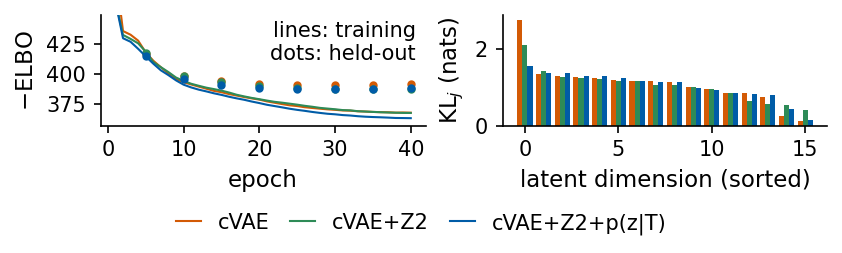
3.5 Synthetic data at the same conditions
With the three generators trained, each of them produces 64 configurations at every one of the 37 temperatures, the same number as in S_A and S_B, using Bernoulli sampling. For the best model we also keep the most likely configuration \(\tilde s_i=\mathrm{sign}\,\ell_i\) obtained from the same latent vectors, to see what happens when the sampling noise of the decoder is removed. The figure compares snapshots of all sets side by side.
Code
@nnx.jitdef decoder_logits(model, z, c):return model.decode(z, c)def generate(model, cond, n_per_cond, key, side, symmetric=False, batch=8192):'''n_per_cond configurations at every condition row of cond (K, n_cond); z ~ p(z|c). Returns two int8 arrays (K, n_per_cond, side, side): Bernoulli samples and most likely configurations (same z).''' c_all = np.repeat(np.asarray(cond, np.float32), n_per_cond, axis=0) # (K * n, n_cond) bern, ml = [], []for i inrange(0, len(c_all), batch): k_z, k_s, k_f = jax.random.split(jax.random.fold_in(key, i), 3) c = jnp.asarray(c_all[i:i + batch]) mu_p, logvar_p = model.prior(c) # (b, d) each; zeros for N(0, 1) z = mu_p + jnp.exp(0.5* logvar_p) * jax.random.normal(k_z, mu_p.shape) # z ~ p(z|c) logits = decoder_logits(model, z, c) # (b, side*side) s_b = jnp.where(jax.random.bernoulli(k_s, jax.nn.sigmoid(logits)), 1, -1) # independent Bernoulli spins s_m = jnp.where(logits >0, 1, -1) # most likely configurationif symmetric: # global flip with probability 1/2 flip = jnp.where(jax.random.bernoulli(k_f, 0.5, (len(c), 1)), -1, 1) s_b, s_m = s_b * flip, s_m * flip bern.append(np.asarray(s_b, np.int8)); ml.append(np.asarray(s_m, np.int8)) shape = (len(cond), n_per_cond, side, side)return np.concatenate(bern).reshape(shape), np.concatenate(ml).reshape(shape)ML = BEST +" (most likely)"SYN = {} # name -> (37, 64, L, L) int8for k, (name, (sym, _, _)) inenumerate(VARIANTS.items()): SYN[name], s_ml = generate(models[name], cond_I(T_grid), 64, jax.random.key(10+ k), L, sym)if name == BEST: SYN[ML] = s_mlprint({k: v.shape for k, v in SYN.items()})T_show = [1.6, 2.1, T_grid[i_c], 2.5, 3.2]rows = [("Monte Carlo", S_A)] + [(n.replace("cVAE+", "+"), SYN[n]) for n in VARIANTS] + [("most likely", SYN[ML])]with mpl.rc_context(SLIDE_RC): fig, ax = plt.subplots(len(rows), len(T_show), figsize=(2.6, 2.3), gridspec_kw=dict(wspace=0.06, hspace=0.06))for k, Tv inenumerate(T_show): i =int(np.argmin(np.abs(T_grid - Tv)))for r, (nm, S) inenumerate(rows): ax[r, k].imshow(S[i, 1], cmap=SPIN, vmin=-1, vmax=1, interpolation="nearest") ax[r, k].set_xticks([]); ax[r, k].set_yticks([])if k ==0: ax[r, k].set_ylabel(nm, fontsize=10, rotation=0, ha="right", va="center") ax[0, k].set_title(f"{T_grid[i]:.2f}", fontsize=10) save(fig, "gen_l6_ising_samples.png"); plt.show()
Before testing the synthetic data statistically we look at how a single synthetic configuration comes about, for the best model at two temperatures, \(T=1.8\) (ordered) and \(T=2.26\) (near \(T_c\)). Each row of the next figure starts with a Monte Carlo snapshot from S_A for comparison. Then comes the decoder output for one latent vector \(\mathbf z\sim p_\psi(\mathbf z|T)\), namely the probability \(\mathrm{sigm}(\ell_i)\) that each spin points up, shown as a grey level (white 0, navy 1). The next two panels are two independent Bernoulli samples from these same probabilities, and the last panel is the most likely configuration \(\mathrm{sign}\,\ell_i\).
The figure is followed by a quantitative check of the mean-field structure. For the synthetic snapshots we compare the nearest-neighbour correlation \(G(1)\) measured on the Bernoulli samples with the value predicted from the probabilities alone, assuming independent spins, \(\frac1{2N}\sum_{\mathbf x,\mu}\overline{\tanh(\ell_{\mathbf x}/2)\tanh(\ell_{\mathbf x+\hat e_\mu}/2)}\), the average over the latent vectors of the products of the mean spins. If the spins are indeed independent given \(\mathbf z\), the two agree. The Monte Carlo value of \(G(1)=-\langle e\rangle/2\) is printed next to them.
Code
@nnx.jitdef logits_at(model, z, c):return model.decode(z, c)def mean_field_G1(model, T, n, key):"""G(1) of Bernoulli samples and its independent-spin prediction, both from the same n latent vectors at T.""" c = jnp.asarray(cond_I(np.full(n, T))) mu_p, lv_p = model.prior(c) z = mu_p + jnp.exp(0.5* lv_p) * jax.random.normal(key, mu_p.shape) l = np.asarray(logits_at(model, z, c)).reshape(n, L, L) m = np.tanh(l /2) # <s_i> given z s = np.where(np.random.default_rng(5).random(l.shape) <1/ (1+ np.exp(-l)), 1.0, -1.0) nn =lambda a, b: 0.5* ((a * np.roll(b, 1, -1)).mean() + (a * np.roll(b, 1, -2)).mean())return nn(s, s), nn(m, m), lrows_T = [1.8, 2.26]mf = {}with mpl.rc_context(SLIDE_RC): fig, ax = plt.subplots(2, 5, figsize=(5.5, 1.95), layout="constrained")for r, Tv inenumerate(rows_T): i =int(np.argmin(np.abs(T_grid - Tv))) G_s, G_m, l = mean_field_G1(models[BEST], T_grid[i], 256, jax.random.key(70+ r)) mf[float(T_grid[i])] = (G_s, G_m, float(P_A["G"][i, 1])) p_up =1/ (1+ np.exp(-l[0])) rng_s = np.random.default_rng(80+ r) panels = [(S_A[i, 0], "Monte Carlo"), (p_up, r"$\sigma(\ell_i)$"), (np.where(rng_s.random(p_up.shape) < p_up, 1, -1), "sample 1"), (np.where(rng_s.random(p_up.shape) < p_up, 1, -1), "sample 2"), (np.where(l[0] >0, 1, -1), r"sign $\ell_i$")]for k, (img, title) inenumerate(panels):if k ==1: ax[r, k].imshow(img, cmap=SPIN_GREY, vmin=0, vmax=1, interpolation="nearest")else: ax[r, k].imshow(img, cmap=SPIN, vmin=-1, vmax=1, interpolation="nearest") ax[r, k].set_xticks([]); ax[r, k].set_yticks([])if r ==0: ax[r, k].set_title(title, fontsize=11) ax[r, 0].set_ylabel(f"$T={T_grid[i]:.2f}$", fontsize=11) save(fig, "gen_l6_spin_sampling.png"); plt.show()for Tv, (G_s, G_m, G_mc) in mf.items():print(f"T = {Tv:.2f}: G(1) of Bernoulli samples {G_s:.3f}, independent-spin prediction {G_m:.3f}, Monte Carlo {G_mc:.3f}")NUMBERS["mf_G1"] = {f"{Tv:.2f}": [round(float(v), 3) for v in vals] for Tv, vals in mf.items()}
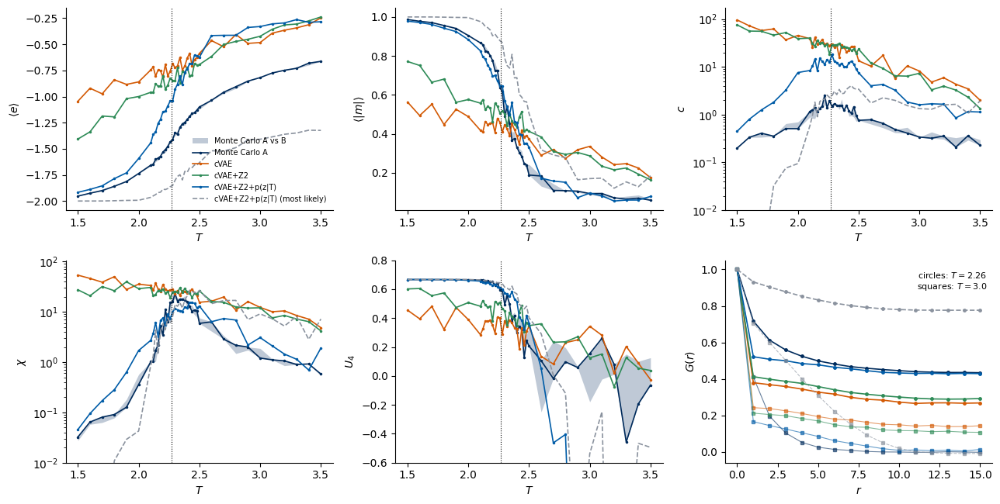
T = 1.80: G(1) of Bernoulli samples 0.894, independent-spin prediction 0.895, Monte Carlo 0.930
T = 2.26: G(1) of Bernoulli samples 0.520, independent-spin prediction 0.521, Monte Carlo 0.717
The decoder output is a smooth map of probabilities. Inside a domain the probabilities are close to 0 or 1, and at the domain walls and in the disordered regions they are intermediate. A Bernoulli sample turns every intermediate probability into an independent coin flip, which produces the salt-and-pepper noise inside the domains, and two samples from the same \(\mathbf z\) share the large-scale pattern but differ spin by spin. The most likely configuration removes the noise and keeps only the smooth domains. Neither looks like the Monte Carlo snapshot at short distances, where neighbouring spins are correlated through the bonds of \(H\).
The printed correlations confirm the mean-field structure. The nearest-neighbour correlation of the Bernoulli samples equals the prediction from the product of the mean spins, up to sampling noise, so the generated spins are independent given \(\mathbf z\), as the decoder prescribes. Both numbers lie below the Monte Carlo \(G(1)\) at the same temperature, so the generator has fewer satisfied bonds, hence a higher energy, than the Boltzmann distribution. The order parameter, by contrast, is a sum over all spins, and the independent coin flips average out in it. This is the mechanism behind every result of the following sections.
3.7 Evaluation by networks trained on real simulations
We now apply the regressor and the classifier of Section 3.3 to S_A, S_B and to the synthetic sets. A synthetic snapshot “looks like temperature \(T\)” to the regressor if \(\tilde T\approx T\), and the minimum of the classifier’s confidence marks the transition it sees. In the output, the real sets give an RMSE of 0.12 and a confidence minimum at \(T=2.28\). The plain cVAE reads as far too hot at low temperature (mean \(\tilde T=2.77\) at \(T=1.5\)) and puts the confidence minimum at \(T=1.7\). The conditional prior brings the low-temperature end back (\(\tilde T=1.69\) at \(T=1.5\)) and the confidence minimum to \(T=2.2\), yet the RMSE of 0.62 is still five times that of real data, while the most likely configurations are read as far too cold.
Code
EVAL = {"Monte Carlo A": (That_A, p1_A), "Monte Carlo B": (That_B, p1_B)}for name in SYN: EVAL[name] = evaluate(SYN[name])for name, (Th, p1) in EVAL.items():print(f"{name:30s} regressor RMSE {rmse(Th):.3f} mean T_hat at T = 1.5 / {T_grid[i_c]} / 3.5: "f"{Th[0].mean():.2f} / {Th[i_c].mean():.2f} / {Th[-1].mean():.2f} confidence minimum at T = {T_grid[np.argmin(confidence(p1))]}") NUMBERS[f"ising_rmse_{name}"] =round(rmse(Th), 3) NUMBERS[f"ising_confmin_{name}"] =float(T_grid[np.argmin(confidence(p1))])styles = [("Monte Carlo A", navy, "-")] + [(n, VARIANTS[n][2], "-") for n in VARIANTS] + [(ML, grey, "--")]SHORT = {"Monte Carlo A": "Monte Carlo", "cVAE": "cVAE", "cVAE+Z2": "+Z2", "cVAE+Z2+p(z|T)": "+Z2+p(z|T)", ML: "most likely"}with mpl.rc_context(SLIDE_RC): fig, ax = plt.subplots(1, 2, figsize=(5.5, 1.95), layout="constrained")for name, col, ls in styles: Th, p1 = EVAL[name] ax[0].plot(T_grid, Th.mean(1), ls, color=col, marker=".", ms=3, lw=1.2, label=SHORT[name]) ax[1].plot(T_grid, confidence(p1), ls, color=col, marker=".", ms=3, lw=1.2) Th_A = EVAL["Monte Carlo A"][0] ax[0].fill_between(T_grid, Th_A.mean(1) - Th_A.std(1), Th_A.mean(1) + Th_A.std(1), color=navy, alpha=0.12, lw=0) ax[0].plot(T_grid, T_grid, ":", color="k", lw=0.8) ax[0].set_xlabel("requested $T$"); ax[0].set_ylabel(r"$\langle\tilde T\rangle$") ax[1].axvline(TC, color="k", ls=":", lw=0.8) ax[1].set_xlabel("$T$"); ax[1].set_ylabel(r"$\langle\max(p_0,p_1)\rangle$") fig.legend(loc="outside lower center", ncol=5, handlelength=1.2, columnspacing=0.8) save(fig, "gen_l6_ising_evaluators.png"); plt.show()
Monte Carlo A regressor RMSE 0.120 mean T_hat at T = 1.5 / 2.26 / 3.5: 1.61 / 2.27 / 3.29 confidence minimum at T = 2.28
Monte Carlo B regressor RMSE 0.116 mean T_hat at T = 1.5 / 2.26 / 3.5: 1.61 / 2.28 / 3.30 confidence minimum at T = 2.28
cVAE regressor RMSE 0.978 mean T_hat at T = 1.5 / 2.26 / 3.5: 2.77 / 3.13 / 3.77 confidence minimum at T = 1.7
cVAE+Z2 regressor RMSE 0.837 mean T_hat at T = 1.5 / 2.26 / 3.5: 2.34 / 3.04 / 3.78 confidence minimum at T = 2.22
cVAE+Z2+p(z|T) regressor RMSE 0.623 mean T_hat at T = 1.5 / 2.26 / 3.5: 1.69 / 2.79 / 3.73 confidence minimum at T = 2.2
cVAE+Z2+p(z|T) (most likely) regressor RMSE 0.715 mean T_hat at T = 1.5 / 2.26 / 3.5: 1.51 / 1.68 / 2.15 confidence minimum at T = 2.6
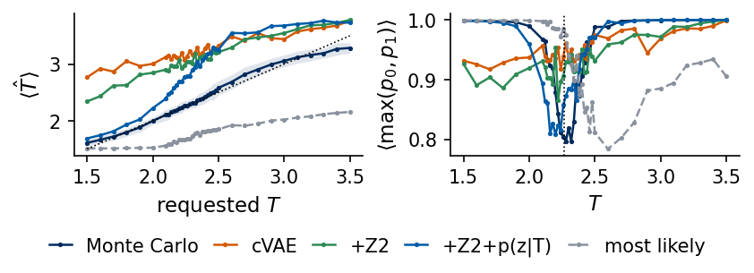
3.8 Hamiltonian observables of the synthetic data
The second family of tests uses the Hamiltonian. We compute all observables of Section 3.2 for S_A, S_B and the synthetic sets. In the figure the shaded band is the real-vs-real spread between S_A and S_B, and the table below it gives the noise ratios \(R\) together with the values of \(\langle e\rangle\), \(\langle|m|\rangle\) and \(c\) at a few temperatures. In the column for the energy, even the best model, cVAE+Z2+p(z|T), is 34.8 noise units away from the Monte Carlo energy, while its magnetisation is within 2.8 noise units.
Code
PHYS = {"Monte Carlo A": P_A, "Monte Carlo B": P_B}for name in SYN: PHYS[name] = ising_observables(SYN[name], T_grid)labels = {"e": r"$\langle e\rangle$", "m": r"$\langle|m|\rangle$", "c": r"$c$", "chi": r"$\chi$", "U4": r"$U_4$"}i_hot =int(np.argmin(np.abs(T_grid -3.0)))with mpl.rc_context(SLIDE_RC): fig, ax = plt.subplots(2, 3, figsize=(5.5, 2.15), layout="constrained")for a, key inzip(ax.ravel()[:5], labels): a.fill_between(T_grid, np.minimum(P_A[key], P_B[key]), np.maximum(P_A[key], P_B[key]), color=navy, alpha=0.25, lw=0)for name, col, ls in styles: a.plot(T_grid, PHYS[name][key], ls, color=col, lw=1.1, label=SHORT[name]) a.axvline(TC, color="k", ls=":", lw=0.8); a.set_ylabel(labels[key], labelpad=1)if key in ("c", "chi"): a.set_yscale("log"); a.set_ylim(bottom=1e-2)if key =="U4": a.set_ylim(-0.6, 0.8) # U4 = 1 - <m^4>/3<m^2>^2 is noisy where <m^2> ~ 1/Nfor a in ax[1]: a.set_xlabel("$T$", labelpad=1) a = ax[1, 2]for name, col, ls in styles: a.plot(PHYS[name]["G"][i_c], ls, color=col, marker="o", ms=2, lw=1.1) a.plot(PHYS[name]["G"][i_hot], ls, color=col, marker="s", ms=2, lw=0.7, alpha=0.6) a.set_xlabel("$r$", labelpad=1); a.set_ylabel("$G(r)$", labelpad=1) fig.legend(*ax[0, 0].get_legend_handles_labels(), loc="outside lower center", ncol=5, handlelength=1.2, columnspacing=0.8) save(fig, "gen_l6_ising_physics.png"); plt.show()print("noise units R = mean_T|O_syn - O_A| / mean_T|O_B - O_A| (R ~ 1: as close as an independent Monte Carlo set)")# G(1) = -<e>/2 for the Ising model (both are the nearest-neighbour correlation), so we test the long-distance value G(L/2) insteadprint(f"{'':30s}"+"".join(f"{k:>8s}"for k inlist(labels) + ["W1(e)", "W1(m)", "G(L/2)"]))W1 = {"Monte Carlo B": (W_AB_e, W_AB_m)}for name in ["Monte Carlo B"] +list(SYN): P = PHYS[name] W1[name] = (wasserstein1(P["e_samples"], P_A["e_samples"]), wasserstein1(P["m_samples"], P_A["m_samples"])) R = [noise_ratio(P[k], P_A[k], P_B[k]) for k in labels] R += [noise_ratio(W1[name][0], 0, W_AB_e), noise_ratio(W1[name][1], 0, W_AB_m), noise_ratio(P["G"][:, -1], P_A["G"][:, -1], P_B["G"][:, -1])]print(f"{name:30s}"+"".join(f"{r:8.1f}"for r in R)) NUMBERS[f"ising_R_{name}"] =dict(zip(list(labels) + ["W1e", "W1m", "GL2"], [round(r, 1) for r in R]))sel = [0, int(np.argmin(np.abs(T_grid -2.0))), i_c, int(np.argmin(np.abs(T_grid -2.5))), i_hot, n_T -1]print(f"\nT {np.round(T_grid[sel], 2)}")for key in ["e", "m", "c"]:for name in ["Monte Carlo A", "Monte Carlo B"] +list(SYN):print(f"<{key}> {name:24s}{np.round(PHYS[name][key][sel], 3)}") NUMBERS[f"ising_{key}_table"] = {"T": [float(t) for t in T_grid[sel]],**{n: [round(float(v), 3) for v in PHYS[n][key][sel]] for n in ["Monte Carlo A", BEST, ML]}}
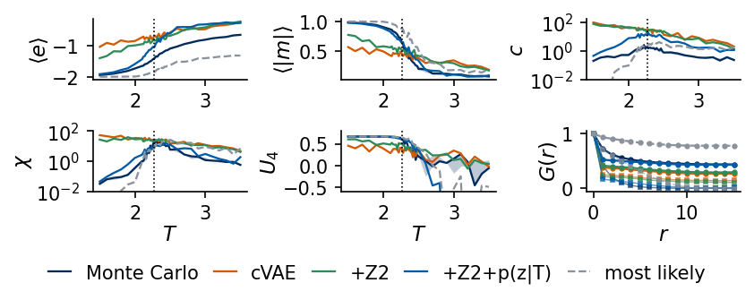
noise units R = mean_T|O_syn - O_A| / mean_T|O_B - O_A| (R ~ 1: as close as an independent Monte Carlo set)
e m c chi U4 W1(e) W1(m) G(L/2)
Monte Carlo B 1.0 1.0 1.0 1.0 1.0 1.0 1.0 1.0
cVAE 60.0 13.3 155.4 11.8 2.1 38.1 3.3 15.0
cVAE+Z2 50.0 10.8 146.1 9.7 1.7 31.9 2.8 12.4
cVAE+Z2+p(z|T) 34.8 2.8 39.0 2.0 4.2 21.6 1.3 3.0
cVAE+Z2+p(z|T) (most likely) 39.6 9.6 6.6 3.7 3.2 24.5 2.8 11.1
T [1.5 2. 2.26 2.5 3. 3.5 ]
<e> Monte Carlo A [-1.953 -1.737 -1.433 -1.1 -0.819 -0.663]
<e> Monte Carlo B [-1.952 -1.737 -1.439 -1.122 -0.819 -0.655]
<e> cVAE [-1.045 -0.86 -0.757 -0.587 -0.483 -0.247]
<e> cVAE+Z2 [-1.407 -1. -0.823 -0.694 -0.423 -0.238]
<e> cVAE+Z2+p(z|T) [-1.917 -1.593 -1.042 -0.625 -0.33 -0.284]
<e> cVAE+Z2+p(z|T) (most likely) [-2. -1.993 -1.863 -1.632 -1.409 -1.324]
<m> Monte Carlo A [0.987 0.905 0.639 0.189 0.094 0.06 ]
<m> Monte Carlo B [0.987 0.902 0.672 0.243 0.089 0.067]
<m> cVAE [0.564 0.489 0.46 0.374 0.336 0.175]
<m> cVAE+Z2 [0.772 0.576 0.508 0.413 0.287 0.164]
<m> cVAE+Z2+p(z|T) [0.979 0.884 0.646 0.332 0.096 0.079]
<m> cVAE+Z2+p(z|T) (most likely) [1. 0.997 0.879 0.505 0.171 0.185]
<c> Monte Carlo A [0.2 0.509 1.937 0.761 0.34 0.228]
<c> Monte Carlo B [0.211 0.705 2.016 0.772 0.337 0.298]
<c> cVAE [96.011 45.545 27.96 13.397 8.181 1.998]
<c> cVAE+Z2 [75.629 38.972 18.407 23.452 7.34 1.339]
<c> cVAE+Z2+p(z|T) [ 0.448 7.621 12.535 7.506 1.614 1.136]
<c> cVAE+Z2+p(z|T) (most likely) [0. 0.095 2.282 3.412 1.338 1.949]
Agreement of averages does not imply agreement of distributions, so we compare the full distributions as well. We compute \(W_1\) between the synthetic and the real S_A distributions of \(e\) and \(m\) at every temperature, against the real-vs-real value \(W_1(A,B)\), and show the histograms of \(P(e)\) and \(P(m)\) at three temperatures. Below \(T_c\) we also count the snapshots whose \(|m|\) is less than half the Monte Carlo value, which are mixtures of the two ordered states. In the Monte Carlo data their fraction is 0.011, for the plain cVAE it is 0.450, with the \(\mathbb Z_2\) symmetry it drops to 0.271, and with the conditional prior to 0.009.
Code
T3 = [int(np.argmin(np.abs(T_grid - t))) for t in (1.8, TC, 3.0)]# notebook figure: W1 distance to Monte Carlo A as a function of Tfig, axs = plt.subplots(1, 2, figsize=(13, 4.2), layout="constrained")for row, (key, xl) inenumerate([("e_samples", "$e$"), ("m_samples", "$m$")]): a = axs[row] a.plot(T_grid, W1["Monte Carlo B"][row], color=navy, lw=1.5, label="Monte Carlo A vs B")for name, col, ls in styles[1:]: a.plot(T_grid, W1[name][row], ls, color=col, lw=1.2, label=SHORT[name]) a.set_yscale("log"); a.axvline(TC, color="k", ls=":", lw=0.8) a.set_xlabel("$T$"); a.set_ylabel(f"$W_1$ of $P$({xl})")axs[0].legend(); plt.show()# slide figure: P(e) and P(m) at three temperatureswith mpl.rc_context(SLIDE_RC): fig, ax = plt.subplots(2, 3, figsize=(5.5, 2.25), layout="constrained")for row, (key, xl) inenumerate([("e_samples", "$e$"), ("m_samples", "$m$")]):for k, i inenumerate(T3): a = ax[row, k] allv = np.concatenate([PHYS[n][key][i] for n, _, _ in styles]) bins = np.linspace(-1, 1, 31) if key =="m_samples"else np.linspace(allv.min(), allv.max(), 31) a.hist(np.concatenate([P_A[key][i], P_B[key][i]]), bins, density=True, color=navy, alpha=0.35, label="Monte Carlo A+B")for name, col, ls in styles[1:]: a.hist(PHYS[name][key][i], bins, density=True, histtype="step", color=col, lw=1.1, ls=ls, label=SHORT[name]) a.set_xlabel(xl, labelpad=1); a.set_yticks([])if row ==0: a.set_title(f"$T={T_grid[i]:.2f}$") fig.legend(*ax[0, 0].get_legend_handles_labels(), loc="outside lower center", ncol=5, handlelength=1.2, columnspacing=0.8) save(fig, "gen_l6_ising_distributions.png"); plt.show()below = T_grid < TCfor name, S in [("Monte Carlo A", S_A)] + [(n, SYN[n]) for n in VARIANTS]: m = S.astype(np.float32).mean((-1, -2))[below] # (n_T below T_c, 64) frac_mid =float((np.abs(m) <0.5* np.abs(P_A["m_samples"][below]).mean(1, keepdims=True)).mean())print(f"{name:15s} T < T_c: fraction with m > 0: {(m >0).mean():.3f}; "f"fraction with |m| < <|m|>_MC / 2 (mixtures of the two ordered states): {frac_mid:.3f}") NUMBERS[f"ising_mpos_{name}"] =round(float((m >0).mean()), 3); NUMBERS[f"ising_mixed_{name}"] =round(frac_mid, 3)
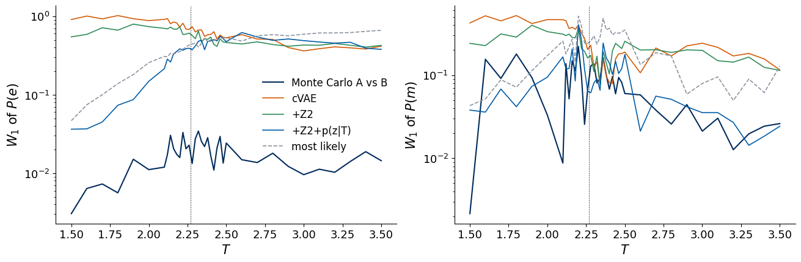
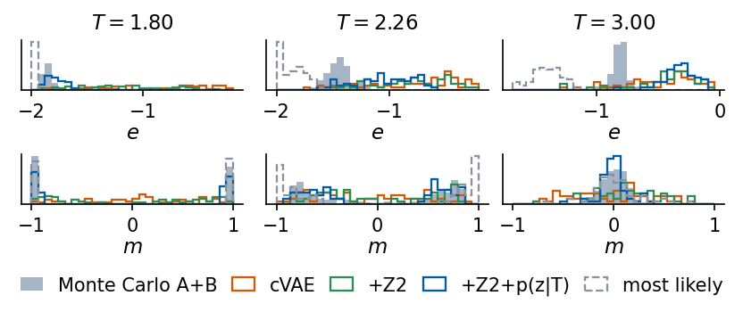
Monte Carlo A T < T_c: fraction with m > 0: 0.515; fraction with |m| < <|m|>_MC / 2 (mixtures of the two ordered states): 0.011
cVAE T < T_c: fraction with m > 0: 0.500; fraction with |m| < <|m|>_MC / 2 (mixtures of the two ordered states): 0.450
cVAE+Z2 T < T_c: fraction with m > 0: 0.506; fraction with |m| < <|m|>_MC / 2 (mixtures of the two ordered states): 0.271
cVAE+Z2+p(z|T) T < T_c: fraction with m > 0: 0.477; fraction with |m| < <|m|>_MC / 2 (mixtures of the two ordered states): 0.009
3.9 Two-sample test and memorisation
The physics tests check selected observables, while a classifier two-sample test (C2ST) checks the distribution as a whole. If two sets come from the same distribution, no classifier can tell them apart better than chance. At three temperatures we train a fresh small CNN to separate real from synthetic snapshots (balanced classes, 75% for training, 25% held out) and report the held-out accuracy, where 0.5 means indistinguishable and 1.0 means trivially separable. As a sanity check, real (S_train) against real (S_A+S_B) must give \(\approx0.5\).
A generator that copies its training set would pass every physics test, so we must also exclude memorisation. For every synthetic and every held-out real snapshot we compute the normalised Hamming distance to the nearest training snapshot at the same \(T\), minimised over the global flip, \[
d_{\rm NN}(\mathbf s)=\min_{\mathbf t\in\text{train}}\ \frac{1-|\mathbf s\cdot\mathbf t|/N}{2}\in[0,\tfrac12].
\] Real held-out snapshots are new draws from the Boltzmann distribution, so their \(d_{\rm NN}\) is the reference, and a synthetic \(d_{\rm NN}\) much smaller than the real one would mean copying.
Code
def c2st(X1, X2, seed, epochs=25):'''Held-out accuracy of a CNN trained to separate X1 (n1, L, L) from X2 (n2, L, L). Both classes are cut to n = min(n1, n2) and split 75 / 25 *within each class* (stratified): with a plain random split a class that is over-represented in training is under-represented in the test set, which biases the accuracy below 0.5.''' n =min(len(X1), len(X2)); n_tr =int(0.75* n) r = np.random.default_rng(seed) p1, p2 = r.permutation(len(X1))[:n], r.permutation(len(X2))[:n] X_tr = np.concatenate([X1[p1[:n_tr]], X2[p2[:n_tr]]]); y_tr = np.repeat(np.array([0, 1], np.int32), n_tr) X_te = np.concatenate([X1[p1[n_tr:]], X2[p2[n_tr:]]]); y_te = np.repeat(np.array([0, 1], np.int32), n - n_tr) model = CNN(2, rngs=nnx.Rngs(seed)) train_model(model, xent_loss, (X_tr, y_tr), epochs=epochs, batch=32, lr=3e-3, seed=seed) pred = predict(model, X_te).argmax(-1)returnfloat((pred == y_te).mean()), len(y_te)t0 = time.time()C2ST = {}c2st_names = ["real vs real"] +list(VARIANTS) + [ML]for i in T3: real_all = np.concatenate([S_train[i], S_A[i], S_B[i]]) # (256, L, L) C2ST[("real vs real", i)] = c2st(S_train[i], np.concatenate([S_A[i], S_B[i]]), seed=i)for k, (name, (sym, _, _)) inenumerate(VARIANTS.items()): syn, syn_ml = generate(models[name], cond_I(T_grid[[i]]), 256, jax.random.key(100+10* i + k), L, sym) C2ST[(name, i)] = c2st(real_all, syn[0], seed=i)if name == BEST: C2ST[(ML, i)] = c2st(real_all, syn_ml[0], seed=i)print(f"C2ST held-out accuracy (0.5 = indistinguishable), {time.time() - t0:.0f} s")for name in c2st_names: accs = [C2ST[(name, i)][0] for i in T3]print(f" {name:30s}"+"".join(f" T = {T_grid[i]:.2f}: {a:.2f} (n_test = {C2ST[(name, i)][1]})"for a, i inzip(accs, T3))) NUMBERS[f"ising_c2st_{name}"] = [round(a, 2) for a in accs]def nn_hamming(Q, R):'''Q (nq, L, L), R (nr, L, L) spins -> (nq,) normalised Hamming distance to the nearest R, minimised over the global flip.''' q = Q.reshape(len(Q), -1).astype(np.float32); r = R.reshape(len(R), -1).astype(np.float32) overlap = q @ r.T / q.shape[1] # (nq, nr) in [-1, 1]return ((1.0- np.abs(overlap)) /2.0).min(axis=1) # |overlap|: the flipped copy counts as the sameD_NN = {name: np.stack([nn_hamming(S[i], S_train[i]) for i inrange(n_T)])for name, S in [("Monte Carlo A", S_A)] + [(n, SYN[n]) for n in VARIANTS]} # (37, 64) eachfor name, d in D_NN.items():print(f"nearest-neighbour distance to the training set, median at T = "+", ".join(f"{T_grid[i]:.2f}: {np.median(d[i]):.3f}"for i in T3) +f"; minimum over all T {d.min():.3f} [{name}]") NUMBERS[f"ising_dnn_{name}"] = [round(float(np.median(d[i])), 3) for i in T3]with mpl.rc_context(SLIDE_RC): fig, ax = plt.subplots(1, 2, figsize=(5.5, 2.0), layout="constrained", gridspec_kw={"width_ratios": [1.2, 1]}) cols = [navy] + [VARIANTS[n][2] for n in VARIANTS] + [grey] w =0.16for k, (name, col) inenumerate(zip(c2st_names, cols)): ax[0].bar(np.arange(3) + (k -2) * w, [C2ST[(name, i)][0] for i in T3], w, color=col, label=SHORT.get(name, name).replace("real vs real", "real vs real")) ax[0].axhline(0.5, color="k", ls=":", lw=0.8); ax[0].set_ylim(0.3, 1.02); ax[0].set_yticks(np.arange(0.3, 1.01, 0.1)) ax[0].set_xticks(range(3)); ax[0].set_xticklabels([f"$T={T_grid[i]:.2f}$"for i in T3]); ax[0].set_ylabel("C2ST accuracy")for name, col in [("Monte Carlo A", navy)] + [(n, VARIANTS[n][2]) for n in VARIANTS]: ax[1].plot(T_grid, np.median(D_NN[name], 1), ".-", color=col, ms=3) ax[1].axvline(TC, color="k", ls=":", lw=0.8) ax[1].set_xlabel("$T$"); ax[1].set_ylabel(r"median $d_{\rm NN}$") fig.legend(*ax[0].get_legend_handles_labels(), loc="outside lower center", ncol=5, handlelength=1.0, columnspacing=0.7) save(fig, "gen_l6_ising_checks.png"); plt.show()
C2ST held-out accuracy (0.5 = indistinguishable), 43 s
real vs real T = 1.80: 0.50 (n_test = 64) T = 2.26: 0.53 (n_test = 64) T = 3.00: 0.50 (n_test = 64)
cVAE T = 1.80: 0.95 (n_test = 128) T = 2.26: 0.94 (n_test = 128) T = 3.00: 0.99 (n_test = 128)
cVAE+Z2 T = 1.80: 0.95 (n_test = 128) T = 2.26: 0.98 (n_test = 128) T = 3.00: 1.00 (n_test = 128)
cVAE+Z2+p(z|T) T = 1.80: 0.73 (n_test = 128) T = 2.26: 0.95 (n_test = 128) T = 3.00: 0.98 (n_test = 128)
cVAE+Z2+p(z|T) (most likely) T = 1.80: 1.00 (n_test = 128) T = 2.26: 0.98 (n_test = 128) T = 3.00: 0.99 (n_test = 128)
nearest-neighbour distance to the training set, median at T = 1.80: 0.027, 2.26: 0.182, 3.00: 0.427; minimum over all T 0.003 [Monte Carlo A]
nearest-neighbour distance to the training set, median at T = 1.80: 0.276, 2.26: 0.270, 3.00: 0.414; minimum over all T 0.003 [cVAE]
nearest-neighbour distance to the training set, median at T = 1.80: 0.129, 2.26: 0.259, 3.00: 0.422; minimum over all T 0.004 [cVAE+Z2]
nearest-neighbour distance to the training set, median at T = 1.80: 0.033, 2.26: 0.202, 3.00: 0.427; minimum over all T 0.003 [cVAE+Z2+p(z|T)]
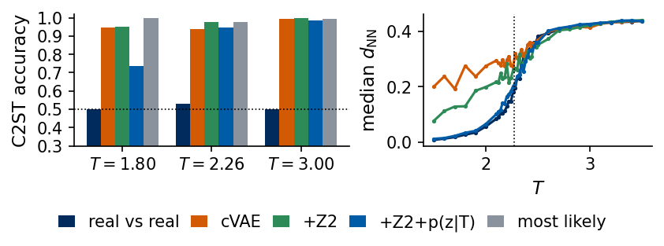
3.10 Pattern-level and Hamiltonian-level tests
Taken together, the tests of this section draw a consistent picture. The training health is similar for the three models. The held-out \(-\)ELBO is close, all latent units are active and about 80% of the spins are reproduced from \(\mathbf z=\boldsymbol\mu\). The ELBO alone therefore does not tell which model generates the right physics.
The plain cVAE, asked for a fixed \(T\), produces a mixture of temperatures. Its \(\langle|m|\rangle\) is far too small below \(T_c\) and too large above, the regressor reads temperatures that depend only weakly on the requested one, and below \(T_c\) a large fraction of the snapshots are mixtures of the two ordered states. Imposing the \(\mathbb Z_2\) symmetry removes part of these mixtures, but the temperature is still not followed. Only with the conditional prior does the generator follow the temperature, and \(\langle|m|\rangle\), \(\chi\), \(P(m)\) and the regressor below \(T_c\) are now close to the Monte Carlo values, within a few noise units.
The local tests nevertheless fail. The energy \(\langle e\rangle\) is too high around and above \(T_c\), by tens of noise units. The specific heat is two to fifteen times too large at the six tabulated temperatures, and \(P(e)\) is far too broad. The reason is the one anticipated in Section 2. Given \(\mathbf z\) the spins are drawn independently, and every spin whose logit is not saturated breaks its bonds at random. Taking the most likely configuration \(\tilde s_i=\mathrm{sign}\,\ell_i\) removes that noise and over-smooths instead. Then \(\langle e\rangle\) is too low, the domains are large and compact, \(G(r)\) is too large at all distances and the regressor reads temperatures far too low.
The C2ST separates every synthetic set from the Monte Carlo data, clearly so near and above \(T_c\), while real against real gives 0.5. The generator does not memorise, since the nearest-neighbour distances of the best model to the training set are those of new Monte Carlo snapshots.
The lesson of the Ising model is that global, pattern-level quantities (\(\langle|m|\rangle\), the regressor, the classifier) are more forgiving than local, Hamiltonian-level ones (\(\langle e\rangle\), \(c\), \(P(e)\)). A generator that passes only the first kind of test merely looks right.
4. The \(J_1\)–\(J_2\) model
We now move to a model with a richer phase diagram, \[
H=-J_1\sum_{\langle ij\rangle}s_is_j+J_2\sum_{\langle\langle ij\rangle\rangle}s_is_j,\qquad g=J_2/J_1,\quad J_1=1 ,
\] whose low-temperature phase is a ferromagnet for \(g<1/2\) and a stripe phase for \(g>1/2\) (Lab 018). For every snapshot we compute \(|m|\), the stripe order parameter \(m_{\rm str}=\sqrt{m_x^2+m_y^2}\) with \(m_x=\frac1N\sum_{x,y}(-1)^x s_{x,y}\) and \(m_y\) defined with \((-1)^y\), and the energy per spin \(e=-\frac1{2N}\sum_i s_i h_i\) with the local field \(h_i=\sum_{\rm nn}s_j-g\sum_{\rm nnn}s_j\). Per grid point we compute \(c=N\,\mathrm{Var}(e)/T^2\).
The condition is now \(\mathbf c=(g,T)\), and this model tests whether the generator produces correct configurations at conditions it has never seen. At every grid point the 100 snapshots are split into training (60), S_A (20) and S_B (20). The cVAE is trained only at every second \(g\) and every second \(T\), a quarter of the grid that we call “seen”, and generates at every grid point, so three quarters of the conditions were never seen in training. The phase classifier, in contrast, is trained on real training snapshots at all points.
Code
dj = np.load(f"{DATA}/j1j2_L32.npz")LJ =int(dj["L"]); NJ = LJ * LJg_grid = dj["g"]; oT = np.argsort(dj["T"]); TJ = dj["T"][oT]SJ = unpack_spins(dj["configs"], LJ)[:, oT] # (nG, nT, 100, L, L) int8nG, nT, nS = SJ.shape[:3]pj = np.random.default_rng(1).permutation(nS)J_train, J_A, J_B = SJ[:, :, pj[:60]], SJ[:, :, pj[60:80]], SJ[:, :, pj[80:100]]seen = np.zeros((nG, nT), bool); seen[::2, ::2] =True# conditions used to train the generatorprint(f"grid {nG} g x {nT} T, g in [{g_grid[0]}, {g_grid[-1]}], T in [{TJ[0]:.2f}, {TJ[-1]:.2f}], {nS} snapshots per point")print(f"split per point: {J_train.shape[2]} training, {J_A.shape[2]} + {J_B.shape[2]} held-out; "f"seen conditions: {seen.sum()} of {seen.size}")
grid 81 g x 79 T, g in [0.0, 1.0], T in [0.10, 4.00], 100 snapshots per point
split per point: 60 training, 20 + 20 held-out; seen conditions: 1640 of 6399
The function j1j2_observables(S) takes S of shape (nG, nT, n, L, L) and returns per-snapshot arrays of shape (nG, nT, n) holding \(|m|\), \(m_{\rm str}\), \(e\) and the stripe orientation, which is \(+1\) if \(|m_x|>|m_y|\) (the spins alternate along \(x\)) and \(-1\) otherwise. The loop runs over \(g\) to keep the memory small. The cell first checks the energy formula on a ferromagnet and on a perfect stripe state at \(g=0.75\), where the exact energies are \(-0.5\) and \(-1.5\).
Code
def j1j2_observables(S):'''Per-snapshot |m|, m_str, e and stripe orientation for S (nG, nT, n, L, L); outputs (nG, nT, n).''' phase_x = np.where(np.arange(LJ) %2==0, 1.0, -1.0)[None, :] # (1, L): (-1)^x along the column index phase_y = phase_x.T # (L, 1): (-1)^y along the row index out = {k: np.zeros(S.shape[:3], np.float32) for k in ["m", "m_str", "e", "orient"]}for a inrange(S.shape[0]): s = S[a].astype(np.float32) # (nT, n, L, L) nn =sum(np.roll(s, sh, ax) for sh in (1, -1) for ax in (-1, -2)) # 4 nearest neighbours nnn =sum(np.roll(np.roll(s, sy, -2), sx, -1) for sy in (1, -1) for sx in (1, -1)) # 4 diagonal neighbours out["e"][a] =-0.5* (s * (nn - g_grid[a] * nnn)).mean((-1, -2)) # each bond appears twice in sum_i s_i h_i m_pi0, m_0pi = (s * phase_x).mean((-1, -2)), (s * phase_y).mean((-1, -2)) out["m"][a] = np.abs(s.mean((-1, -2))) out["m_str"][a] = np.sqrt(m_pi0**2+ m_0pi**2) out["orient"][a] = np.where(np.abs(m_pi0) > np.abs(m_0pi), 1.0, -1.0)return outdef j1j2_maps(o):'''Grid maps (nG, nT) of <|m|>, <m_str>, <e>, c from per-snapshot observables.'''return {"m": o["m"].mean(-1), "m_str": o["m_str"].mean(-1), "e": o["e"].mean(-1), "c": NJ * o["e"].var(-1) / TJ[None, :] **2}# sanity check: ground-state energies e_FM = -2 + 2g and e_stripe = -2g on a single site of the gridiG =int(np.argmin(np.abs(g_grid -0.75)))fm = np.ones((1, 1, 1, LJ, LJ), np.int8)stripes = np.broadcast_to(np.where(np.arange(LJ) %2==0, 1, -1).astype(np.int8), (LJ, LJ))[None, None, None]for nm, S0, e_exact, ms in [("ferromagnet", fm, -2+2* g_grid[iG], 0.0), ("stripes", stripes, -2* g_grid[iG], 1.0)]: o0 = j1j2_observables(np.broadcast_to(S0, (nG, 1, 1, LJ, LJ)))assert np.isclose(o0["e"][iG, 0, 0], e_exact) and np.isclose(o0["m_str"][iG, 0, 0], ms)print(f"check passed at g = {g_grid[iG]:.3f}: {nm} e = {o0['e'][iG, 0, 0]:.3f} (exact {e_exact:.3f}), m_str = {o0['m_str'][iG, 0, 0]:.0f}")t0 = time.time()O_A, O_B, O_tr = j1j2_observables(J_A), j1j2_observables(J_B), j1j2_observables(J_train)M_A, M_B, M_tr = j1j2_maps(O_A), j1j2_maps(O_B), j1j2_maps(O_tr)print(f"real observables computed in {time.time() - t0:.0f} s")
check passed at g = 0.750: ferromagnet e = -0.500 (exact -0.500), m_str = 0
check passed at g = 0.750: stripes e = -1.500 (exact -1.500), m_str = 1
real observables computed in 15 s
As in the Ising case, we first need an evaluator that has only seen real data. Here it is a three-class CNN that distinguishes the ferromagnet, the stripe phase and the paramagnet. The labels come from the order parameters of the real training snapshots at each grid point. A point is labelled ferromagnet if \(\langle|m|\rangle>0.5\), stripes if \(\langle m_{\rm str}\rangle>0.5\), paramagnet if both are below 0.2. Points in between are not used for training, and 5 snapshots per labelled point enter the training set. Applied to the two real held-out sets, the classifier gives the same majority phase for S_A and S_B at 99.7% of the grid points, which is the real-vs-real baseline.
Code
N_PER_POINT =5if nG * nT >3000else10# about 30 000 training snapshots for either gridlabel = np.full((nG, nT), -1)label[M_tr["m"] >0.5] =0; label[M_tr["m_str"] >0.5] =1; label[(M_tr["m"] <0.2) & (M_tr["m_str"] <0.2)] =2gi, ti = np.where(label >=0)X_ph = J_train[gi, ti, :N_PER_POINT].reshape(-1, LJ, LJ) # (n_labelled * N_PER_POINT, L, L)y_ph = np.repeat(label[gi, ti], N_PER_POINT).astype(np.int32)t0 = time.time()phase_clf = CNN(3, rngs=nnx.Rngs(3))h_ph = train_model(phase_clf, xent_loss, (X_ph, y_ph), epochs=4, batch=128, lr=2e-3, seed=3)print(f"phase classifier: {len(y_ph)} training snapshots, {np.bincount(y_ph)} per class (FM, stripes, PM), "f"trained in {time.time() - t0:.0f} s, training accuracy {h_ph[-1, 1]:.3f}")def phase_map(S):'''Majority vote of the classifier at every grid point: (nG, nT) in {0, 1, 2}.'''return predict(phase_clf, S).argmax(-1) # (nG, nT, n) votesdef majority(votes):return np.apply_along_axis(lambda v: np.bincount(v, minlength=3).argmax(), -1, votes)PH_A, PH_B = majority(phase_map(J_A)), majority(phase_map(J_B))agree_AB =float((PH_A == PH_B).mean())print(f"real-vs-real: majority phase of S_A and S_B agree at {100* agree_AB:.1f}% of the grid points")NUMBERS.update(j1j2_phase_agree_AB=round(agree_AB, 3))
phase classifier: 30975 training snapshots, [ 5490 5470 20015] per class (FM, stripes, PM), trained in 40 s, training accuracy 0.998
real-vs-real: majority phase of S_A and S_B agree at 99.7% of the grid points
The cVAE for the \(J_1\)–\(J_2\) model has the same dense architecture with \(N=1024\) and a two-component condition \(\mathbf c=\big(2(g-\tfrac12),\,(T-2)/2\big)\), latent dimension 16, and both ingredients of the best Ising model, namely the \(\mathbb Z_2\) symmetry imposed by construction (the global flip leaves \(H\) invariant for every \(g\)) and a conditional prior \(p_\psi(\mathbf z\mid g,T)\). The training set consists of the 60 training snapshots at the seen grid points. To see whether the model generalises, the held-out \(-\)ELBO is evaluated on S_A separately at seen and at unseen grid points, and the two values (476.5 and 481.7) are close to each other and to the training value 476.0.
Code
cond_J =lambda g, T: np.stack([(np.asarray(g) -0.5) *2, (np.asarray(T) -2.0) /2], -1).astype(np.float32)GG, TT = np.meshgrid(g_grid, TJ, indexing="ij") # (nG, nT) coordinates of every grid pointX_J = canonical(J_train[seen]).reshape(-1, NJ) # (n_seen * 60, N) int8C_J = np.repeat(cond_J(GG[seen], TT[seen]), J_train.shape[2], axis=0) # (n_seen * 60, 2)t0 = time.time()cvae_J = CVAE(NJ, 2, conditional_prior=True, rngs=nnx.Rngs(7))JNAME ="cVAE+Z2+p(z|g,T)"h_J = train_model(cvae_J, cvae_loss, (X_J, C_J), epochs=12, batch=128, lr=1e-3, seed=7)t_J = time.time() - t0x_ho = canonical(J_A).reshape(-1, NJ).astype(np.float32); c_ho = np.repeat(cond_J(GG, TT).reshape(-1, 2), J_A.shape[2], axis=0)parts = [cvae_eval(cvae_J, jnp.asarray(x_ho[i:i +4096]), jnp.asarray(c_ho[i:i +4096]), jax.random.key(i)) for i inrange(0, len(x_ho), 4096)]rec_ho, kl_ho = np.concatenate([np.asarray(p[0]) for p in parts]), np.concatenate([np.asarray(p[1]) for p in parts])nelbo_ho = (rec_ho + kl_ho.sum(-1)).reshape(nG, nT, -1).mean(-1) # (nG, nT) held-out -ELBO per grid pointprint(f"cVAE (J1-J2): {len(X_J)} training snapshots, {12} epochs, {t_J:.0f} s; -ELBO training {h_J[-1, 0]:.1f}; "f"held-out at seen points {nelbo_ho[seen].mean():.1f}, at unseen points {nelbo_ho[~seen].mean():.1f}; "f"active units {(kl_ho.mean(0) >0.01).sum()} of {kl_ho.shape[1]}")NUMBERS.update(j1j2_train_seconds=round(t_J), j1j2_elbo_train=round(float(h_J[-1, 0]), 1), j1j2_elbo_seen=round(float(nelbo_ho[seen].mean()), 1), j1j2_elbo_unseen=round(float(nelbo_ho[~seen].mean()), 1), j1j2_active=int((kl_ho.mean(0) >0.01).sum()))J_syn, J_syn_ml = generate(cvae_J, cond_J(GG, TT).reshape(-1, 2), J_A.shape[2], jax.random.key(11), LJ, symmetric=True)J_syn, J_syn_ml = J_syn.reshape(nG, nT, *J_syn.shape[1:]), J_syn_ml.reshape(nG, nT, *J_syn_ml.shape[1:])O_syn, O_ml = j1j2_observables(J_syn), j1j2_observables(J_syn_ml)M_syn, M_ml = j1j2_maps(O_syn), j1j2_maps(O_ml)PH_syn, PH_ml = majority(phase_map(J_syn)), majority(phase_map(J_syn_ml))print("synthetic data:", J_syn.shape)
cVAE (J1-J2): 98400 training snapshots, 12 epochs, 56 s; -ELBO training 476.0; held-out at seen points 476.5, at unseen points 481.7; active units 10 of 16
synthetic data: (81, 79, 20, 32, 32)
Code
print("phase agreement with S_A (fraction of grid points with the same majority phase):")print(f" {'real S_B':24s} all {agree_AB:.3f} seen {np.mean((PH_B == PH_A)[seen]):.3f} unseen {np.mean((PH_B == PH_A)[~seen]):.3f}")for name, PH in [(JNAME, PH_syn), (JNAME +" (most likely)", PH_ml)]: ag = PH == PH_Aprint(f" {name:24s} all {ag.mean():.3f} seen {ag[seen].mean():.3f} unseen {ag[~seen].mean():.3f}") NUMBERS[f"j1j2_phase_agree_{name}"] = [round(float(ag.mean()), 3), round(float(ag[seen].mean()), 3), round(float(ag[~seen].mean()), 3)]print("\nnoise units R = mean |O_syn - O_A| / mean |O_B - O_A| over grid points (seen / unseen):")for name, M in [(JNAME, M_syn), (JNAME +" (most likely)", M_ml)]: row = {}for k in ["m", "m_str", "e", "c"]: row[k] = (noise_ratio(M[k][seen], M_A[k][seen], M_B[k][seen]), noise_ratio(M[k][~seen], M_A[k][~seen], M_B[k][~seen]))print(f" {name:24s}"+"".join(f" {k}: {a:5.1f} / {b:5.1f}"for k, (a, b) in row.items())) NUMBERS[f"j1j2_R_{name}"] = {k: [round(a, 1), round(b, 1)] for k, (a, b) in row.items()}# mode coverage of the stripe phase: fraction of stripe snapshots alternating along x (the two orientations have equal energy)stripe_pts = M_A["m_str"] >0.7for name, O in [("Monte Carlo A", O_A), (JNAME, O_syn)]: frac =float((O["orient"][stripe_pts] >0).mean())print(f"stripe orientation, {name:14s}: fraction alternating along x = {frac:.3f} ({stripe_pts.sum()} grid points with <m_str>_A > 0.7)") NUMBERS[f"j1j2_orient_{name}"] =round(frac, 3)
phase agreement with S_A (fraction of grid points with the same majority phase):
real S_B all 0.997 seen 0.998 unseen 0.997
cVAE+Z2+p(z|g,T) all 0.954 seen 0.953 unseen 0.954
cVAE+Z2+p(z|g,T) (most likely) all 0.354 seen 0.356 unseen 0.353
noise units R = mean |O_syn - O_A| / mean |O_B - O_A| over grid points (seen / unseen):
cVAE+Z2+p(z|g,T) m: 4.4 / 4.8 m_str: 6.4 / 5.9 e: 64.0 / 63.9 c: 2279.2 / 1517.2
cVAE+Z2+p(z|g,T) (most likely) m: 29.1 / 32.1 m_str: 35.1 / 32.9 e: 43.0 / 42.4 c: 1404.7 / 931.1
stripe orientation, Monte Carlo A : fraction alternating along x = 0.501 (1056 grid points with <m_str>_A > 0.7)
stripe orientation, cVAE+Z2+p(z|g,T): fraction alternating along x = 0.485 (1056 grid points with <m_str>_A > 0.7)
Code
pcol = ListedColormap([blue, orange, "#D9D9D9"]) # FM, stripes, PMvmax_c = np.percentile(M_A["c"], 99)from matplotlib.patches import Patchwith mpl.rc_context(SLIDE_RC): fig, ax = plt.subplots(2, 4, figsize=(5.5, 2.45), sharex=True, sharey=True, layout="constrained")for r, (M, PH, nm) inenumerate([(M_A, PH_A, "MC"), (M_syn, PH_syn, "cVAE")]):for k, (key, title, cm, vmax) inenumerate([("m", r"$\langle|m|\rangle$", "viridis", 1), ("m_str", r"$\langle m_{\rm str}\rangle$", "viridis", 1), ("c", "$c$", "magma", vmax_c)]): ax[r, k].pcolormesh(g_grid, TJ, M[key].T, shading="nearest", cmap=cm, vmin=0, vmax=vmax, rasterized=True) ax[r, k].set_title(f"{nm}: {title}", fontsize=10, pad=2) ax[r, 3].pcolormesh(g_grid, TJ, PH.T, shading="nearest", cmap=pcol, vmin=-0.5, vmax=2.5, rasterized=True) ax[r, 3].set_title(f"{nm}: phase", fontsize=10, pad=2) gs_, ts_ = np.where(seen) ax[1, 3].plot(g_grid[gs_], TJ[ts_], ",", color="k", alpha=0.5) # seen conditions marked on the synthetic phase mapfor a in ax[:, 0]: a.set_ylabel("$T$", labelpad=1)for a in ax[1]: a.set_xlabel("$g$", labelpad=1); a.set_xticks([0, 0.5, 1]) fig.legend([Patch(color=c_) for c_ in [blue, orange, "#D9D9D9"]], ["FM", "stripes", "PM"], loc="outside lower center", ncol=3, handlelength=1.0) save(fig, "gen_l6_j1j2_maps.png"); plt.show()print(f"colour scales: <|m|> and <m_str> from 0 (dark) to 1 (yellow); c from 0 to {vmax_c:.1f} (99th percentile of Monte Carlo)")NUMBERS["j1j2_c_vmax"] =round(float(vmax_c), 1)with mpl.rc_context(SLIDE_RC): fig, ax = plt.subplots(1, 3, figsize=(5.5, 1.85), layout="constrained", sharey=True)for a, gv inzip(ax, [0.2125, 0.5, 0.8125]): # g = 0.2125, 0.8125 are not on the training grid i =int(np.argmin(np.abs(g_grid - gv))) a.fill_between(TJ, np.minimum(M_A["e"][i], M_B["e"][i]), np.maximum(M_A["e"][i], M_B["e"][i]), color=navy, alpha=0.3, lw=0) a.plot(TJ, M_A["e"][i], color=navy, lw=1.2, label="Monte Carlo A") a.plot(TJ, M_syn["e"][i], color=blue, lw=1.2, label="cVAE") a.plot(TJ, M_ml["e"][i], "--", color=grey, lw=1.2, label="most likely") a.set_title(f"$g={g_grid[i]:.4g}$"+ (" (seen)"if seen[i].any() else" (unseen)"), fontsize=10) a.set_xlabel("$T$", labelpad=1) ax[0].set_ylabel(r"$\langle e\rangle$") fig.legend(*ax[0].get_legend_handles_labels(), loc="outside lower center", ncol=3, handlelength=1.2) save(fig, "gen_l6_j1j2_energy.png"); plt.show()
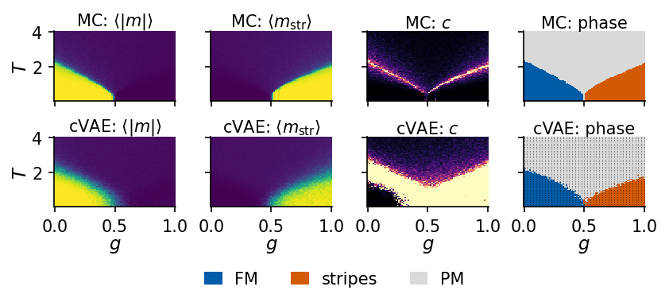
colour scales: <|m|> and <m_str> from 0 (dark) to 1 (yellow); c from 0 to 2.2 (99th percentile of Monte Carlo)
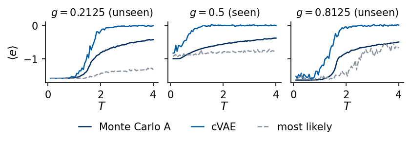
4.1 Interpolation of the phase diagram
The phase classifier trained on real data assigns the synthetic snapshots to the same phase as the Monte Carlo snapshots at 95.4% of the grid points, compared with 99.7% for real against real, and it does so equally at seen and at unseen \((g,T)\), so the generator interpolates the phase diagram. The phase boundary of the synthetic data is smeared, and near \(g=1/2\) and close to the transition lines the two maps differ. The order parameters \(\langle|m|\rangle\) and \(\langle m_{\rm str}\rangle\) are reproduced within a few noise units, and the two stripe orientations are generated with nearly equal frequency (a fraction 0.485 of the stripe snapshots alternate along \(x\), against 0.501 in the Monte Carlo data).
The energy fails as in the Ising case. In the paramagnet the synthetic \(\langle e\rangle\approx0\), the value for independent spins, while the Monte Carlo energy shows the short-range correlations of the paramagnet. The specific heat deviates from the Monte Carlo values by more than a thousand noise units (\(R_c=2279\) at seen and \(1517\) at unseen points). The most likely configurations are ordered almost everywhere, so the classifier sees ferromagnets or stripes deep in the paramagnet and agrees with S_A at only 35% of the grid points.
5. ELBO and the variational free energy
The tests of Sections 3 and 4 sort the physical properties into two groups. The order parameter, its distribution and the phase survive generation, while the energy, its fluctuations and the short-range correlations do not. The variational principle of statistical mechanics explains this division. Let \(q(\mathbf s)\) be any normalised distribution over configurations and \(p(\mathbf s)=e^{-H(\mathbf s)/T}/Z\) the Boltzmann distribution. Inserting \(\ln p=-H/T-\ln Z\) into the Kullback–Leibler divergence gives \[
\begin{aligned}
\mathrm{KL}(q\,\|\,p)&=\sum_{\mathbf s}q(\mathbf s)\ln\frac{q(\mathbf s)}{p(\mathbf s)}=\langle H\rangle_q/T-S[q]+\ln Z\;\ge\;0,\\
S[q]&=-\sum_{\mathbf s}q(\mathbf s)\ln q(\mathbf s).
\end{aligned}
\] With the free energy \(F=-T\ln Z\) this is the Gibbs–Bogoliubov inequality [Isihara 1968], \[
F\;\le\;F_q\equiv\langle H\rangle_q-T\,S[q],\qquad F_q-F=T\,\mathrm{KL}(q\,\|\,p).
\] Every trial distribution has a variational free energy \(F_q\) above the true free energy, and the excess is \(T\) times its Kullback–Leibler distance from the Boltzmann distribution.
The ELBO of Section 2 is the same inequality written in the latent space of a single configuration. For fixed \(\mathbf s\) and \(\mathbf c\) the cVAE defines an energy of the latent vector, \(E_\theta(\mathbf z)=-\ln p_\theta(\mathbf s,\mathbf z\mid\mathbf c)\), at unit temperature, whose partition function is \(\int d\mathbf z\,e^{-E_\theta(\mathbf z)}=p_\theta(\mathbf s\mid\mathbf c)\). The encoder \(q_\phi(\mathbf z\mid\mathbf s,\mathbf c)\) is the trial distribution, and the inequality reads \[
-\ln p_\theta(\mathbf s\mid\mathbf c)\;\le\;\mathbb E_{q_\phi}\big[E_\theta(\mathbf z)\big]-S[q_\phi]=-\mathrm{ELBO},
\] with the gap \(\mathrm{KL}\big(q_\phi(\mathbf z\mid\mathbf s,\mathbf c)\,\|\,p_\theta(\mathbf z\mid\mathbf s,\mathbf c)\big)\). The two inequalities differ in which distribution plays the role of the target. Training lowers \(-\mathrm{ELBO}\) averaged over Monte Carlo configurations and thereby lowers \(-\ln p_\theta(\mathbf s\mid\mathbf c)\) averaged over the data, which equals \(\mathrm{KL}(p\,\|\,p_\theta)\) up to the entropy of the data. In this divergence the data distribution stands first and the model second. The Hamiltonian never enters, and training does not lower the variational free energy \(F_q\) of the model. Generators trained by minimising \(F_q\) itself, with the Hamiltonian in the loss, also exist [Wu, Wang, Zhang 2019]. The cVAE of this lab learns from data only.
Given \(\mathbf z\) the decoder is a product distribution \(q_{\mathbf z}(\mathbf s)=\prod_iq_i(s_i)\) with \(\langle s_i\rangle=m_i=\tanh(\ell_i/2)\) and \(p_i=\mathrm{sigm}(\ell_i)\) the probability of \(s_i=+1\). For such a distribution both terms of \(F_q\) are exact sums over sites and bonds, \[
\langle H\rangle_{q_{\mathbf z}}=-\sum_{\langle ij\rangle}m_im_j,\qquad S[q_{\mathbf z}]=\sum_ih(p_i),\qquad h(p)=-p\ln p-(1-p)\ln(1-p).
\] Mean-field theory uses the same family of product distributions and chooses the \(m_i\) that minimise \(F_q\). The uniform choice \(m_i=m\) gives \(f(m)=-2m^2-T\,h\big(\tfrac{1+m}2\big)\) per spin, whose minimum obeys the Curie–Weiss equation \(m=\tanh(4m/T)\) with a transition at \(T_c^{\rm MF}=4\). In every product distribution \(\langle s_is_j\rangle=m_im_j\) for \(i\ne j\), so neighbouring spins have no connected correlation. The energy then contains only the part of the nearest-neighbour correlation carried by the mean spins, while the order parameter, a sum of the \(m_i\), is represented fully.
For the 2D Ising model the true free energy is known. Onsager’s result for the infinite lattice, \[
-\frac fT=\ln2+\frac1{8\pi^2}\int_0^{2\pi}\!\!\int_0^{2\pi}\ln\Big[\cosh^2\frac2T-\sinh\frac2T\,(\cos\theta_1+\cos\theta_2)\Big]\,d\theta_1\,d\theta_2 ,
\] with \(f\) the free energy per spin, lets us evaluate the gap \(\mathrm{KL}(q_{\mathbf z}\|p)/N=(F_{q_{\mathbf z}}/N-f)/T\) in nats per spin for every latent vector. The cell below does this for 256 vectors \(\mathbf z\sim p_\psi(\mathbf z\mid T)\) of the best Ising model at each temperature and compares the result with the uniform mean-field distribution. We use the infinite-lattice \(f\) for \(L=30\). Its finite-size correction decreases as \(1/L^2\) at \(T_c\) and exponentially away from it, and the cell asserts that every gap is positive, as the inequality requires.
Code
RC11 = {**SLIDE_RC, "xtick.labelsize": 11, "ytick.labelsize": 11, "legend.fontsize": 11} # figures of Sections 5-10: no text below 11 ptdef onsager_f(T, n=512):'''Free energy per spin of the infinite 2D Ising model (J = k_B = 1) from Onsager's double integral, midpoint rule on an n x n grid. The integrand is even in both angles, so the mean over [0, pi]^2 equals the mean over [0, 2 pi]^2.''' th = (np.arange(n) +0.5) * np.pi / n cos_sum = np.cos(th)[:, None] + np.cos(th)[None, :] T = np.atleast_1d(np.asarray(T, np.float64)) mean_log = np.array([np.log(np.cosh(2/ t) **2- np.sinh(2/ t) * cos_sum).mean() for t in T])return-T * (np.log(2.0) +0.5* mean_log)def binary_entropy(p):'''Entropy (nats) of a spin that points up with probability p.''' p = np.clip(p, 1e-12, 1-1e-12)return-(p * np.log(p) + (1- p) * np.log(1- p))def product_free_energy(model, T, n, key):'''For n latent vectors z ~ p(z|T): energy <H>_q / N, entropy S[q] / N and F_q / N of the decoder's product distribution q_z.''' c = jnp.asarray(cond_I(np.full(n, T))) mu_p, lv_p = model.prior(c) z = mu_p + jnp.exp(0.5* lv_p) * jax.random.normal(key, mu_p.shape) l = np.asarray(logits_at(model, z, c), np.float64).reshape(n, L, L) m = np.tanh(l /2) # <s_i> under q_z e_q =-(m * np.roll(m, 1, -1) + m * np.roll(m, 1, -2)).mean((-1, -2)) # independent spins: <s_i s_j> = m_i m_j s_q = binary_entropy(1/ (1+ np.exp(-l))).mean((-1, -2))return e_q, s_q, e_q - T * s_qdef curie_weiss_f(T):'''Best uniform product distribution: minimum over m of f(m) = -2 m^2 - T s(m); returns f_min and the minimising m.''' m_grid = np.linspace(0, 1-1e-9, 20001) f =-2* m_grid[None, :] **2- np.asarray(T)[:, None] * binary_entropy((1+ m_grid[None, :]) /2)return f.min(1), m_grid[f.argmin(1)]# check: at T_c Onsager's free energy is known in closed form, f(T_c) = -T_c (ln 2 / 2 + 2 G / pi), G = Catalan's constantcatalan =0.915965594177219print(f"check: Onsager f(T_c) numerical {onsager_f(TC)[0]:.6f}, closed form {-TC * (0.5* np.log(2) +2* catalan / np.pi):.6f}")f_exact = onsager_f(T_grid) # (37,)f_cw, m_cw = curie_weiss_f(T_grid)FQ = np.stack([np.stack(product_free_energy(models[BEST], T, 256, jax.random.key(300+ i))) for i, T inenumerate(T_grid)]) # (37, 3, 256)kl_dec = (FQ[:, 2] - f_exact[:, None]) / T_grid[:, None] # KL(q_z || p) / N in nats per spin, (37, 256)kl_cw = (f_cw - f_exact) / T_gridassert kl_dec.min() >0and kl_cw.min() >-1e-4# the Gibbs-Bogoliubov inequality F_q >= Fwith mpl.rc_context(RC11): fig, ax = plt.subplots(1, 3, figsize=(5.5, 1.9), layout="constrained") ax[0].plot(T_grid, P_A["e"], color=navy, label="Monte Carlo ($e$), Onsager ($f$)") ax[0].plot(T_grid, FQ[:, 0].mean(1), color=blue, label=r"decoder $q_{z}$") ax[0].plot(T_grid, -2* m_cw **2, "--", color=orange, label="mean field") ax[0].set_ylabel(r"$\langle e\rangle$ and $\langle H\rangle_q/N$") ax[1].plot(T_grid, f_exact, color=navy) ax[1].plot(T_grid, FQ[:, 2].mean(1), color=blue) ax[1].fill_between(T_grid, np.percentile(FQ[:, 2], 10, 1), np.percentile(FQ[:, 2], 90, 1), color=blue, alpha=0.2, lw=0) ax[1].plot(T_grid, f_cw, "--", color=orange) ax[1].set_ylabel(r"$f$ and $F_q/N$") ax[2].plot(T_grid, kl_dec.mean(1), color=blue) ax[2].fill_between(T_grid, np.percentile(kl_dec, 10, 1), np.percentile(kl_dec, 90, 1), color=blue, alpha=0.2, lw=0) ax[2].plot(T_grid, kl_cw, "--", color=orange) ax[2].set_ylabel(r"$\mathrm{KL}(q\,\|\,p)/N$")for a in ax: a.axvline(TC, color="k", ls=":", lw=0.8); a.set_xlabel("$T$", labelpad=1) fig.legend(*ax[0].get_legend_handles_labels(), loc="outside lower center", ncol=3, handlelength=1.4) save(fig, "gen_l6_free_energy.png"); plt.show()print(f"{'T':>5s}{'<e> MC':>7s}{'<H>_q/N':>8s}{'S[q]/N':>7s}{'f exact':>8s}{'f_q':>8s}{'KL/N decoder':>12s}{'KL/N mean field':>15s}")sel_fe = [int(np.argmin(np.abs(T_grid - t))) for t in (1.5, 1.8, 2.1, TC, 2.5, 3.0, 3.5)]for i in sel_fe:print(f"{T_grid[i]:5.2f}{P_A['e'][i]:7.3f}{FQ[i, 0].mean():8.3f}{FQ[i, 1].mean():7.3f}{f_exact[i]:8.4f}{FQ[i, 2].mean():8.4f} "f"{kl_dec[i].mean():12.4f}{kl_cw[i]:15.4f}")print(f"largest mean KL/N of the decoder: {kl_dec.mean(1).max():.3f} nats per spin at T = {T_grid[np.argmax(kl_dec.mean(1))]}; "f"mean field below the decoder at {int((kl_cw < kl_dec.mean(1)).sum())} of {n_T} temperatures")NUMBERS["fe_table"] = {f"{T_grid[i]:.2f}": [round(float(P_A['e'][i]), 3), round(float(FQ[i, 0].mean()), 3), round(float(kl_dec[i].mean()), 4),round(float(kl_cw[i]), 4)] for i in sel_fe}NUMBERS["fe_klmax"] = [round(float(kl_dec.mean(1).max()), 3), float(T_grid[np.argmax(kl_dec.mean(1))])]NUMBERS["fe_cw_below"] =int((kl_cw < kl_dec.mean(1)).sum())
check: Onsager f(T_c) numerical -2.109652, closed form -2.109651
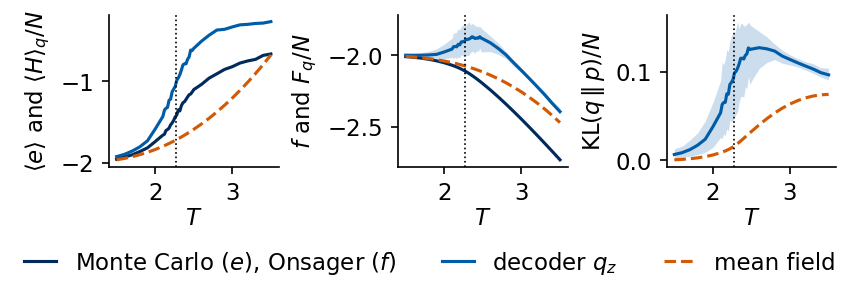
T <e> MC <H>_q/N S[q]/N f exact f_q KL/N decoder KL/N mean field
1.50 -1.953 -1.921 0.052 -2.0084 -1.9984 0.0067 0.0007
1.80 -1.859 -1.801 0.108 -2.0273 -1.9966 0.0171 0.0028
2.10 -1.657 -1.428 0.251 -2.0688 -1.9557 0.0539 0.0087
2.26 -1.433 -1.059 0.372 -2.1069 -1.9008 0.0912 0.0151
2.50 -1.100 -0.595 0.516 -2.1984 -1.8840 0.1258 0.0327
3.00 -0.819 -0.332 0.591 -2.4476 -2.1055 0.1140 0.0638
3.50 -0.663 -0.267 0.608 -2.7328 -2.3945 0.0967 0.0746
largest mean KL/N of the decoder: 0.127 nats per spin at T = 2.6; mean field below the decoder at 37 of 37 temperatures
The left panel shows the Monte Carlo energy \(\langle e\rangle\), the energy \(\langle H\rangle_{q_{\mathbf z}}/N\) of the decoder’s product distributions averaged over \(\mathbf z\), and the mean-field energy \(-2m^2\). The middle panel shows Onsager’s \(f\), the variational free energy per spin \(F_{q_{\mathbf z}}/N\) of the decoder (line for the mean over \(\mathbf z\), band from the 10th to the 90th percentile), and the mean-field minimum. The right panel shows the gap \(\mathrm{KL}(q\|p)/N\) for both.
Every product distribution of the decoder lies above the true free energy. The gap is \(0.0067\) nats per spin at \(T=1.5\), where nearly every spin is fixed and a product distribution describes the configuration well, grows through the transition to \(0.0912\) at \(T=2.26\) and reaches its maximum of \(0.127\) nats per spin at \(T=2.6\), above \(T_c\). At \(T_c\) the decoder energy is \(-1.059\) per spin against the Monte Carlo value \(-1.433\). The uniform mean-field distribution has a smaller gap at all 37 temperatures, even though its magnetisation is far too large above \(T_c\). Minimising \(F_q\) favours low energy, and the mean-field solution buys it with order. Training on data favours distributions that cover the snapshots, and the decoder’s product distributions keep the order parameter of the data and pay with the bonds. Both are product distributions, and neither contains the connected correlations between neighbours that the Hamiltonian sets.
6. Spin-flip symmetry and correlation length
The Hamiltonian is invariant under the global flip \(\mathbf s\to-\mathbf s\), so the Boltzmann distribution satisfies \(P(m)=P(-m)\) at every temperature, and on a finite lattice without a field both ordered states occur equally often. The two variants with the imposed symmetry flip every generated snapshot with probability 1/2, and for them this test checks the implementation. The plain cVAE has to learn the symmetry from the data. At every temperature we count the fraction \(n_{m>0}/n\) of the \(n=64\) snapshots with \(m>0\) (a snapshot with \(m=0\) counts one half) and express its deviation from 1/2 in binomial standard errors, \[
z=\frac{n_{m>0}/n-\tfrac12}{\sqrt{1/(4n)}} .
\] Under exact symmetry \(z\) is approximately a standard normal variable, so the sum of \(z^2\) over the temperatures below \(T_c\) follows a \(\chi^2\) distribution with one degree of freedom per temperature, and the cell reports the corresponding p-value. We also report \(W_1\) between \(P(m)\) and \(P(-m)\), which for 64 snapshots is nonzero even for a symmetric distribution, so the Monte Carlo value is the reference.
The correlation function \(G(r)\) is invariant under the flip and carries the second property of this section. Section 3.8 compared only its long-distance value \(G(L/2)\). Above \(T_c\) the correlations decay exponentially, \(G(r)\simeq A\,e^{-r/\xi}\), with the correlation length \(\xi\) and an amplitude \(A\). We fit \(\ln G(r)\) on \(r=1,\dots,4\) at every temperature \(T\ge2.4\), where \(\xi\) is much smaller than \(L\).
Code
def sign_fraction(m):'''Fraction of snapshots with m > 0 at every temperature (m = 0 counts one half); m: (n_T, n).'''return (m >0).mean(-1) +0.5* (m ==0).mean(-1)def fit_xi(G, r=np.arange(1, 5)):'''Fit ln G(r) = ln A - r / xi on r = 1..4 at every temperature; G: (n_T, L/2+1). Returns xi and A, each (n_T,).''' slope, intercept = np.polyfit(r, np.log(np.clip(G[:, r], 1e-6, None)).T, 1)return-1.0/ slope, np.exp(intercept)SYM_NAMES = ["Monte Carlo A", "Monte Carlo B"] +list(VARIANTS)hot_side = T_grid >=2.4# disordered side, xi well below LSYM = {}for name in SYM_NAMES: m = PHYS[name]["m_samples"] # (37, 64) z = (sign_fraction(m) -0.5) / np.sqrt(0.25/ m.shape[1]) # deviation from 1/2 in binomial standard errors xi, A = fit_xi(PHYS[name]["G"]) SYM[name] =dict(frac=sign_fraction(m), z=z, w=wasserstein1(m, -m), xi=xi, A=A)from scipy.stats import chi2 as chi2_distn_below =int(below.sum())print(f"{n_below} temperatures below T_c; under exact symmetry sum z^2 follows a chi^2 distribution with {n_below} degrees of freedom")print(f"{'':16s} T < T_c: fraction m > 0 mean z^2 p-value max |z| mean_T W1(P(m), P(-m)) | T >= 2.4: mean xi mean A")for name in SYM_NAMES: d = SYM[name] p_val =float(chi2_dist.sf((d['z'][below] **2).sum(), n_below))print(f"{name:16s}{d['frac'][below].mean():.3f}{(d['z'][below] **2).mean():5.2f}{p_val:5.2f}{np.abs(d['z'][below]).max():4.1f}"f" {d['w'][below].mean():.3f} | {d['xi'][hot_side].mean():6.2f}{d['A'][hot_side].mean():.2f}") NUMBERS[f"sym_{name}"] =dict(frac=round(float(d['frac'][below].mean()), 3), z2=round(float((d['z'][below] **2).mean()), 2), zmax=round(float(np.abs(d['z'][below]).max()), 1), p=round(p_val, 2), w=round(float(d['w'][below].mean()), 3), xi=round(float(d['xi'][hot_side].mean()), 2), A=round(float(d['A'][hot_side].mean()), 2))sel_xi = [int(np.argmin(np.abs(T_grid - t))) for t in (2.4, 2.6, 3.0, 3.5)]print("\nxi at T = "+", ".join(f"{T_grid[i]:.2f}"for i in sel_xi))for name in SYM_NAMES:print(f"{name:16s}"+"".join(f"{SYM[name]['xi'][i]:8.2f}"for i in sel_xi)) NUMBERS[f"xi_{name}"] = [round(float(SYM[name]['xi'][i]), 2) for i in sel_xi]with mpl.rc_context(RC11): fig, ax = plt.subplots(1, 3, figsize=(5.5, 1.95), layout="constrained") band =2* np.sqrt(0.25/64) ax[0].fill_between(T_grid, 0.5- band, 0.5+ band, color=grey, alpha=0.25, lw=0)for name, col in [("Monte Carlo A", navy)] + [(n, VARIANTS[n][2]) for n in VARIANTS]: ax[0].plot(T_grid, SYM[name]["frac"], ".-", color=col, ms=3, lw=0.6, label=SHORT[name]) ax[0].set_ylim(0.2, 0.8); ax[0].set_xlabel("$T$", labelpad=1); ax[0].set_ylabel(r"$n_{m>0}/n$") i3 =int(np.argmin(np.abs(T_grid -3.0))) r = np.arange(L //2+1)for name, col in [("Monte Carlo A", navy)] + [(n, VARIANTS[n][2]) for n in VARIANTS]: ax[1].semilogy(r[1:9], PHYS[name]["G"][i3, 1:9], "o", color=col, ms=3) ax[1].semilogy(r[1:9], SYM[name]["A"][i3] * np.exp(-r[1:9] / SYM[name]["xi"][i3]), "-", color=col, lw=1) ax[1].set_xlabel("$r$", labelpad=1); ax[1].set_ylabel(f"$G(r)$ at $T={T_grid[i3]:.1f}$"); ax[1].set_ylim(5e-3, 1); ax[1].set_xticks([1, 3, 5, 7])for name, col in [("Monte Carlo A", navy)] + [(n, VARIANTS[n][2]) for n in VARIANTS]: ax[2].plot(T_grid[hot_side], SYM[name]["xi"][hot_side], ".-", color=col, ms=3, lw=1) ax[2].fill_between(T_grid[hot_side], np.minimum(SYM["Monte Carlo A"]["xi"], SYM["Monte Carlo B"]["xi"])[hot_side], np.maximum(SYM["Monte Carlo A"]["xi"], SYM["Monte Carlo B"]["xi"])[hot_side], color=navy, alpha=0.25, lw=0) ax[2].set_yscale("log"); ax[2].set_xlabel("$T$", labelpad=1); ax[2].set_ylabel(r"$\xi$") fig.legend(*ax[0].get_legend_handles_labels(), loc="outside lower center", ncol=4, handlelength=1.2) save(fig, "gen_l6_symmetry_xi.png"); plt.show()
15 temperatures below T_c; under exact symmetry sum z^2 follows a chi^2 distribution with 15 degrees of freedom
T < T_c: fraction m > 0 mean z^2 p-value max |z| mean_T W1(P(m), P(-m)) | T >= 2.4: mean xi mean A
Monte Carlo A 0.515 0.73 0.75 2.0 0.134 | 2.25 0.77
Monte Carlo B 0.500 0.63 0.85 2.0 0.142 | 2.26 0.78
cVAE 0.501 1.56 0.07 2.5 0.145 | 20.00 0.26
cVAE+Z2 0.506 0.41 0.98 1.2 0.116 | 20.51 0.28
cVAE+Z2+p(z|T) 0.477 0.96 0.50 2.0 0.163 | 10.85 0.25
xi at T = 2.40, 2.60, 3.00, 3.50
Monte Carlo A 4.01 2.48 1.45 1.05
Monte Carlo B 3.99 2.46 1.46 1.03
cVAE 30.07 20.27 20.95 10.66
cVAE+Z2 27.39 19.70 20.98 10.36
cVAE+Z2+p(z|T) 19.17 9.62 6.54 6.69
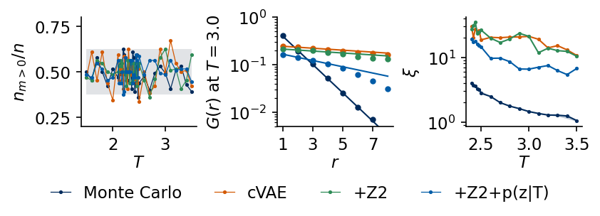
The left panel shows \(n_{m>0}/n\) against \(T\), with the grey band marking \(\tfrac12\pm2\) binomial standard errors. The middle panel shows \(G(r)\) at \(T=3.0\) on a logarithmic axis (points) with the fitted exponentials (lines), and the right panel the fitted \(\xi\) for \(T\ge2.4\), with the band between S_A and S_B.
The spin-flip symmetry is preserved by all three generators. Below \(T_c\) the fractions of positive magnetisation are 0.501 (cVAE), 0.506 (cVAE+Z2) and 0.477 (cVAE+Z2+p(z|T)), against 0.515 and 0.500 for the two Monte Carlo sets, and none of the \(\chi^2\) tests rejects symmetry at the 5% level. The plain cVAE has the smallest p-value (0.07), so its symmetry is learned less tightly than the imposed one, and its distance between \(P(m)\) and \(P(-m)\) is close to the Monte Carlo value.
The correlation length is lost. Above \(T_c\) the Monte Carlo data give \(\xi=4.01\), \(2.48\), \(1.45\) and \(1.05\) at \(T=2.4\), \(2.6\), \(3.0\) and \(3.5\), while the best generator gives \(19.2\), \(9.6\), \(6.5\) and \(6.7\), and the two other variants give \(\xi\) between 10.4 and 30.1 at these four temperatures. The amplitude of the synthetic correlations is about \(0.25\) against \(0.77\) for Monte Carlo. The synthetic correlations are too weak at short distances and too long-ranged. This is the product structure of Section 5 seen in space. For \(r\ge1\) the synthetic \(G(r)\) is the average over \(\mathbf z\) of \(m_{\mathbf x}m_{\mathbf x+r}\), a smooth map of mean spins that varies on the scale of the domains in the decoder output, and the independent coin flips of the Bernoulli sampling remove the strong correlations between neighbours.
7. Monte Carlo started from generated configurations
A generated configuration carries the right order parameter and the wrong bonds. Local Monte Carlo updates repair bonds within a few sweeps, while the slow modes of a Metropolis chain are the large-scale ones, the growth of domains and the relaxation of \(|m|\), which near \(T_c\) become slower with increasing lattice size (critical slowing down, Lab 018). The generator can then serve as a starting point for Monte Carlo. We test this with the Metropolis algorithm [Metropolis et al. 1953] in the checkerboard form of Lab 018. A flip of spin \(i\) changes the energy by \(\Delta H=2s_ih_i\), with \(h_i\) the sum of its four neighbours, and is accepted with probability \(\min(1,e^{-\Delta H/T})\). The code writes the inverse temperature as beta. The four sublattices of sites with fixed parities of \(x\) and \(y\) contain no nearest neighbours, so all spins of one sublattice are updated at once. One sweep updates every spin once.
At \(T=1.8\), \(T=2.26\) and \(T=3.0\) we run 64 chains from each of three starts. Generated starts are 64 Bernoulli samples of the best model at that temperature, hot starts are independent random spins (infinite temperature), and cold starts have all spins up (zero temperature). After \(0,1,2,4,\dots,2048\) sweeps we measure the chain averages of \(e\), \(|m|\) and \(G(r)\) and compare them with the mean over the 128 held-out Monte Carlo snapshots. An observable counts as repaired when its chain average agrees with the Monte Carlo mean within \(3\sigma\sqrt{1/64+1/128}\), where \(\sigma\) is its standard deviation over the Monte Carlo snapshots, at the first checkpoint and at every later one, and for \(G(r)\) this must hold for all \(r=1,\dots,15\) at once. The resolution is a factor of 2 in the number of sweeps.
The repaired configurations are Metropolis samples of \(e^{-H/T}/Z\). Their correctness comes from the Markov chain, and the generator contributes only the starting point and with it the number of sweeps needed.
Code
from functools import partialfrom jax import laxdef nn_field(s):'''Sum of the four nearest neighbours, periodic; s: (..., L, L).'''return jnp.roll(s, 1, -2) + jnp.roll(s, -1, -2) + jnp.roll(s, 1, -1) + jnp.roll(s, -1, -1)def metropolis_sweep(s, key, beta):'''One checkerboard Metropolis sweep of a single L x L lattice (four sub-lattices updated in turn).'''for a, b in ((0, 0), (0, 1), (1, 0), (1, 1)): key, sub = jax.random.split(key) si = s[a::2, b::2] dE =2.0* si * nn_field(s)[a::2, b::2] accept = jax.random.uniform(sub, si.shape) < jnp.exp(-beta * dE) s = s.at[a::2, b::2].set(jnp.where(accept, -si, si))return s, keydef chain_observables(s):'''e, |m| and G(r), r = 0..L/2, of one lattice.''' e =-jnp.mean(s * jnp.roll(s, 1, -1) + s * jnp.roll(s, 1, -2)) G = jnp.stack([0.5* (jnp.mean(s * jnp.roll(s, r, -1)) + jnp.mean(s * jnp.roll(s, r, -2))) for r inrange(s.shape[-1] //2+1)])return e, jnp.abs(jnp.mean(s)), G@partial(jax.jit, static_argnames=("checkpoints",))def relax(s0, keys, betas, checkpoints):'''Metropolis chains from s0 (chains, L, L) at inverse temperatures betas (chains,); observables after each number of sweeps in checkpoints.'''def one_chain(s, key, beta): out, done = [chain_observables(s)], 0for t in checkpoints[1:]: (s, key), _ = lax.scan(lambda c, _: (metropolis_sweep(c[0], c[1], beta), None), (s, key), None, length=t - done) out.append(chain_observables(s)); done = treturn [jnp.stack([o[k] for o in out]) for k inrange(3)]return jax.vmap(one_chain)(s0, keys, betas)# check: one sweep at beta = 0 (every flip accepted) maps a configuration onto -s; at beta -> infinity the ground state is stables_test = jnp.asarray(np.where(np.random.default_rng(0).random((L, L)) <0.5, 1.0, -1.0))assert jnp.all(metropolis_sweep(s_test, jax.random.key(0), 0.0)[0] ==-s_test)assert jnp.all(metropolis_sweep(jnp.ones((L, L)), jax.random.key(0), 50.0)[0] ==1)print("checks passed: beta = 0 flips every spin, the ground state is stable at low temperature")
checks passed: beta = 0 flips every spin, the ground state is stable at low temperature
Code
CHECK = (0, 1, 2, 4, 8, 16, 32, 64, 128, 256, 512, 1024, 2048)REPAIR_T = [int(np.argmin(np.abs(T_grid - t))) for t in (1.8, TC, 3.0)]STARTS = ["generated", "hot", "cold"]s0, betas = [], []for i in REPAIR_T: gen, _ = generate(models[BEST], cond_I(T_grid[[i]]), 64, jax.random.key(500+ i), L, symmetric=True) hot = np.where(np.random.default_rng(i).random((64, L, L)) <0.5, 1, -1)for s_init in (gen[0], hot, np.ones((64, L, L))): s0.append(s_init); betas.append(np.full(64, 1.0/ T_grid[i]))t0 = time.time()e_t, m_t, G_t = relax(jnp.asarray(np.concatenate(s0), jnp.float32), jax.random.split(jax.random.key(600), 64*len(s0)), jnp.asarray(np.concatenate(betas), jnp.float32), CHECK)shape = (len(REPAIR_T), len(STARTS), 64, len(CHECK))e_t, m_t = np.asarray(e_t).reshape(shape), np.asarray(m_t).reshape(shape) # (3 T, 3 starts, 64 chains, n_checkpoints)G_t = np.asarray(G_t).reshape(shape + (L //2+1,))print(f"{len(s0) *64} Metropolis chains, {CHECK[-1]} sweeps each: {time.time() - t0:.0f} s")def sweeps_needed(traj, ref, tol):"""First checkpoint from which |traj - ref| <= tol holds at every later checkpoint, at least the last two (traj: (n_checkpoints, ...)); None if the chains are not within the tolerance at the end.""" ok = np.all(np.abs(traj - ref) <= tol, axis=tuple(range(1, traj.ndim)))for k inrange(len(ok) -1):if ok[k:].all():return CHECK[k]returnNoneREPAIR = {}for a, i inenumerate(REPAIR_T): real = np.concatenate([S_A[i], S_B[i]]).astype(np.float32) # (128, L, L): reference, all held-out Monte Carlo snapshots e_r =-(real * np.roll(real, 1, -1) + real * np.roll(real, 1, -2)).mean((-1, -2)) m_r = np.abs(real.mean((-1, -2))) G_r = np.stack([0.5* ((real * np.roll(real, r, -1)).mean((-1, -2)) + (real * np.roll(real, r, -2)).mean((-1, -2)))for r inrange(1, L //2+1)], -1) # (128, L/2) se = np.sqrt(1/64+1/128) # 64 chains against 128 reference snapshots ref = {"e": (e_r.mean(), 3* se * e_r.std()), "m": (m_r.mean(), 3* se * m_r.std()), "G": (G_r.mean(0), 3* se * G_r.std(0))}for b, st inenumerate(STARTS): n_e = sweeps_needed(e_t[a, b].mean(0), *ref["e"]) n_m = sweeps_needed(m_t[a, b].mean(0), *ref["m"]) n_G = sweeps_needed(G_t[a, b].mean(0)[:, 1:], *ref["G"]) REPAIR[(float(T_grid[i]), st)] = (n_e, n_m, n_G)print(f"T = {T_grid[i]:.2f}, {st:9s} start: sweeps until <e>, <|m|>, G(r) agree with Monte Carlo: {n_e}, {n_m}, {n_G}"f" (0 sweeps: <e> = {e_t[a, b, :, 0].mean():+.3f}; Monte Carlo {ref['e'][0]:+.3f} +- {ref['e'][1]:.3f})") NUMBERS[f"repair_{T_grid[i]:.2f}"] = {st: REPAIR[(float(T_grid[i]), st)] for st in STARTS}x_sw = np.array(CHECK, float); x_sw[0] =0.5# sweep 0 drawn at 0.5 on the logarithmic axiscols_start = {"generated": blue, "hot": orange, "cold": grey}with mpl.rc_context(RC11): fig, ax = plt.subplots(2, 3, figsize=(5.5, 2.6), layout="constrained", sharex=True)for a, i inenumerate(REPAIR_T): real = np.concatenate([S_A[i], S_B[i]]).astype(np.float32) e_r =-(real * np.roll(real, 1, -1) + real * np.roll(real, 1, -2)).mean((-1, -2)); m_r = np.abs(real.mean((-1, -2)))for row, (traj, ref) inenumerate([(e_t, e_r), (m_t, m_r)]): tol =3* np.sqrt(1/64+1/128) * ref.std() ax[row, a].axhspan(ref.mean() - tol, ref.mean() + tol, color=navy, alpha=0.2, lw=0)for b, st inenumerate(STARTS): ax[row, a].plot(x_sw, traj[a, b].mean(0), ".-", color=cols_start[st], ms=3, lw=1, label=st) ax[row, a].set_xscale("log") ax[0, a].set_title(f"$T={T_grid[i]:.2f}$") ax[1, a].set_xlabel("sweeps", labelpad=1); ax[1, a].set_xticks([1, 10, 100, 1000]) ax[0, 0].set_ylabel(r"$\langle e\rangle$"); ax[1, 0].set_ylabel(r"$\langle|m|\rangle$") fig.legend(*ax[0, 0].get_legend_handles_labels(), loc="outside lower center", ncol=3, handlelength=1.2, title=None) save(fig, "gen_l6_mc_repair.png"); plt.show()
576 Metropolis chains, 2048 sweeps each: 21 s
T = 1.80, generated start: sweeps until <e>, <|m|>, G(r) agree with Monte Carlo: 2, 2, 2 (0 sweeps: <e> = -1.791; Monte Carlo -1.859 +- 0.016)
T = 1.80, hot start: sweeps until <e>, <|m|>, G(r) agree with Monte Carlo: 256, 512, 512 (0 sweeps: <e> = -0.007; Monte Carlo -1.859 +- 0.016)
T = 1.80, cold start: sweeps until <e>, <|m|>, G(r) agree with Monte Carlo: 2, 4, 4 (0 sweeps: <e> = -2.000; Monte Carlo -1.859 +- 0.016)
T = 2.26, generated start: sweeps until <e>, <|m|>, G(r) agree with Monte Carlo: 2, 0, 2 (0 sweeps: <e> = -1.082; Monte Carlo -1.436 +- 0.049)
T = 2.26, hot start: sweeps until <e>, <|m|>, G(r) agree with Monte Carlo: 64, 128, 128 (0 sweeps: <e> = -0.003; Monte Carlo -1.436 +- 0.049)
T = 2.26, cold start: sweeps until <e>, <|m|>, G(r) agree with Monte Carlo: 16, 16, 16 (0 sweeps: <e> = -2.000; Monte Carlo -1.436 +- 0.049)
T = 3.00, generated start: sweeps until <e>, <|m|>, G(r) agree with Monte Carlo: 2, 0, 64 (0 sweeps: <e> = -0.347; Monte Carlo -0.819 +- 0.027)
T = 3.00, hot start: sweeps until <e>, <|m|>, G(r) agree with Monte Carlo: 4, 1, 64 (0 sweeps: <e> = -0.001; Monte Carlo -0.819 +- 0.027)
T = 3.00, cold start: sweeps until <e>, <|m|>, G(r) agree with Monte Carlo: 8, 8, 8 (0 sweeps: <e> = -2.000; Monte Carlo -0.819 +- 0.027)
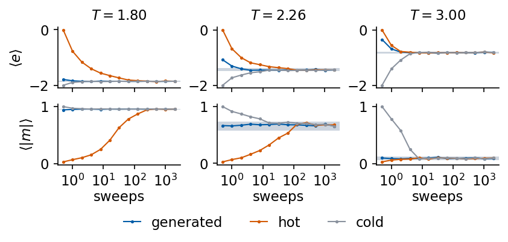
The figure shows the chain averages of \(\langle e\rangle\) (top) and \(\langle|m|\rangle\) (bottom) against the number of sweeps for the three starts (sweep 0 drawn at 0.5), with the band marking the Monte Carlo mean and its tolerance.
Generated starts reach the Monte Carlo energy within 2 sweeps at all three temperatures, and their \(\langle|m|\rangle\) is correct from the start at \(T=2.26\) and \(T=3.0\) and after 2 sweeps at \(T=1.8\). Below \(T_c\) this matches a cold start (2 to 4 sweeps), while a hot start needs 256 sweeps for the energy and 512 for \(|m|\) and \(G(r)\), because random spins first form domains that must coarsen. Near \(T_c\) the generated start needs 2 sweeps for all three observables, the cold start 16 and the hot start 128. Above \(T_c\) hot and generated starts behave alike, and the \(G(r)\) criterion is met after 64 sweeps for both, later than for the cold start (8 sweeps). With 15 distances tested at 12 checkpoints, isolated \(3\sigma\) excursions of single distances are expected, so differences of this size above \(T_c\) are within the resolution of the test.
The generator removes the slow part of the relaxation, the formation and coarsening of domains, which is the part it reproduces, and leaves to Monte Carlo the bonds, which Metropolis repairs in a few sweeps. On this \(30\times30\) lattice the gain over the best simple start is a factor of 8 near \(T_c\) and none away from it. Larger lattices relax more slowly near \(T_c\), which leads us to expect a larger gain there, but the notebook tests only \(L=30\).
8. Finite-size behaviour
On a finite lattice the transition is rounded. The susceptibility has a maximum at a temperature \(T_c(L)\) that approaches \(T_c\) as \(L\) grows, and its height grows as \(L^{\gamma/\nu}\), with the exact 2D Ising exponents \(\gamma=7/4\) and \(\nu=1\). The Binder cumulant \(U_4\) depends at \(T_c\) only on the shape of \(P(m)\), which there is the same for all large \(L\), so the curves \(U_4(T)\) of different sizes cross close to \(T_c\) [Binder 1981]. A generator reproduces these trends only if it captures how the fluctuations of \(m\) depend on \(L\).
We train the best design, cVAE+Z2+p(z|T), at \(L=20\) and \(L=50\) on the Swendsen–Wang data of Lab 018 at the same 37 temperatures, with the same split into 128 training and 128 held-out snapshots per temperature, and reuse the \(L=30\) model. For each size we generate 128 snapshots per temperature and compare \(\chi\) and \(U_4\) with the 128 held-out Monte Carlo snapshots. The position of the susceptibility maximum comes from a parabola through the largest value and its two neighbours. The crossing of two \(U_4\) curves comes from cubic fits of \(U_4(T)\) on \(2.1\le T\le2.5\) and is the sign change of their difference closest to \(T_c\). Uncertainties are standard deviations over 200 bootstrap resamples of the snapshots.
Code
FSS = {} # L -> dict(real = (37, 128, L, L) held-out Monte Carlo, syn = (37, 128, L, L) synthetic)t0 = time.time()for Lf in (20, 30, 50):if Lf == L: # reuse the L = 30 split and the trained cVAE+Z2+p(z|T) real, model_f = np.concatenate([S_A, S_B], axis=1), models[BEST]else: df = np.load(f"{DATA}/ising_L{Lf}.npz") Sf = unpack_spins(df["configs"], Lf)[np.argsort(df["T"])] # (37, 256, Lf, Lf), same temperature gridassert np.allclose(np.sort(df["T"]), T_grid) pf = np.random.default_rng(0).permutation(Sf.shape[1]) train_f, real = Sf[:, pf[:128]], Sf[:, pf[128:]] model_f = CVAE(Lf * Lf, 1, conditional_prior=True, rngs=nnx.Rngs(0)) train_model(model_f, cvae_loss, (canonical(train_f).reshape(-1, Lf * Lf), cond_I(np.repeat(T_grid, 128))), epochs=40, batch=128, lr=1e-3, seed=0) syn, _ = generate(model_f, cond_I(T_grid), 128, jax.random.key(700+ Lf), Lf, symmetric=True) FSS[Lf] =dict(real=real, syn=syn)print(f"L = {Lf}: generator ready, {time.time() - t0:.0f} s")
L = 20: generator ready, 8 s
L = 30: generator ready, 9 s
L = 50: generator ready, 27 s
Code
def chi_U4(S, rng=None):'''chi(T) and U4(T) from snapshots S (37, n, L, L); with rng, from one bootstrap resample of the snapshots.''' m = S.astype(np.float32).mean((-1, -2)) # (37, n)if rng isnotNone: m = np.take_along_axis(m, rng.integers(0, m.shape[1], m.shape), 1) n_sites = S.shape[-1] **2 chi = n_sites * ((m **2).mean(1) - np.abs(m).mean(1) **2) / T_grid U4 =1- (m **4).mean(1) / (3* (m **2).mean(1) **2)return chi, U4WIN = (T_grid >=2.1) & (T_grid <=2.5) # 21 temperatures around T_cT_fine = np.linspace(2.1, 2.5, 401)def crossing(U_a, U_b):'''Temperature where U4 of two sizes cross: cubic fits of U4(T) on 2.1 <= T <= 2.5, sign change of their difference closest to T_c; nan if the fitted curves do not cross in the window.''' d = np.polyval(np.polyfit(T_grid[WIN], U_a[WIN], 3), T_fine) - np.polyval(np.polyfit(T_grid[WIN], U_b[WIN], 3), T_fine) idx = np.where(np.sign(d[:-1]) != np.sign(d[1:]))[0]iflen(idx) ==0:return np.nanreturn T_fine[idx[np.argmin(np.abs(T_fine[idx] - TC))]]def peak(chi):'''Position and height of the susceptibility maximum (parabola through the largest value and its two neighbours).''' k =int(np.clip(np.argmax(chi), 1, len(chi) -2)) a2, a1, a0 = np.polyfit(T_grid[k -1:k +2], chi[k -1:k +2], 2)return-a1 / (2* a2), chi[k]rng_b = np.random.default_rng(1)FSS_RES = {}for kind in ("real", "syn"): obs = {Lf: chi_U4(FSS[Lf][kind]) for Lf in FSS} boot = {Lf: [chi_U4(FSS[Lf][kind], rng_b) for _ inrange(200)] for Lf in FSS} res = {}for Lf in FSS: pk = np.array([peak(c)[0] for c, _ in boot[Lf]]) res[f"Tpeak_{Lf}"] = (peak(obs[Lf][0])[0], pk.std()); res[f"chimax_{Lf}"] = (peak(obs[Lf][0])[1], np.std([c.max() for c, _ in boot[Lf]]))for La, Lb in ((20, 30), (30, 50), (20, 50)): cr = np.array([crossing(boot[La][j][1], boot[Lb][j][1]) for j inrange(200)]) res[f"cross_{La}_{Lb}"] = (crossing(obs[La][1], obs[Lb][1]), np.nanstd(cr), np.isnan(cr).mean()) FSS_RES[kind] = (obs, res)print("value +- bootstrap standard deviation (200 resamples); for the crossings also the fraction of resamples without a crossing")for key in FSS_RES["real"][1]:print(f"{key:14s} Monte Carlo "+" ".join(f"{v:.3f}"for v in FSS_RES['real'][1][key]) +" | synthetic "+" ".join(f"{v:.3f}"for v in FSS_RES['syn'][1][key])) NUMBERS[f"fss_{key}"] = [[round(float(v), 3) for v in FSS_RES[k][1][key]] for k in ("real", "syn")]L_fss = np.array(sorted(FSS))for kind, lab in [("real", "Monte Carlo"), ("syn", "synthetic")]: chimax = np.array([FSS_RES[kind][1][f"chimax_{Lf}"][0] for Lf in L_fss]) slope = np.polyfit(np.log(L_fss), np.log(chimax), 1)[0]print(f"{lab:12s}: slope of ln chi_max against ln L = {slope:.2f} (exact exponent gamma / nu = 7/4)") NUMBERS[f"fss_slope_{kind}"] =round(float(slope), 2)cols_L = {20: "#9CC3E6", 30: blue, 50: navy}with mpl.rc_context(RC11): fig, ax = plt.subplots(2, 2, figsize=(5.5, 2.9), layout="constrained", sharex=True)for col, kind, title in [(0, "real", "Monte Carlo"), (1, "syn", "cVAE+Z2+p(z|T)")]: obs = FSS_RES[kind][0]for Lf in FSS: ax[0, col].plot(T_grid, obs[Lf][0], ".-", color=cols_L[Lf], ms=3, lw=1, label=f"$L={Lf}$") ax[1, col].plot(T_grid, obs[Lf][1], ".", color=cols_L[Lf], ms=3) ax[1, col].plot(T_fine, np.polyval(np.polyfit(T_grid[WIN], obs[Lf][1][WIN], 3), T_fine), color=cols_L[Lf], lw=1) ax[0, col].set_title(title); ax[0, col].set_yscale("log"); ax[0, col].set_ylim(1e-2, 100) ax[1, col].set_ylim(-2.0, 0.8); ax[1, col].axhline(0, color=grey, lw=0.6); ax[1, col].set_xlabel("$T$", labelpad=1)for a in ax[:, col]: a.axvline(TC, color="k", ls=":", lw=0.8) ax[0, 0].set_ylabel(r"$\chi$"); ax[1, 0].set_ylabel(r"$U_4$") fig.legend(*ax[0, 0].get_legend_handles_labels(), loc="outside lower center", ncol=3, handlelength=1.2) save(fig, "gen_l6_finite_size.png"); plt.show()
value +- bootstrap standard deviation (200 resamples); for the crossings also the fraction of resamples without a crossing
Tpeak_20 Monte Carlo 2.374 0.034 | synthetic 2.481 0.077
chimax_20 Monte Carlo 10.214 0.663 | synthetic 8.469 0.581
Tpeak_30 Monte Carlo 2.298 0.030 | synthetic 2.381 0.072
chimax_30 Monte Carlo 21.097 1.580 | synthetic 15.696 1.228
Tpeak_50 Monte Carlo 2.301 0.020 | synthetic 2.321 0.041
chimax_50 Monte Carlo 43.640 3.214 | synthetic 48.782 3.108
cross_20_30 Monte Carlo 2.231 0.020 0.000 | synthetic 2.347 0.061 0.000
cross_30_50 Monte Carlo 2.252 0.007 0.000 | synthetic nan 0.004 0.645
cross_20_50 Monte Carlo 2.245 0.005 0.000 | synthetic 2.109 0.005 0.205
Monte Carlo : slope of ln chi_max against ln L = 1.58 (exact exponent gamma / nu = 7/4)
synthetic : slope of ln chi_max against ln L = 1.92 (exact exponent gamma / nu = 7/4)
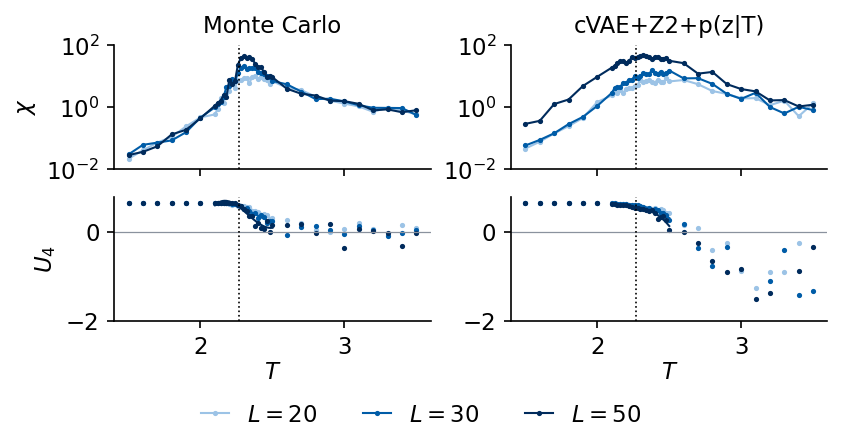
The top row shows \(\chi(T)\) and the bottom row \(U_4(T)\) for the three sizes, Monte Carlo on the left and synthetic data on the right. The lines in the bottom row are the cubic fits used for the crossings, and points with \(U_4<-2\) lie outside the plotted range.
The Monte Carlo maxima of \(\chi\) lie at \(T=2.374\pm0.034\), \(2.298\pm0.030\) and \(2.301\pm0.020\) for \(L=20\), 30 and 50, with heights 10.2, 21.1 and 43.6, and the slope of \(\ln\chi_{\max}\) against \(\ln L\) is 1.58, close to \(7/4\) for three small sizes. The synthetic maxima lie higher in temperature for the small sizes (\(2.481\pm0.077\), \(2.381\pm0.072\), \(2.321\pm0.041\)), and their heights (8.5, 15.7, 48.8) also grow with \(L\), with slope 1.92. The growth of the susceptibility peak with system size is preserved approximately, while the synthetic peaks are broad, as the right panel shows, and at \(L=50\) the synthetic \(\chi\) is too large over the whole ordered side.
The Binder crossing is lost. The Monte Carlo curves cross at \(2.231\pm0.020\) (\(L=20\) and 30), \(2.252\pm0.007\) (30 and 50) and \(2.245\pm0.005\) (20 and 50), close to \(T_c=2.269\). The synthetic curves of \(L=20\) and 30 cross at \(2.347\pm0.061\), the curves of 30 and 50 do not cross in the window in the full data set and in 65% of the bootstrap resamples, and the crossing of 20 and 50 lies at the edge of the window. Above \(T_c\) the synthetic \(U_4\) becomes strongly negative, which means \(\langle m^4\rangle>3\langle m^2\rangle^2\), a \(P(m)\) with heavier tails than a Gaussian. Each generated snapshot at high temperature draws its own latent vector, and some vectors produce partially ordered maps. The fourth moment of \(m\), which the Binder cumulant needs, is a property of the tails of \(P(m)\) that the generator does not reproduce.
9. Ising lattice gauge theory
We now apply the same generator design to a model without a local order parameter, the Ising lattice gauge theory of Lab 031 [Wegner 1971]. Ising variables \(\sigma_\mu(x)=\pm1\) live on the links of a periodic cubic lattice with \(L=6\), which has \(3L^3=648\) links. The plaquette variable is the product of the four links around an elementary square, \[
U_p=\sigma_\mu(x)\,\sigma_\nu(x+\hat e_\mu)\,\sigma_\mu(x+\hat e_\nu)\,\sigma_\nu(x),\qquad H=-\sum_pU_p,\qquad \beta_{\rm g}=1/T ,
\] with \(N_p=3L^3\) plaquettes and the coupling \(\beta_{\rm g}\), written beta in the code and \(\beta\) on the figure axes. The gauge transformation \(\sigma_\mu(x)\to\tau(x)\,\sigma_\mu(x)\,\tau(x+\hat e_\mu)\) with an arbitrary \(\tau(x)=\pm1\) on every site leaves every plaquette and hence \(H\) unchanged. Elitzur’s theorem states that every quantity that is not gauge invariant has zero thermal average, in particular \(\langle\sigma_l\rangle=0\) for every link at every temperature [Elitzur 1975]. Physical statements can be made only with gauge-invariant quantities. We use the plaquette average \(\langle U_p\rangle=-\langle H\rangle/N_p\), which is minus the energy per plaquette, the specific heat \(c=\beta_{\rm g}^2N_p\big(\langle\bar U^2\rangle-\langle\bar U\rangle^2\big)\) with \(\bar U\) the plaquette average of one configuration, and the Wilson loops \(W(R,R)=\big\langle\prod_{l\in C}\sigma_l\big\rangle\) around \(R\times R\) squares \(C\), averaged over positions and planes.
The 3D model has a confinement–deconfinement transition at \(\beta_{\rm g,c}=0.761413\), obtained in Lab 031 from Wegner’s duality to the 3D Ising model. In the confined phase (\(\beta_{\rm g}<\beta_{\rm g,c}\)) Wilson loops decay with the area, \(W\sim e^{-\sigma_{\rm s}R^2}\), and in the deconfined phase (\(\beta_{\rm g}>\beta_{\rm g,c}\)) with the perimeter, \(W\sim e^{-4\mu R}\). The Creutz ratio \(\chi_{\rm C}(R,R)=-\ln\big[W(R,R)\,W(R-1,R-1)/W(R,R-1)^2\big]\) [Creutz 1980] removes the perimeter term and estimates the string tension \(\sigma_{\rm s}\), so it is positive in the confined phase and close to zero in the deconfined phase.
The data are the heat-bath configurations of Lab 031 at 29 couplings \(\beta_{\rm g}\in[0.3,1.2]\), 1024 per coupling from 16 independent chains, each stored after an independent random gauge transformation. We split them by chain, 8 chains (512 configurations) for training and 4 chains each (256 configurations) for U_A and U_B. In these data every link is \(+1\) or \(-1\) with probability 1/2 at every \(\beta_{\rm g}\), and the physics sits in products of four or more links. We therefore train two variants of the conditional-prior cVAE, with condition \(\mathbf c=2(\beta_{\rm g}-0.75)\). The first sees the raw links. The second sees gauge-fixed links, the gauge-theory counterpart of the \(\mathbb Z_2\) representative of Section 3.4. A maximal tree is a set of \(L^3-1=215\) links that touches every site and contains no closed loop, and a gauge transformation can set all of them to \(+1\). We use the tree of links \(\sigma_0(x)\) with \(x_0<L-1\), links \(\sigma_1\) on the plane \(x_0=0\) with \(x_1<L-1\), and links \(\sigma_2\) on the line \(x_0=x_1=0\) with \(x_2<L-1\), the 3D version of the tree gauge of Lab 031. Every gauge orbit contains exactly one tree-fixed configuration, and all gauge-invariant quantities are unchanged. The cell checks both statements on data.
Code
dg = np.load(f"{DATA}/z2gauge_3d_L6.npz")LG =int(dg["L"]); NL =3* LG **3# 6^3 sites, 648 linksbeta_g = dg["beta"]; n_b =len(beta_g)chain_g = dg["chain"] # (1024,) index of the Markov chain of every sampleU_all = dg["links"] # (29, 1024, 3, 6, 6, 6) int8U_train, U_A, U_B = U_all[:, chain_g <8], U_all[:, (chain_g >=8) & (chain_g <12)], U_all[:, chain_g >=12]BETA_C3 =0.761413# from Wegner duality and the 3D Ising critical couplingprint(f"3D Ising gauge theory, L = {LG}: {n_b} couplings beta in [{beta_g[0]}, {beta_g[-1]}], links {U_all.shape}")print(f"split by Markov chain: {U_train.shape[1]} training, {U_A.shape[1]} + {U_B.shape[1]} held-out configurations per coupling")def tree_gauge(U):'''Maximal-tree gauge fixing of 3D links U (..., 3, L, L, L): sets sigma_0(x) = 1 for x_0 < L-1, then sigma_1 = 1 on the plane x_0 = 0 for x_1 < L-1, then sigma_2 = 1 on the line x_0 = x_1 = 0 for x_2 < L-1 (L^3 - 1 tree links). Plaquettes are unchanged.''' U = U.astype(np.int8).copy()def transform(U, g): # sigma'_mu(x) = g(x) sigma_mu(x) g(x + e_mu)for mu inrange(3): U[..., mu, :, :, :] = g * U[..., mu, :, :, :] * np.roll(g, -1, axis=g.ndim -3+ mu)return Udef exclusive_cumprod(a, axis): # g_k = prod_{j<k} a_j along axis, g_0 = 1 c = np.cumprod(a, axis=axis, dtype=np.int8)return np.concatenate([np.ones_like(np.take(c, [0], axis=axis)), np.take(c, range(c.shape[axis] -1), axis=axis)], axis=axis) U = transform(U, exclusive_cumprod(U[..., 0, :, :, :], -3)) g2 = exclusive_cumprod(U[..., 1, :1, :, :], -2) # depends on (x_1, x_2), the same for every x_0 U = transform(U, np.broadcast_to(g2, U[..., 1, :, :, :].shape)) g3 = exclusive_cumprod(U[..., 2, :1, :1, :], -1) # depends on x_2 onlyreturn transform(U, np.broadcast_to(g3, U[..., 2, :, :, :].shape))def shift3(a, mu, n=1):return jnp.roll(a, -n, axis=mu) # the field at x + n e_mudef line_product(a, mu, n): out = afor k inrange(1, n): out = out * shift3(a, mu, k)return out # product of n consecutive links of direction mudef wilson_table(U, Rmax=3):'''W(R,T) for R, T = 1..Rmax of one configuration (3, L, L, L): R x T loop products averaged over positions and the six ordered planes (R along mu, T along nu). W(1,1) is the mean plaquette.''' Uf = U.astype(jnp.float32)def loop(R, T): vals = []for mu inrange(3):for nu inrange(3):if mu != nu: a, c = line_product(Uf[mu], mu, R), line_product(Uf[nu], nu, T) vals.append(jnp.mean(a * shift3(c, mu, R) * shift3(a, nu, T) * c)) # bottom, right, top, left sidesreturn jnp.mean(jnp.stack(vals))return jnp.stack([jnp.stack([loop(R, T) for T inrange(1, Rmax +1)]) for R inrange(1, Rmax +1)])wilson_batch = jax.jit(jax.vmap(wilson_table))def creutz(W, R):'''Creutz ratio chi(R,R) = -ln[W(R,R) W(R-1,R-1) / W(R,R-1)^2] from mean loops W (..., Rmax, Rmax), W(0,T) = W(R,0) = 1.''' Wp = np.pad(W, [(0, 0)] * (W.ndim -2) + [(1, 0), (1, 0)], constant_values=1.0)with np.errstate(invalid="ignore", divide="ignore"):return-np.log(Wp[..., R, R] * Wp[..., R -1, R -1] / Wp[..., R, R -1] **2)def gauge_observables(U, betas):'''Per coupling: <U_p>, c = beta^2 N_p Var(U_bar), W(R,R), Creutz ratios chi(2,2), chi(3,3), link average; U: (n_b, n, 3, L, L, L).''' W = np.stack([np.concatenate([np.asarray(wilson_batch(jnp.asarray(U[i, k:k +256]))) for k inrange(0, U.shape[1], 256)])for i inrange(U.shape[0])]) # (n_b, n, 3, 3) per configuration Wm = W.mean(1)return {"U": Wm[:, 0, 0], "c": np.asarray(betas) **2* NL * W[:, :, 0, 0].var(1),"W": np.stack([Wm[:, R, R] for R inrange(3)], 1), "chi2": creutz(Wm, 2), "chi3": creutz(Wm, 3),"Ubar": W[:, :, 0, 0], "link": U.reshape(U.shape[0], -1).mean(1)}# checks: the tree links become +1, the plaquettes and Wilson loops do not change, and the link average of the data vanishes (Elitzur)U_chk = U_A[[0, -1], :32]U_fix = tree_gauge(U_chk)tree = np.zeros((3, LG, LG, LG), bool); tree[0, :LG -1] =True; tree[1, 0, :LG -1] =True; tree[2, 0, 0, :LG -1] =Trueassert tree.sum() == LG **3-1and np.all(U_fix[..., tree] ==1)assert np.allclose(np.asarray(wilson_batch(jnp.asarray(U_fix.reshape(-1, 3, LG, LG, LG)))), np.asarray(wilson_batch(jnp.asarray(U_chk.reshape(-1, 3, LG, LG, LG)))))print(f"checks passed: {tree.sum()} tree links set to +1, all Wilson loops unchanged by the gauge fixing")G_A, G_B = gauge_observables(U_A, beta_g), gauge_observables(U_B, beta_g)print(f"link average of the Monte Carlo data, largest |<sigma>| over the couplings: {np.abs(G_A['link']).max():.4f}")
3D Ising gauge theory, L = 6: 29 couplings beta in [0.3, 1.2], links (29, 1024, 3, 6, 6, 6)
split by Markov chain: 512 training, 256 + 256 held-out configurations per coupling
checks passed: 215 tree links set to +1, all Wilson loops unchanged by the gauge fixing
link average of the Monte Carlo data, largest |<sigma>| over the couplings: 0.0056
Code
cond_G =lambda b: (2.0* (np.asarray(b, np.float32) -0.75))[..., None] # (..., 1): the condition fed to the networksdef generate_flat(model, cond, n_per_cond, key, batch=8192):'''Bernoulli samples (K, n_per_cond, n_sites) int8 +-1 with z ~ p(z|c) at every condition row of cond (K, n_cond).''' c_all = np.repeat(np.asarray(cond, np.float32), n_per_cond, axis=0) out = []for i inrange(0, len(c_all), batch): k_z, k_s = jax.random.split(jax.random.fold_in(key, i)) c = jnp.asarray(c_all[i:i + batch]) mu_p, logvar_p = model.prior(c) z = mu_p + jnp.exp(0.5* logvar_p) * jax.random.normal(k_z, mu_p.shape) out.append(np.asarray(jnp.where(jax.random.bernoulli(k_s, jax.nn.sigmoid(decoder_logits(model, z, c))), 1, -1), np.int8))return np.concatenate(out).reshape(len(cond), n_per_cond, -1)GAUGE_VARIANTS = {"cVAE, raw links": False, "cVAE, tree gauge": True}G_SYN, gauge_models = {}, {}t0 = time.time()for name, fix in GAUGE_VARIANTS.items(): X = (tree_gauge(U_train) if fix else U_train).reshape(-1, NL) # int8 (29 * 512, 648) model_g = CVAE(NL, 1, conditional_prior=True, rngs=nnx.Rngs(0)) hist_g = train_model(model_g, cvae_loss, (X, cond_G(np.repeat(beta_g, U_train.shape[1]))), epochs=40, batch=128, lr=1e-3, seed=0) syn = generate_flat(model_g, cond_G(beta_g), U_A.shape[1], jax.random.key(800+ fix)) # (29, 256, 648) G_SYN[name] = syn.reshape(n_b, U_A.shape[1], 3, LG, LG, LG) gauge_models[name] = model_gprint(f"{name:18s}: trained in {time.time() - t0:.0f} s, -ELBO per configuration {hist_g[-1, 0]:.1f} (N log 2 = {NL * np.log(2):.1f})")G_OBS = {"Monte Carlo A": G_A, "Monte Carlo B": G_B}for name in GAUGE_VARIANTS: G_OBS[name] = gauge_observables(G_SYN[name], beta_g)
cVAE, raw links : trained in 22 s, -ELBO per configuration 449.1 (N log 2 = 449.2)
cVAE, tree gauge : trained in 42 s, -ELBO per configuration 114.1 (N log 2 = 449.2)
Code
conf, deconf = beta_g < BETA_C3, beta_g > BETA_C3print("noise units R = mean |O_syn - O_A| / mean |O_B - O_A| over the couplings (confined beta < beta_c / deconfined beta > beta_c)")GKEYS = [("U", "<U_p>"), ("c", "c"), ("W2", "W(2,2)"), ("W3", "W(3,3)")]for name in ["Monte Carlo B"] +list(GAUGE_VARIANTS): o = G_OBS[name]; row = {}for k, lab in GKEYS: get = (lambda d: d["W"][:, int(k[1]) -1]) if k.startswith("W") else (lambda d: d[k]) row[k] = [noise_ratio(get(o)[sel], get(G_A)[sel], get(G_B)[sel]) for sel in (conf, deconf)]print(f" {name:18s}"+"".join(f" {lab}: {a:6.1f} / {b:6.1f}"for (k, lab), (a, b) inzip(GKEYS, row.values()))) NUMBERS[f"gauge_R_{name}"] = {k: [round(a, 1), round(b, 1)] for k, (a, b) in row.items()}sel_g = [int(np.argmin(np.abs(beta_g - b))) for b in (0.4, 0.6, 0.72, 0.8, 1.0)]print("\nbeta "+"".join(f"{beta_g[i]:9.2f}"for i in sel_g))for k, lab in [("U", "<U_p>"), ("c", "c"), ("chi2", "chi(2,2)")]:for name in G_OBS:print(f"{lab:8s}{name:18s}"+"".join(f"{G_OBS[name][k][i]:9.3f}"for i in sel_g)) NUMBERS[f"gauge_{k}_table"] = {"beta": [float(beta_g[i]) for i in sel_g],**{n: [round(float(G_OBS[n][k][i]), 3) for i in sel_g] for n in G_OBS}}for name in G_OBS:print(f"link average {name:18s}: mean over couplings {G_OBS[name]['link'].mean():+.3f}") NUMBERS[f"gauge_link_{name}"] =round(float(G_OBS[name]["link"].mean()), 3)for bv in (0.6, 0.9): i =int(np.argmin(np.abs(beta_g - bv)))for name in ["Monte Carlo A", "cVAE, tree gauge"]:with np.errstate(invalid="ignore"):print(f"beta = {beta_g[i]:.2f}, {name:18s}: -ln W(R,R) for R = 1, 2, 3: "+" ".join(f"{v:.3f}"for v in-np.log(G_OBS[name]["W"][i]))) NUMBERS[f"gauge_lnW_{beta_g[i]:.2f}"] = {n: [round(float(v), 3) for v in-np.log(np.clip(G_OBS[n]["W"][i], 1e-9, None))]for n in ["Monte Carlo A", "cVAE, tree gauge"]}gstyles = [("Monte Carlo A", navy, "-"), ("cVAE, raw links", orange, "-"), ("cVAE, tree gauge", blue, "-")]with mpl.rc_context(RC11): fig, ax = plt.subplots(2, 2, figsize=(5.5, 3.0), layout="constrained"); ax = ax.ravel()for name, col, ls in gstyles: ax[0].plot(beta_g, G_OBS[name]["U"], ".-", color=col, ms=3, lw=1, label=name.replace("Monte Carlo A", "Monte Carlo")) ax[1].plot(beta_g, G_OBS[name]["c"], ".-", color=col, ms=3, lw=1) ax[1].fill_between(beta_g, np.minimum(G_A["c"], G_B["c"]), np.maximum(G_A["c"], G_B["c"]), color=navy, alpha=0.25, lw=0) ax[0].set_ylabel(r"$\langle U_p\rangle$"); ax[1].set_ylabel("$c$"); ax[1].set_yscale("log"); ax[1].set_ylim(1e-3, 30)for a in ax[:2]: a.axvline(BETA_C3, color="k", ls=":", lw=0.8); a.set_xlabel(r"$\beta$", labelpad=1) R = np.arange(1, 4)for panel, bv, xs, xl in [(2, 0.6, R **2, "area $R^2$"), (3, 0.9, 4* R, "perimeter $4R$")]: i =int(np.argmin(np.abs(beta_g - bv)))for name, col, ls in [gstyles[0], gstyles[2]]: W = G_OBS[name]["W"][i] ok = W >0.005# smaller loops are below the statistical noise ax[panel].plot(xs[ok], -np.log(W[ok]), "o-", color=col, ms=3, lw=1) ax[panel].set_xlabel(xl, labelpad=1); ax[panel].set_ylabel(rf"$-\ln W(R,R)$ at $\beta={beta_g[i]:.2f}$") ax[panel].set_xticks(xs) fig.legend(*ax[0].get_legend_handles_labels(), loc="outside lower center", ncol=3, handlelength=1.2) save(fig, "gen_l6_gauge.png"); plt.show()
noise units R = mean |O_syn - O_A| / mean |O_B - O_A| over the couplings (confined beta < beta_c / deconfined beta > beta_c)
Monte Carlo B <U_p>: 1.0 / 1.0 c: 1.0 / 1.0 W(2,2): 1.0 / 1.0 W(3,3): 1.0 / 1.0
cVAE, raw links <U_p>: 90.7 / 679.9 c: 4.1 / 16.1 W(2,2): 20.9 / 205.8 W(3,3): 12.1 / 119.8
cVAE, tree gauge <U_p>: 42.6 / 48.4 c: 52.7 / 74.1 W(2,2): 9.2 / 23.8 W(3,3): 5.6 / 17.9
beta 0.40 0.60 0.72 0.80 1.00
<U_p> Monte Carlo A 0.395 0.625 0.865 0.971 0.997
<U_p> Monte Carlo B 0.398 0.636 0.868 0.972 0.997
<U_p> cVAE, raw links 0.001 0.002 -0.001 -0.001 0.001
<U_p> cVAE, tree gauge 0.073 0.210 0.575 0.818 0.996
c Monte Carlo A 0.141 0.496 1.615 0.194 0.027
c Monte Carlo B 0.148 0.509 1.767 0.260 0.031
c cVAE, raw links 0.168 0.344 0.537 0.762 0.898
c cVAE, tree gauge 0.202 2.060 9.732 8.171 0.137
chi(2,2) Monte Carlo A 1.241 0.406 0.070 0.004 0.000
chi(2,2) Monte Carlo B 0.964 0.385 0.069 0.004 0.000
chi(2,2) cVAE, raw links 2.059 -8.600 3.969 nan nan
chi(2,2) cVAE, tree gauge nan 0.222 0.018 0.004 0.000
link average Monte Carlo A : mean over couplings +0.000
link average Monte Carlo B : mean over couplings -0.000
link average cVAE, raw links : mean over couplings -0.001
link average cVAE, tree gauge : mean over couplings +0.752
beta = 0.60, Monte Carlo A : -ln W(R,R) for R = 1, 2, 3: 0.470 1.785 3.909
beta = 0.60, cVAE, tree gauge : -ln W(R,R) for R = 1, 2, 3: 1.562 2.911 4.259
beta = 0.90, Monte Carlo A : -ln W(R,R) for R = 1, 2, 3: 0.008 0.018 0.027
beta = 0.90, cVAE, tree gauge : -ln W(R,R) for R = 1, 2, 3: 0.025 0.048 0.071
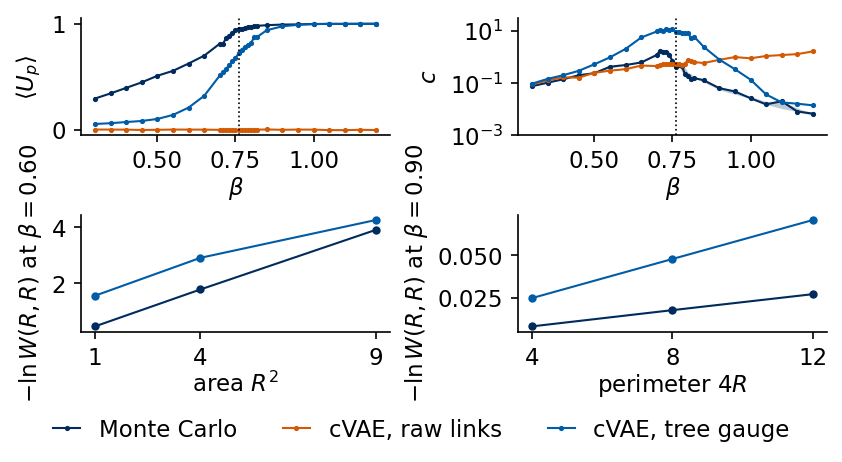
The figure shows \(\langle U_p\rangle\) (top left) and \(c\) (top right, with the band between U_A and U_B) against \(\beta_{\rm g}\), with the dotted line at \(\beta_{\rm g,c}\), and \(-\ln W(R,R)\) against the area \(R^2\) at \(\beta_{\rm g}=0.60\) (confined) and against the perimeter \(4R\) at \(\beta_{\rm g}=0.90\) (deconfined). Loops with \(W<0.005\) are below the statistical noise and are not drawn. The printed table writes the Creutz ratio as chi(2,2).
The generator trained on raw links learns nothing. Its \(-\)ELBO equals \(N\ln2\), the cost of independent fair coins, so the decoder ignores \(\mathbf z\) and outputs probability 1/2 for every link. All its gauge-invariant observables are those of random links, \(\langle U_p\rangle\approx0\) and \(c\approx\beta_{\rm g}^2\) at every coupling, and its link average of \(-0.001\) agrees with Elitzur’s theorem only trivially. The random gauge of every snapshot hides the plaquette structure from a decoder that draws links independently, which is the generative counterpart of the failure of a fully connected classifier on raw gauge configurations discussed in Lab 031.
After gauge fixing the generator learns. Deep in the deconfined phase it reproduces the plaquette average (\(0.996\) against \(0.997\) at \(\beta_{\rm g}=1.0\)) and the perimeter law of the Wilson loops, with a perimeter coefficient about 2.4 times the Monte Carlo value at \(\beta_{\rm g}=0.9\) (\(-\ln W\) grows by 0.046 from \(R=1\) to \(R=3\) against 0.019). Around and below \(\beta_{\rm g,c}\) the energy fails. The plaquette average is \(0.575\) against \(0.865\) at \(\beta_{\rm g}=0.72\) and \(0.073\) against \(0.395\) at \(\beta_{\rm g}=0.4\), the specific heat peaks at about \(9.7\) instead of \(1.6\), and the noise ratios of \(\langle U_p\rangle\) and \(c\) are between 40 and 75 on both sides of the transition. In the confined phase the Monte Carlo loops follow the area law, with \(-\ln W\) growing by 0.44 and 0.42 per unit of area from \(R=1\) to 2 and from 2 to 3. The synthetic \(-\ln W\) grows by 1.35 for each unit of \(R\), which is a perimeter law, and the Creutz ratio \(\chi_{\rm C}(2,2)\) is \(0.222\) against \(0.406\) at \(\beta_{\rm g}=0.6\). The generator underestimates the string tension and blurs the transition. This is consistent with the product structure. In the tree gauge a free link is a product of many plaquettes, and a decoder that draws links independently cannot represent the short-range correlations between the plaquettes of the confined phase. The link average of the tree-gauge samples is \(0.752\), a property of the gauge choice without physical meaning, which is why the comparison uses only gauge-invariant quantities.
10. Long-range Ising model
The argument of Section 5 locates the energy failure in the connected correlations between interacting spins, which a product distribution sets to zero. If every spin interacts with many others, its local field is an average over many spins, its fluctuations are small, and the energy is close to its value for independent spins with the same mean spins. The energy failure should then shrink as the interaction becomes longer-ranged. We test this with the long-range Ising model on a periodic \(L\times L\) lattice, \[
H=-\frac12\sum_{i\neq j}J_{ij}\,s_is_j,\qquad J_{ij}=\frac{J_0}{r_{ij}^{\alpha}},\qquad e=\frac HN ,
\] where \(r_{ij}\) is the minimal-image distance and \(J_0\) is chosen so that \(\sum_jJ_{ij}=4\) for every \(\alpha\), as for nearest neighbours. Then the ground state has \(e=-2\) and the mean-field transition lies at \(T=4\) for every \(\alpha\), and the limit \(\alpha\to\infty\) leaves only the four nearest neighbours.
In \(d=2\) dimensions the renormalisation-group analysis of Fisher, Ma and Nickel [1972] gives mean-field critical exponents for \(\alpha<3d/2=3\), and exponents that depend on \(\alpha\) above this threshold. Sak [1973] showed that the exponents take their short-range values for \(\alpha>d+2-\eta_{\rm SR}\), where \(\eta_{\rm SR}=1/4\) is the anomalous-dimension exponent of the 2D Ising model, that is \(\alpha>3.75\). We take \(\alpha=2.5\) (mean-field regime), \(\alpha=3.5\) (intermediate regime), \(\alpha=6\) (short-range regime) and \(\alpha=\infty\) (nearest neighbours).
All spins interact, so the checkerboard decomposition of Section 7 does not apply. We sweep the sites in order and propose a flip of each, accepted with probability \(\min(1,e^{-\Delta H/T})\) with \(\Delta H=2s_ih_i\) and the full local field \(h_i=\sum_jJ_{ij}s_j\). After an accepted flip of \(s_i\) every local field changes, \(h_j\to h_j-2s_iJ_{ji}\) with the old value of \(s_i\), so a sweep costs \(O(N^2)\) operations and we use \(L=16\) (\(N=256\)). All chains of all couplings and temperatures run in parallel as one batch. The cell checks the coupling normalisation and compares the sampler with exact enumeration of all \(2^{16}\) states of a \(4\times4\) lattice.
Code
LR_L =16; LR_N = LR_L * LR_LLR_ALPHAS = [2.5, 3.5, 6.0, np.inf] # alpha = inf: nearest neighbours onlydef lr_couplings(alpha, Ll=LR_L):'''J_ij = J_0 / r_ij^alpha on the periodic L x L lattice (minimal-image distance), normalised to sum_j J_ij = 4; shape (N, N).''' x = np.arange(Ll) dx = np.abs(x[:, None] - x[None, :]); dx = np.minimum(dx, Ll - dx) # (L, L) minimal-image separations r = np.sqrt(dx[:, None, :, None] **2+ dx[None, :, None, :] **2).reshape(Ll * Ll, Ll * Ll) # site index = x * L + ywith np.errstate(divide="ignore"): J = np.where(r >0, (r ==1).astype(float) if np.isinf(alpha) else r ** (-float(alpha)), 0.0)return4.0* J / J.sum(1, keepdims=True)J_LR = np.stack([lr_couplings(a) for a in LR_ALPHAS]).astype(np.float32) # (n_alpha, N, N)@partial(jax.jit, static_argnames=("n_equil", "n_samples", "n_between"))def lr_chains(s0, keys, a_idx, betas, J, n_equil, n_samples, n_between):'''Sequential single-spin Metropolis with the full local field h_i = sum_j J_ij s_j for C chains at once. s0: (C, N), a_idx: (C,) which coupling matrix, betas: (C,). Returns int8 samples (C, n_samples, N).''' C, n_sites = s0.shapedef sweep(carry, key): s, h = carry u = jax.random.uniform(key, (n_sites, C))def flip(i, sh): s, h = sh dE =2.0* s[:, i] * h[:, i] ds = jnp.where(u[i] < jnp.exp(-betas * dE), -2.0* s[:, i], 0.0) # change of s_i: -2 s_i if accepted, else 0return s.at[:, i].add(ds), h + ds[:, None] * J[a_idx, :, i] # update every local fieldreturn lax.fori_loop(0, n_sites, flip, (s, h)), None h0 = jnp.einsum("cij,cj->ci", J[a_idx], s0) carry, _ = lax.scan(sweep, (s0, h0), jax.random.split(keys[0], n_equil))def store(carry, key): carry, _ = lax.scan(sweep, carry, jax.random.split(key, n_between))return carry, carry[0].astype(jnp.int8)return lax.scan(store, carry, jax.random.split(keys[1], n_samples))[1].transpose(1, 0, 2)def lr_energy(S, a, J=None):'''Energy per spin e = -(1/2N) sum_ij J_ij s_i s_j for snapshots S (..., N); J = J_LR[a] unless given.''' J = J_LR[a] if J isNoneelse J s = S.astype(np.float32)return-0.5* np.einsum("...i,ij,...j->...", s, J, s) / s.shape[-1]# check 1: the all-up state has e = -2 for every alpha (sum_j J_ij = 4)assertall(np.isclose(lr_energy(np.ones(LR_N), a), -2.0, atol=1e-4) for a inrange(len(LR_ALPHAS)))# check 2: the sampler against exact enumeration of all 2^16 states of a 4 x 4 lattice, alpha = 2.5, T = 3J4 = lr_couplings(2.5, 4).astype(np.float32); T4 =3.0states =1-2* ((np.arange(2**16)[:, None] >> np.arange(16)) &1).astype(np.float32) # (65536, 16)E4 = lr_energy(states, None, J4) *16w4 = np.exp(-(E4 - E4.min()) / T4)e_exact =float((w4 * E4).sum() / w4.sum() /16)smp4 = np.asarray(lr_chains(jnp.ones((64, 16)), jax.random.split(jax.random.key(5), 2), jnp.zeros(64, int), jnp.full(64, 1/ T4), jnp.asarray(J4)[None], n_equil=200, n_samples=200, n_between=2))e_chain = lr_energy(smp4, None, J4).mean(1) # (64,) one mean per chainprint(f"check: 4 x 4 lattice, alpha = 2.5, T = 3: <e> exact {e_exact:.4f}, sampler {e_chain.mean():.4f} +- {e_chain.std(ddof=1) /8:.4f}")
check: 4 x 4 lattice, alpha = 2.5, T = 3: <e> exact -1.0930, sampler -1.0955 +- 0.0057
For every \(\alpha\) we simulate the same 13 temperatures \(T=1.5,1.75,\dots,4.5\) with 32 chains each, started cold, with 300 sweeps of equilibration followed by 10 snapshots 10 sweeps apart. Every stored snapshot is flipped globally with probability 1/2, an exact symmetry of \(H\) that restores the two ordered states which a cold start does not visit. The data are saved on the first run and loaded afterwards. Snapshots of chains 0–19 (200 per temperature) train the generator, chains 20–25 and 26–31 (60 each) form the held-out sets A and B. The last lines check the equilibration in the slowest case, nearest neighbours close to the transition, against chains started hot.
Code
LR_T = np.round(np.linspace(1.5, 4.5, 13), 2) # the same 13 temperatures for every alphaLR_CHAINS, LR_SAMPLES =32, 10lr_path =f"{DATA}/longrange_ising_L{LR_L}.npz"if os.path.exists(lr_path): S_LR = np.load(lr_path)["configs"]print(f"loaded long-range Monte Carlo data {S_LR.shape}")else: t0 = time.time() a_idx = np.repeat(np.arange(len(LR_ALPHAS)), len(LR_T) * LR_CHAINS) betas = np.tile(np.repeat(1.0/ LR_T, LR_CHAINS), len(LR_ALPHAS)) s0 = jnp.ones((len(a_idx), LR_N)) # cold start; the global flip is restored below S_LR = np.asarray(lr_chains(s0, jax.random.split(jax.random.key(2024), 2), jnp.asarray(a_idx), jnp.asarray(betas, jnp.float32), jnp.asarray(J_LR), n_equil=300, n_samples=LR_SAMPLES, n_between=10)) S_LR = S_LR.reshape(len(LR_ALPHAS), len(LR_T), LR_CHAINS * LR_SAMPLES, LR_N) # sample k comes from chain k // 10 flip = np.where(np.random.default_rng(3).random(S_LR.shape[:3] + (1,)) <0.5, -1, 1).astype(np.int8) S_LR = S_LR * flip # exact symmetry of H: random global flip of every snapshot np.savez_compressed(lr_path, configs=S_LR, alpha=np.array(LR_ALPHAS), T=LR_T, L=LR_L)print(f"long-range Monte Carlo: {len(a_idx)} chains, 400 sweeps each, {time.time() - t0:.0f} s; data {S_LR.shape}")chain_lr = np.arange(LR_CHAINS * LR_SAMPLES) // LR_SAMPLESLR_train, LR_A, LR_B = S_LR[:, :, chain_lr <20], S_LR[:, :, (chain_lr >=20) & (chain_lr <26)], S_LR[:, :, chain_lr >=26]def lr_observables(S, a):'''<e>, <|m|>, c, chi per temperature for snapshots S (n_T, n, N) with coupling matrix a.''' e = lr_energy(S, a); m = S.astype(np.float32).mean(-1)return {"e": e.mean(1), "m": np.abs(m).mean(1), "c": LR_N * e.var(1) / LR_T **2,"chi": LR_N * ((m **2).mean(1) - np.abs(m).mean(1) **2) / LR_T, "e_samples": e}# equilibration check for the slowest case (nearest neighbours near the transition): chains started hot instead of coldT_chk = np.array([2.25, 2.5]); a_nn = LR_ALPHAS.index(np.inf)hot0 = jnp.where(jax.random.bernoulli(jax.random.key(11), 0.5, (64, LR_N)), 1.0, -1.0)S_hot = np.asarray(lr_chains(hot0, jax.random.split(jax.random.key(12), 2), jnp.full(64, a_nn), jnp.asarray(np.repeat(1/ T_chk, 32), jnp.float32), jnp.asarray(J_LR), n_equil=300, n_samples=LR_SAMPLES, n_between=10)).reshape(2, -1, LR_N)for k, Tv inenumerate(T_chk): i =int(np.argmin(np.abs(LR_T - Tv))) e_cold, e_hot = lr_energy(S_LR[a_nn, i], a_nn), lr_energy(S_hot[k], a_nn)print(f"alpha = inf, T = {Tv}: <e> cold start {e_cold.mean():.3f} +- {e_cold.reshape(LR_CHAINS, -1).mean(1).std(ddof=1) / np.sqrt(LR_CHAINS):.3f}, "f"hot start {e_hot.mean():.3f} +- {e_hot.reshape(32, -1).mean(1).std(ddof=1) / np.sqrt(32):.3f}")
long-range Monte Carlo: 1664 chains, 400 sweeps each, 41 s; data (4, 13, 320, 256)
alpha = inf, T = 2.25: <e> cold start -1.485 +- 0.011, hot start -1.471 +- 0.014
alpha = inf, T = 2.5: <e> cold start -1.133 +- 0.009, hot start -1.138 +- 0.012
For every \(\alpha\) we train cVAE+Z2+p(z|T) with the condition \(\mathbf c=(T-3)/1.5\) for 40 epochs and generate 60 snapshots per temperature. The noise ratios \(R\) are those of Section 3, computed over the 13 temperatures, and the energy is also compared on the disordered side, at and above the temperature \(T^*\) of the Monte Carlo susceptibility maximum.
Code
cond_LR =lambda T: ((np.asarray(T, np.float32) -3.0) /1.5)[..., None]LR_RES = {}t0 = time.time()for a, alpha inenumerate(LR_ALPHAS): model_lr = CVAE(LR_N, 1, conditional_prior=True, rngs=nnx.Rngs(0)) train_model(model_lr, cvae_loss, (canonical(LR_train[a].reshape(-1, LR_L, LR_L)).reshape(-1, LR_N), cond_LR(np.repeat(LR_T, LR_train.shape[2]))), epochs=40, batch=64, lr=1e-3, seed=0) syn, _ = generate(model_lr, cond_LR(LR_T), LR_A.shape[2], jax.random.key(900+ a), LR_L, symmetric=True) oA, oB, oS = lr_observables(LR_A[a], a), lr_observables(LR_B[a], a), lr_observables(syn.reshape(len(LR_T), -1, LR_N), a) LR_RES[alpha] =dict(A=oA, B=oB, syn=oS, R={k: noise_ratio(oS[k], oA[k], oB[k]) for k in ["e", "m", "c", "chi"]}, de=float(np.mean(np.abs(oS["e"] - oA["e"]))), W1e=noise_ratio(wasserstein1(oS["e_samples"], oA["e_samples"]), 0, wasserstein1(oB["e_samples"], oA["e_samples"])))print(f"alpha = {alpha}: cVAE trained and sampled ({time.time() - t0:.0f} s)")print(f"{'alpha':>6s}{'mean_T|e_syn - e_A|':>20s}{'noise |e_B - e_A|':>18s} R_e R_W1(e) R_c R_|m| R_chi")for alpha, r in LR_RES.items():print(f"{alpha:6.1f}{r['de']:20.4f}{np.mean(np.abs(r['B']['e'] - r['A']['e'])):18.4f}{r['R']['e']:5.1f}{r['W1e']:6.1f} "f"{r['R']['c']:6.1f}{r['R']['m']:5.1f}{r['R']['chi']:5.1f}") NUMBERS[f"lr_{alpha}"] =dict(de=round(r["de"], 4), noise=round(float(np.mean(np.abs(r["B"]["e"] - r["A"]["e"]))), 4), Re=round(r["R"]["e"], 1), RW1e=round(r["W1e"], 1), Rc=round(r["R"]["c"], 1), Rm=round(r["R"]["m"], 1), Rchi=round(r["R"]["chi"], 1))for alpha in LR_RES: i_pk =int(np.argmax(LR_RES[alpha]["A"]["chi"])) hot = LR_T >= LR_T[i_pk] # at and above the susceptibility maximum res = LR_RES[alpha] R_hot = noise_ratio(res["syn"]["e"][hot], res["A"]["e"][hot], res["B"]["e"][hot]) de_hot =float(np.mean(np.abs(res["syn"]["e"] - res["A"]["e"])[hot]))print(f"alpha = {alpha}: Monte Carlo susceptibility maximum at T* = {LR_T[i_pk]}; for T >= T*: R_e = {R_hot:.1f}, "f"mean |<e>_syn - <e>_A| = {de_hot:.3f}") NUMBERS[f"lr_hot_{alpha}"] = [float(LR_T[i_pk]), round(R_hot, 1), round(de_hot, 3)]cols_a = {2.5: orange, 3.5: green, 6.0: blue, np.inf: navy}lab_a =lambda a: r"$\alpha=\infty$ (nearest neighbours)"if np.isinf(a) elserf"$\alpha={a:g}$"with mpl.rc_context(RC11): fig, ax = plt.subplots(1, 3, figsize=(5.5, 2.0), layout="constrained") r_nb = np.sqrt(np.arange(LR_L //2+1)[:, None] **2+ np.arange(LR_L //2+1)[None, :] **2).ravel()for a, alpha inenumerate(LR_ALPHAS): J0 = J_LR[a][0].reshape(LR_L, LR_L)[:LR_L //2+1, :LR_L //2+1].ravel() # couplings of site 0 in one quadrant keep = (r_nb >0) & (J0 >0) order_r = np.argsort(r_nb[keep]) ax[0].loglog(r_nb[keep][order_r], J0[keep][order_r], ".", color=cols_a[alpha], ms=3, label=lab_a(alpha)) res = LR_RES[alpha] ax[1].plot(LR_T, res["syn"]["e"] - res["A"]["e"], ".-", color=cols_a[alpha], ms=3, lw=1) ax[1].fill_between(LR_T, -np.abs(LR_RES[np.inf]["B"]["e"] - LR_RES[np.inf]["A"]["e"]), np.abs(LR_RES[np.inf]["B"]["e"] - LR_RES[np.inf]["A"]["e"]), color=grey, alpha=0.3, lw=0) ax[0].set_xlabel("$r$", labelpad=1); ax[0].set_ylabel("$J(r)$") ax[1].axhline(0, color="k", lw=0.6); ax[1].set_xlabel("$T$", labelpad=1); ax[1].set_ylabel(r"$\langle e\rangle_{\rm cVAE}-\langle e\rangle_{\rm MC}$") xa = np.arange(len(LR_ALPHAS)) ax[2].bar(xa -0.2, [LR_RES[a]["R"]["e"] for a in LR_ALPHAS], 0.4, color=blue, label=r"$R_e$") ax[2].bar(xa +0.2, [LR_RES[a]["R"]["c"] for a in LR_ALPHAS], 0.4, color=orange, label=r"$R_c$") ax[2].set_xticks(xa); ax[2].set_xticklabels([r"$\infty$"if np.isinf(a) elsef"{a:g}"for a in LR_ALPHAS]) ax[2].set_xlabel(r"$\alpha$", labelpad=1); ax[2].set_ylabel("noise units"); ax[2].legend(loc="upper left", handlelength=1) fig.legend(*ax[0].get_legend_handles_labels(), loc="outside lower center", ncol=4, handlelength=1.0, columnspacing=0.8) save(fig, "gen_l6_long_range.png"); plt.show()
alpha = 2.5: cVAE trained and sampled (7 s)
alpha = 3.5: cVAE trained and sampled (12 s)
alpha = 6.0: cVAE trained and sampled (17 s)
alpha = inf: cVAE trained and sampled (22 s)
alpha mean_T|e_syn - e_A| noise |e_B - e_A| R_e R_W1(e) R_c R_|m| R_chi
2.5 0.0573 0.0215 2.7 2.1 1.6 1.0 1.3
3.5 0.1635 0.0217 7.5 6.3 6.8 1.2 0.7
6.0 0.2859 0.0193 14.8 10.3 13.0 1.5 1.2
inf 0.3621 0.0191 18.9 14.1 24.2 2.2 1.1
alpha = 2.5: Monte Carlo susceptibility maximum at T* = 3.5; for T >= T*: R_e = 2.2, mean |<e>_syn - <e>_A| = 0.088
alpha = 3.5: Monte Carlo susceptibility maximum at T* = 3.0; for T >= T*: R_e = 9.3, mean |<e>_syn - <e>_A| = 0.272
alpha = 6.0: Monte Carlo susceptibility maximum at T* = 2.5; for T >= T*: R_e = 18.1, mean |<e>_syn - <e>_A| = 0.385
alpha = inf: Monte Carlo susceptibility maximum at T* = 2.5; for T >= T*: R_e = 24.8, mean |<e>_syn - <e>_A| = 0.449
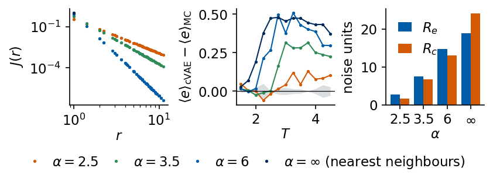
The left panel shows the couplings \(J(r)\) of one site against the distance (one quadrant of the lattice), the middle panel the energy difference \(\langle e\rangle_{\rm cVAE}-\langle e\rangle_{\rm MC}\) against \(T\) for each \(\alpha\) (grey band \(\pm|\langle e\rangle_B-\langle e\rangle_A|\) for nearest neighbours), and the right panel the noise ratios of the energy and the specific heat.
The energy failure shrinks monotonically as the interaction becomes longer-ranged. Averaged over all temperatures the synthetic energy deviates by \(0.362\) per spin from Monte Carlo for nearest neighbours, \(0.286\) for \(\alpha=6\), \(0.164\) for \(\alpha=3.5\) and \(0.057\) for \(\alpha=2.5\), with a real-vs-real noise of about \(0.02\) in all four cases, so that \(R_e\) falls from \(18.9\) to \(14.8\), \(7.5\) and \(2.7\). The specific heat follows (\(R_c=24.2\), \(13.0\), \(6.8\), \(1.6\)). On the disordered side, at and above \(T^*\), the same order holds (\(R_e=24.8\), \(18.1\), \(9.3\), \(2.2\)). The order parameter and the susceptibility are reproduced for every \(\alpha\) (\(R\le2.2\)). In the mean-field regime, \(\alpha=2.5\), the generator comes within a few noise units of every Hamiltonian observable tested.
These results agree with the mean-field argument. They come from one lattice size, one training seed per \(\alpha\) and 60 held-out snapshots per temperature, and the coupling normalisation \(\sum_jJ_{ij}=4\) makes the energy scale equal for all \(\alpha\), while the transition temperatures differ (\(T^*=3.5\), \(3.0\), \(2.5\), \(2.5\) on this grid).
11. Synthetic data and thermodynamics
The table below collects all numbers of the lab. Every test is run on the second real held-out set S_B, which gives the noise level, and on the synthetic data at the same conditions. For the noise ratios \(R\), a value of 1 means “as close to S_A as an independent Monte Carlo set”.
Code
def row(name, values, fmt="{:>9}"):print(f"{name:42s}"+"".join(fmt.format(v) for v in values))print("2D Ising, L = 30"+" "*26+"".join(f"{n:>9}"for n in ["MC B", "cVAE", "+Z2", "+p(z|T)", "most lik."]))cols_I = ["Monte Carlo B", "cVAE", "cVAE+Z2", BEST, ML]row("regressor RMSE of T_hat", [f"{rmse(EVAL[n][0]):.2f}"for n in cols_I])for k, lab in [("e", "<e>"), ("m", "<|m|>"), ("c", "c"), ("chi", "chi"), ("U4", "U4"), ("W1e", "W1 of P(e)"), ("W1m", "W1 of P(m)"), ("GL2", "G(L/2)")]: row(f"noise ratio R for {lab}", [f"{NUMBERS[f'ising_R_{n}'][k]:.1f}"for n in cols_I])row("C2ST accuracy at T = 1.8 / T_c / 3.0", ["/".join(f"{a:.2f}"for a in NUMBERS[f"ising_c2st_{'real vs real'if n =='Monte Carlo B'else n}"])for n in cols_I], "{:>16}")print()print("J1-J2, L = 32: fraction of grid points with the majority phase of S_A (all / seen / unseen)")print(f" {'real S_B':32s}{agree_AB:.3f} / {np.mean((PH_B == PH_A)[seen]):.3f} / {np.mean((PH_B == PH_A)[~seen]):.3f}")for n in [JNAME, JNAME +" (most likely)"]:print(f" {n:32s} "+" / ".join(f"{v:.3f}"for v in NUMBERS[f"j1j2_phase_agree_{n}"]))print("J1-J2 noise ratios R (seen / unseen): "+", ".join(f"{k}: {a} / {b}"for k, (a, b) in NUMBERS[f"j1j2_R_{JNAME}"].items()))print("\nExtended tests")fe = NUMBERS["fe_table"]print(f" KL(q_z || p) / N of the decoder (nats per spin): T = 1.50: {fe['1.50'][2]:.4f}, T = {T_grid[i_c]:.2f}: {fe[f'{T_grid[i_c]:.2f}'][2]:.4f}, "f"maximum {NUMBERS['fe_klmax'][0]:.3f} at T = {NUMBERS['fe_klmax'][1]}; mean field smaller at {NUMBERS['fe_cw_below']} of {n_T} temperatures")print(" spin-flip symmetry below T_c (fraction m > 0, chi^2 p-value): "+", ".join(f"{SHORT.get(n, n)}{NUMBERS[f'sym_{n}']['frac']:.3f} / {NUMBERS[f'sym_{n}']['p']:.2f}"for n in ["Monte Carlo A"] +list(VARIANTS)))print(" correlation length xi at T = 2.4 / 2.6 / 3.0 / 3.5: "+", ".join(f"{SHORT.get(n, n)} "+"/".join(f"{v:.1f}"for v in NUMBERS[f'xi_{n}']) for n in ["Monte Carlo A", BEST]))for Tv in REPAIR_T: rep = NUMBERS[f"repair_{T_grid[Tv]:.2f}"]print(f" Metropolis sweeps until <e>, <|m|>, G(r) agree, T = {T_grid[Tv]:.2f}: "+", ".join(f"{st}{rep[st]}"for st in STARTS))print(" finite size, chi_max at L = 20 / 30 / 50: Monte Carlo "+"/".join(f"{NUMBERS[f'fss_chimax_{Lf}'][0][0]:.1f}"for Lf in (20, 30, 50)) +", synthetic "+"/".join(f"{NUMBERS[f'fss_chimax_{Lf}'][1][0]:.1f}"for Lf in (20, 30, 50)))print(" finite size, U4 crossing (20, 30) / (30, 50): Monte Carlo "+" / ".join(f"{NUMBERS[f'fss_cross_{p}'][0][0]:.3f}"for p in ("20_30", "30_50")) +", synthetic "+" / ".join(f"{NUMBERS[f'fss_cross_{p}'][1][0]:.3f}"for p in ("20_30", "30_50")) +" (nan: no crossing)")for n in GAUGE_VARIANTS:print(f" gauge theory, {n:18s} R (confined / deconfined): "+", ".join(f"{k}{a} / {b}"for k, (a, b) in NUMBERS[f"gauge_R_{n}"].items()))print(" long-range Ising, R_e for alpha = 2.5 / 3.5 / 6 / inf: "+" / ".join(f"{NUMBERS[f'lr_{a}']['Re']}"for a in LR_ALPHAS) +", R_c: "+" / ".join(f"{NUMBERS[f'lr_{a}']['Rc']}"for a in LR_ALPHAS))
2D Ising, L = 30 MC B cVAE +Z2 +p(z|T)most lik.
regressor RMSE of T_hat 0.12 0.98 0.84 0.62 0.71
noise ratio R for <e> 1.0 60.0 50.0 34.8 39.6
noise ratio R for <|m|> 1.0 13.3 10.8 2.8 9.6
noise ratio R for c 1.0 155.4 146.1 39.0 6.6
noise ratio R for chi 1.0 11.8 9.7 2.0 3.7
noise ratio R for U4 1.0 2.1 1.7 4.2 3.2
noise ratio R for W1 of P(e) 1.0 38.1 31.9 21.6 24.5
noise ratio R for W1 of P(m) 1.0 3.3 2.8 1.3 2.8
noise ratio R for G(L/2) 1.0 15.0 12.4 3.0 11.1
C2ST accuracy at T = 1.8 / T_c / 3.0 0.50/0.53/0.50 0.95/0.94/0.99 0.95/0.98/1.00 0.73/0.95/0.98 1.00/0.98/0.99
J1-J2, L = 32: fraction of grid points with the majority phase of S_A (all / seen / unseen)
real S_B 0.997 / 0.998 / 0.997
cVAE+Z2+p(z|g,T) 0.954 / 0.953 / 0.954
cVAE+Z2+p(z|g,T) (most likely) 0.354 / 0.356 / 0.353
J1-J2 noise ratios R (seen / unseen): m: 4.4 / 4.8, m_str: 6.4 / 5.9, e: 64.0 / 63.9, c: 2279.2 / 1517.2
Extended tests
KL(q_z || p) / N of the decoder (nats per spin): T = 1.50: 0.0067, T = 2.26: 0.0912, maximum 0.127 at T = 2.6; mean field smaller at 37 of 37 temperatures
spin-flip symmetry below T_c (fraction m > 0, chi^2 p-value): Monte Carlo 0.515 / 0.75, cVAE 0.501 / 0.07, +Z2 0.506 / 0.98, +Z2+p(z|T) 0.477 / 0.50
correlation length xi at T = 2.4 / 2.6 / 3.0 / 3.5: Monte Carlo 4.0/2.5/1.4/1.1, +Z2+p(z|T) 19.2/9.6/6.5/6.7
Metropolis sweeps until <e>, <|m|>, G(r) agree, T = 1.80: generated (2, 2, 2), hot (256, 512, 512), cold (2, 4, 4)
Metropolis sweeps until <e>, <|m|>, G(r) agree, T = 2.26: generated (2, 0, 2), hot (64, 128, 128), cold (16, 16, 16)
Metropolis sweeps until <e>, <|m|>, G(r) agree, T = 3.00: generated (2, 0, 64), hot (4, 1, 64), cold (8, 8, 8)
finite size, chi_max at L = 20 / 30 / 50: Monte Carlo 10.2/21.1/43.6, synthetic 8.5/15.7/48.8
finite size, U4 crossing (20, 30) / (30, 50): Monte Carlo 2.231 / 2.252, synthetic 2.347 / nan (nan: no crossing)
gauge theory, cVAE, raw links R (confined / deconfined): U 90.7 / 679.9, c 4.1 / 16.1, W2 20.9 / 205.8, W3 12.1 / 119.8
gauge theory, cVAE, tree gauge R (confined / deconfined): U 42.6 / 48.4, c 52.7 / 74.1, W2 9.2 / 23.8, W3 5.6 / 17.9
long-range Ising, R_e for alpha = 2.5 / 3.5 / 6 / inf: 2.7 / 7.5 / 14.8 / 18.9, R_c: 1.6 / 6.8 / 13.0 / 24.2
Summary
A cVAE trained on Monte Carlo data reproduces, within a few noise units, what the networks trained on real data look at, namely the phase, the order parameter and its distribution, and the position of the transition. For the \(J_1\)–\(J_2\) model it does so also at conditions \((g,T)\) it has never seen, interpolating the phase diagram. This required two ingredients that both come from physics, the \(\mathbb Z_2\) symmetry of \(H\) imposed by construction and a prior \(p_\psi(\mathbf z|T)\) that depends on the condition, so that \(\mathbf z\) is drawn from the region of latent space that belongs to the requested temperature.
The cVAE does not reproduce the local quantities measured by the Hamiltonian, the energy \(\langle e\rangle\), its fluctuations (the specific heat \(c\)) and \(P(e)\). Generating at temperature \(T\) means drawing \(\mathbf z\) and then every spin independently from its probability \(\mathrm{sigm}(\ell_i)\). Given \(\mathbf z\) the decoder is a product over sites, a mean-field-like distribution, and nearest-neighbour correlations beyond what the 16 latent variables carry are lost, while Monte Carlo, a Markov chain whose stationary distribution is exactly \(e^{-H/T}/Z\), keeps them. A classifier two-sample test detects the difference at each of the three temperatures tested (accuracy 0.73 to 0.98, against 0.50 to 0.53 for real against real). Synthetic configurations can therefore be useful for questions about the phase, but they are not samples of \(e^{-H/T}/Z\) and cannot replace Monte Carlo for thermodynamics.
The extended tests sharpen this picture. The ELBO is a variational free energy in latent space, and the decoder’s product distributions, evaluated against Onsager’s exact free energy, lie up to 0.127 nats per spin above the Boltzmann distribution, further than the uniform mean-field distribution at every temperature. The spin-flip symmetry is preserved, learned by the plain cVAE and imposed in the other variants, while above \(T_c\) the correlation length is about four to six times too large and the short-range amplitude of \(G(r)\) about three times too small. The growth of the susceptibility peak with lattice size survives, and the crossing of the Binder cumulants of different sizes does not, because the generator misses the tails of \(P(m)\). For the Ising lattice gauge theory the generator learns nothing from raw, gauge-randomised links. After maximal-tree gauge fixing it reproduces the deconfined phase and the perimeter law, and misses the plaquette energy, the specific heat and the string tension near and below \(\beta_{\rm g,c}\). In long-range Ising models the energy failure shrinks as the interaction range grows, from 18.9 noise units for nearest neighbours to 2.7 for \(J_{ij}\propto r_{ij}^{-2.5}\), as the mean-field argument predicts.
Synthetic configurations are useful as starting points of Monte Carlo chains. Metropolis chains started from them reach the Monte Carlo energy, magnetisation and correlation function within 2 sweeps below and near \(T_c\) on the \(30\times30\) lattice, where a hot start needs 128 to 512 sweeps and a cold start needs 16 sweeps near \(T_c\). The configurations obtained in this way are Monte Carlo samples, and the generator has supplied only the starting point.
Exercises
Increase the latent dimension from 16 to 64 and record which tests improve, in particular the energy.
Replace the dense decoder by a convolutional one. The spins are still independent given \(\mathbf z\). Identify what changes and what cannot change.
Train the \(J_1\)–\(J_2\) cVAE without the \(\mathbb Z_2\) symmetry and without the conditional prior and repeat the phase and stripe-orientation tests.
References
D. P. Kingma, M. Welling, Auto-Encoding Variational Bayes, arXiv:1312.6114
K. Sohn, H. Lee, X. Yan, Learning Structured Output Representation using Deep Conditional Generative Models, Advances in Neural Information Processing Systems 28 (NeurIPS 2015), proceedings
D. Lopez-Paz, M. Oquab, Revisiting Classifier Two-Sample Tests, arXiv:1610.06545
R. H. Swendsen, J.-S. Wang, Nonuniversal critical dynamics in Monte Carlo simulations, Phys. Rev. Lett. 58, 86 (1987), doi:10.1103/PhysRevLett.58.86
D. Wu, L. Wang, P. Zhang, Solving Statistical Mechanics Using Variational Autoregressive Networks, Phys. Rev. Lett. 122, 080602 (2019), doi:10.1103/PhysRevLett.122.080602
N. Metropolis, A. W. Rosenbluth, M. N. Rosenbluth, A. H. Teller, E. Teller, Equation of State Calculations by Fast Computing Machines, J. Chem. Phys. 21, 1087 (1953), doi:10.1063/1.1699114
K. Binder, Finite size scaling analysis of Ising model block distribution functions, Z. Phys. B 43, 119 (1981), doi:10.1007/BF01293604
F. J. Wegner, Duality in Generalized Ising Models and Phase Transitions without Local Order Parameters, J. Math. Phys. 12, 2259 (1971), doi:10.1063/1.1665530
S. Elitzur, Impossibility of spontaneously breaking local symmetries, Phys. Rev. D 12, 3978 (1975), doi:10.1103/PhysRevD.12.3978
M. Creutz, Monte Carlo study of quantized SU(2) gauge theory, Phys. Rev. D 21, 2308 (1980), doi:10.1103/PhysRevD.21.2308
M. E. Fisher, S.-k. Ma, B. G. Nickel, Critical Exponents for Long-Range Interactions, Phys. Rev. Lett. 29, 917 (1972), doi:10.1103/PhysRevLett.29.917
J. Sak, Recursion Relations and Fixed Points for Ferromagnets with Long-Range Interactions, Phys. Rev. B 8, 281 (1973), doi:10.1103/PhysRevB.8.281
Code
NUMBERS["total_seconds"] =round(time.time() - T_START)withopen(f"{OUT}/numbers_lab025.json", "w") as f: json.dump(NUMBERS, f, indent=1)J = NUMBERSB, V, Z ="cVAE+Z2+p(z|T)", "cVAE", "cVAE+Z2"JN ="cVAE+Z2+p(z|g,T)"f1 =lambda x: f"{x:.1f}"if x <100elsef"{x:.0f}"; f2 =lambda x: f"{x:.2f}"; f3 =lambda x: f"{x:.3f}"pc =lambda x: f"{100* x:.0f}\\,\\%"; pc1 =lambda x: f"{100* x:.1f}\\,\\%"out = {}for tag, n in [("MC", "Monte Carlo A"), ("MCB", "Monte Carlo B"), ("V", V), ("Z", Z), ("P", B), ("ML", ML)]: out[f"rmse{tag}"], out[f"confmin{tag}"] = f2(J[f"ising_rmse_{n}"]), f2(J[f"ising_confmin_{n}"])for tag, n in [("V", V), ("Z", Z), ("P", B), ("ML", ML)]:for k, v in J[f"ising_R_{n}"].items(): out[f"R{k}{tag}"] = f1(v)for tag, n in [("MC", "Monte Carlo A"), ("V", V), ("Z", Z), ("P", B)]: out[f"mix{tag}"], out[f"mpos{tag}"] = pc(J[f"ising_mixed_{n}"]), f2(J[f"ising_mpos_{n}"])for tag, n in [("RR", "real vs real"), ("V", V), ("Z", Z), ("P", B), ("ML", ML)]:for i, v inenumerate(J[f"ising_c2st_{n}"]): out[f"ctwo{tag}{'abc'[i]}"] = f2(v)for tag, n in [("MC", "Monte Carlo A"), ("V", V), ("Z", Z), ("P", B)]:for i, v inenumerate(J[f"ising_dnn_{n}"]): out[f"dnn{tag}{'abc'[i]}"] = f2(v)for tag, n in [("V", V), ("Z", Z), ("P", B)]: out[f"elbotr{tag}"], out[f"elbote{tag}"] =f"{J[f'ising_elbo_train_{n}']:.0f}", f"{J[f'ising_elbo_test_{n}']:.0f}" out[f"active{tag}"], out[f"recacc{tag}"] =str(J[f"ising_active_{n}"]), pc(J[f"ising_recacc_{n}"])for key in ["e", "m", "c"]: t = J[f"ising_{key}_table"]for i inrange(len(t["T"])):for tag, n in [("MC", "Monte Carlo A"), ("P", B), ("ML", ML)]: out[f"{key}tab{tag}{'abcdef'[i]}"] = f2(t[n][i]) out[f"Ttab{'abcdef'[i]}"] = f2(t["T"][i])out["noiseE"] = f3(J["ising_noise_e"])out["phAB"] = pc1(J["j1j2_phase_agree_AB"])for tag, n in [("P", JN), ("ML", JN +" (most likely)")]: a, s_, u = J[f"j1j2_phase_agree_{n}"] out[f"ph{tag}"], out[f"ph{tag}seen"], out[f"ph{tag}unseen"] = pc1(a), pc1(s_), pc1(u)for k, (s_, u) in J[f"j1j2_R_{JN}"].items(): out[f"jR{k.replace('_', '')}seen"], out[f"jR{k.replace('_', '')}unseen"] = f1(s_), f1(u)out["orientMC"], out["orientP"] = f2(J["j1j2_orient_Monte Carlo A"]), f2(J[f"j1j2_orient_{JN}"])out["jelbotr"], out["jelboseen"], out["jelbounseen"] = (f"{J['j1j2_elbo_train']:.0f}", f"{J['j1j2_elbo_seen']:.0f}",f"{J['j1j2_elbo_unseen']:.0f}")out["jactive"], out["totalmin"] =str(J["j1j2_active"]), f"{J['total_seconds'] /60:.0f}"out["jcvmax"] =f"{J['j1j2_c_vmax']:.1f}"for Tv, (G_s, G_m, G_mc) in J["mf_G1"].items(): tag ="a"if Tv =="1.80"else"b" out[f"mfGs{tag}"], out[f"mfGm{tag}"], out[f"mfGmc{tag}"] = f3(G_s), f3(G_m), f3(G_mc)# numbers of Sections 5-10 (macro names contain letters only)f4 =lambda x: f"{x:.4f}"let ="abcdefghijklmnopqrstuvwxyz"for k, (Tv, vals) inenumerate(J["fe_table"].items()): out[f"feT{let[k]}"], out[f"feE{let[k]}"], out[f"feEq{let[k]}"] = Tv, f3(vals[0]), f3(vals[1]) out[f"feKL{let[k]}"], out[f"feKLmf{let[k]}"] = f4(vals[2]), f4(vals[3])out["feKLmax"], out["feTmax"], out["feMFbelow"] = f3(J["fe_klmax"][0]), f2(J["fe_klmax"][1]), str(J["fe_cw_below"])for tag, n in [("MC", "Monte Carlo A"), ("MCB", "Monte Carlo B"), ("V", V), ("Z", Z), ("P", B)]: d = J[f"sym_{n}"] out[f"symfrac{tag}"], out[f"symp{tag}"], out[f"symztwo{tag}"] = f3(d["frac"]), f2(d["p"]), f2(d["z2"]) out[f"xiA{tag}"] = f2(d["A"])for k, v inenumerate(J[f"xi_{n}"]): out[f"xi{tag}{let[k]}"] =f"{v:.1f}"if v >=10else f2(v)for k, Tv inenumerate(REPAIR_T):for st in STARTS:for obs_name, v inzip(("e", "m", "G"), J[f"repair_{T_grid[Tv]:.2f}"][st]): out[f"rep{st}{obs_name}{let[k]}"] ="--"if v isNoneelsestr(v)for key, vals in J.items():if key.startswith("fss_") andnot key.startswith("fss_slope"): name = key[4:].replace("Tpeak_", "Tpeak").replace("chimax_", "chimax").replace("cross_", "cross") name = name.replace("20", "a").replace("30", "b").replace("50", "c").replace("_", "")for tag, v inzip(("MC", "P"), vals): out[f"fss{name}{tag}"] ="--"ifnot np.isfinite(v[0]) else (f"{v[0]:.1f}"if"chimax"in name else f3(v[0])) out[f"fss{name}{tag}err"] = f3(v[1]) if"chimax"notin name elsef"{v[1]:.1f}"out["fssslopeMC"], out["fssslopeP"] = f2(J["fss_slope_real"]), f2(J["fss_slope_syn"])for tag, n in [("raw", "cVAE, raw links"), ("tree", "cVAE, tree gauge")]:for k, (a, b) in J[f"gauge_R_{n}"].items(): out[f"gR{k}{tag}conf"], out[f"gR{k}{tag}deconf"] = f1(a), f1(b) out[f"glink{tag}"] = f3(J[f"gauge_link_{n}"])for k in ("U", "c", "chi2"): t = J[f"gauge_{k}_table"]; kk = k.replace("2", "two")for i inrange(len(t["beta"])): out[f"gbeta{let[i]}"] = f2(t["beta"][i])for tag, n in [("MC", "Monte Carlo A"), ("tree", "cVAE, tree gauge")]: out[f"g{kk}{tag}{let[i]}"] = f3(t[n][i])for tag, a inzip(("a", "b", "c", "d"), (2.5, 3.5, 6.0, np.inf)): d = J[f"lr_{a}"] out[f"lrde{tag}"], out[f"lrnoise{tag}"] = f3(d["de"]), f3(d["noise"]) out[f"lrRe{tag}"], out[f"lrRc{tag}"], out[f"lrRm{tag}"], out[f"lrRchi{tag}"] = f1(d["Re"]), f1(d["Rc"]), f1(d["Rm"]), f1(d["Rchi"]) out[f"lrTstar{tag}"], out[f"lrRehot{tag}"] = f2(J[f"lr_hot_{a}"][0]), f1(J[f"lr_hot_{a}"][1])withopen(f"{OUT}/nb_numbers_lab025.tex", "w") as f:for k, v in out.items(): f.write(f"\\setnbnum{{p{k}}}{{{v}}}\n")print("numbers written")